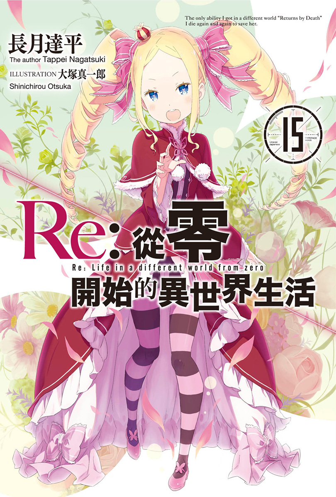
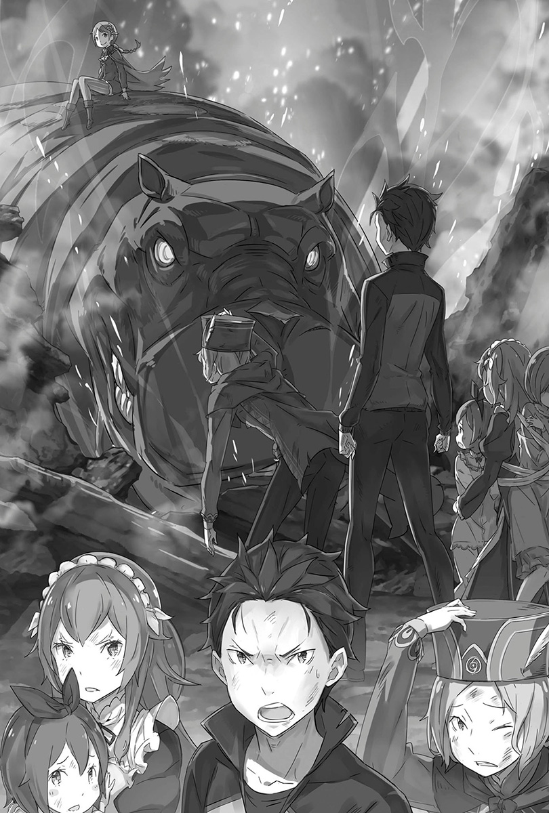
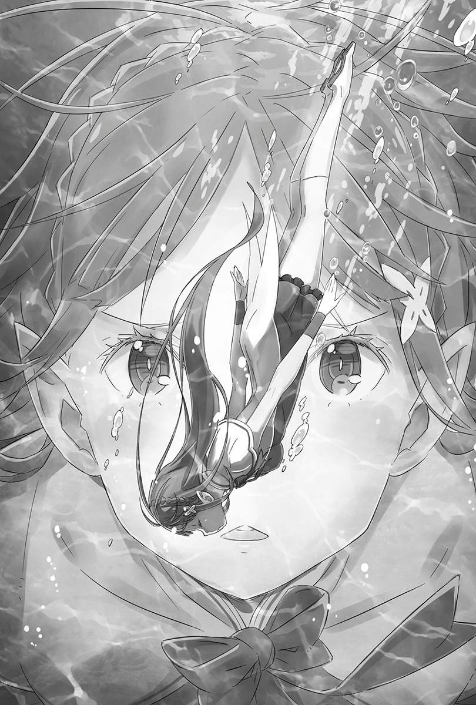
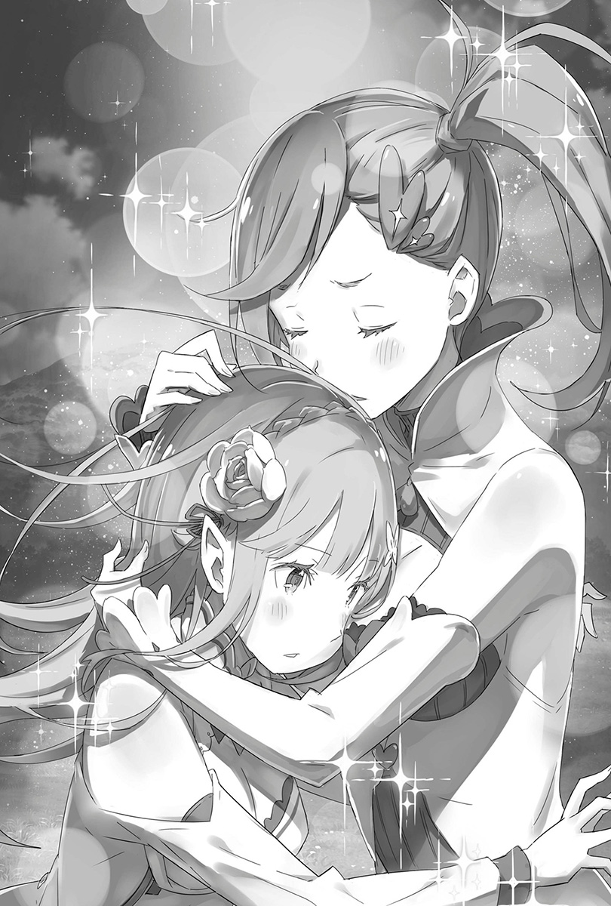
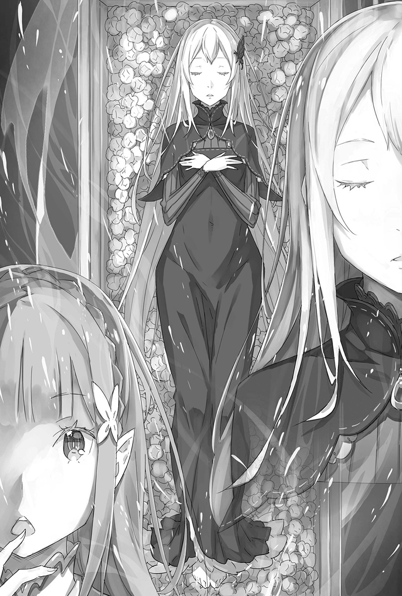
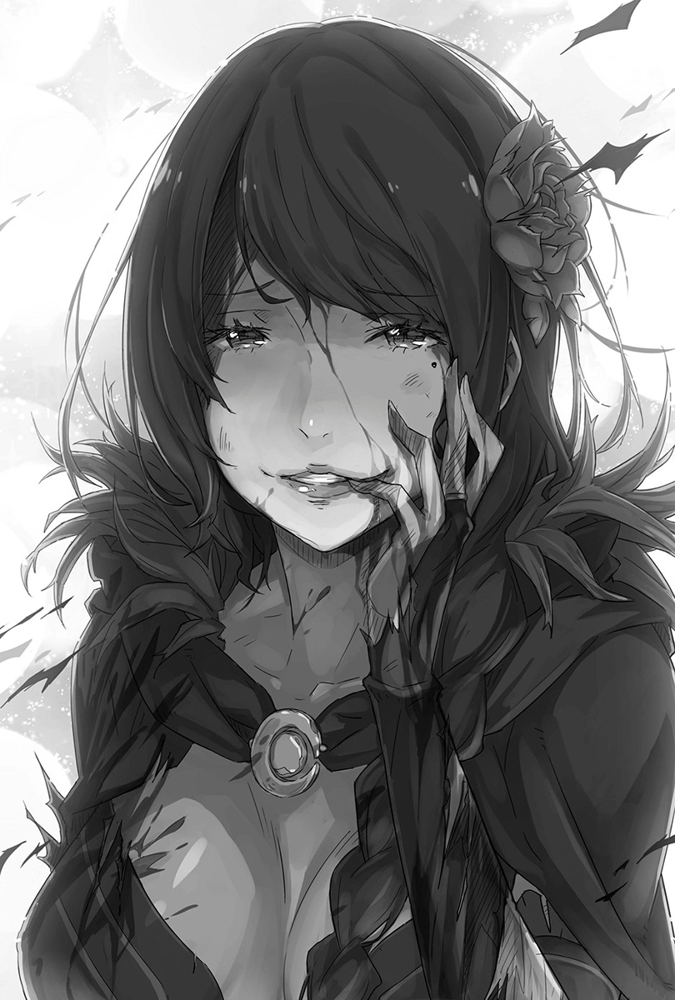
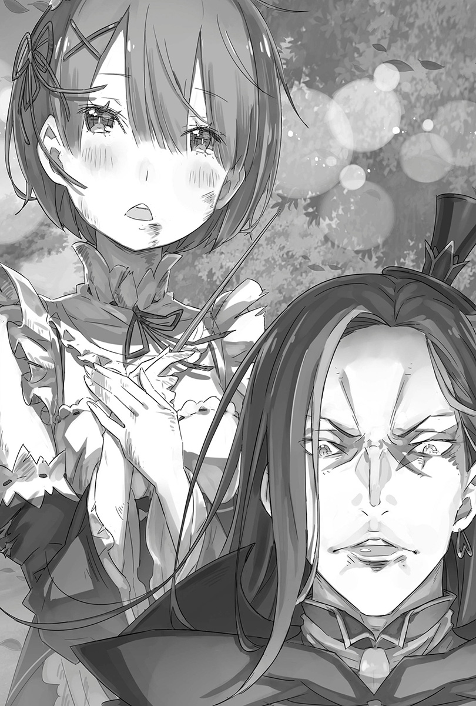
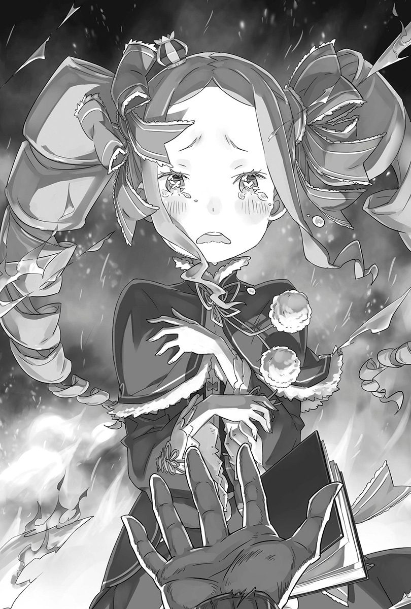
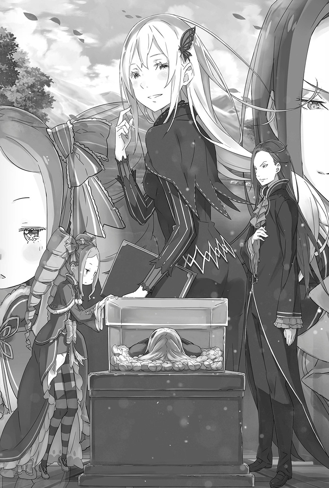
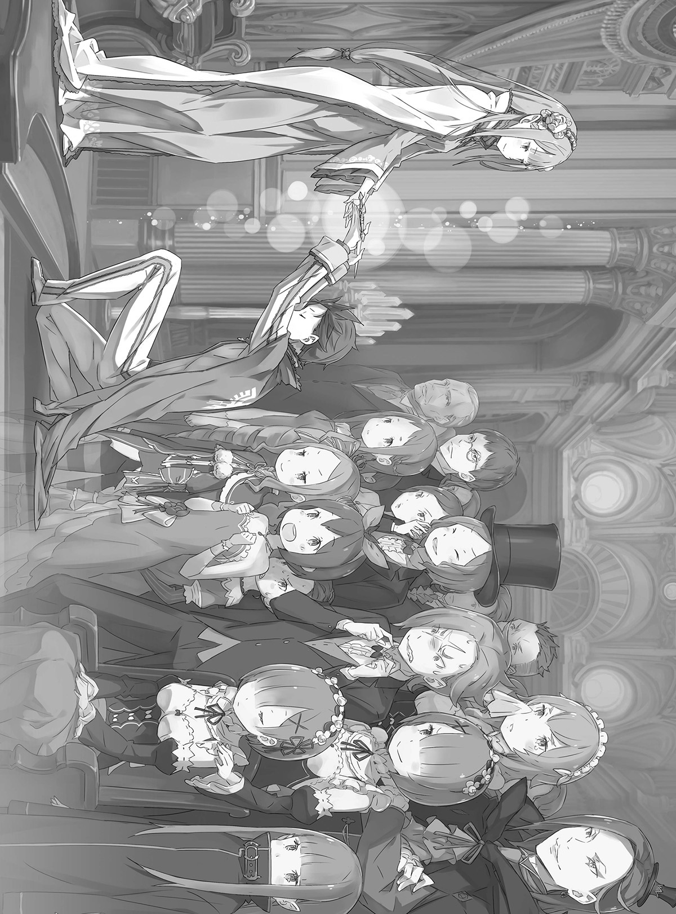

第一章 『在罗兹瓦尔宅邸的最后一天』
1
——即使到现在，只要回想起那一刻，后悔就会笼罩心头。
伸出去的手被松开，名字被怜爱地呼唤。
道别的话语中有着亲昵，微笑的眼角挂着泪珠和决心，让自己开不了口。
现在已经想不起来当时自己在想什么了。
即使是现在，还是不知道那时要说什么才对。
就连到了现在，都还不知道自己当时该怎么做。
——所以现在才会像这样，一个人孤零零地窝在禁书库里足不出户。
「……琉兹。」
嘴唇吐出的，是越来越久远的古老回忆断片。
空白与停滞就跟自己度过的年岁一样长久，是一直撇过脸不去看的苦恼过去。
为什么都这么久了，还会想起那件事、那股后悔、那段记忆和她的名字呢？
一定是因为有股预感的关系。
就像过去自己被拒绝那样——
「我来带你走了，碧翠丝。——这次，我一定要亲手把你拉到阳光下，让你玩到裙子都被泥巴弄得黑漆漆为止。」
——这次，轮到自己松开伸过来的手了。
2
——战况越演越烈，优雅庄严的宅邸被毫不留情地破坏蹂躏。
「——哦哦哦哦哦！」
咆哮声轰然作响。钢铁激烈撞击下所发出的火花和舞出的轻快声响，妆点了这场战斗。
现在，以月光下的罗兹瓦尔宅邸为舞台，圆舞曲正迈向最高潮。
「——好棒。太棒了。你真了不起。」
冲击震碎玻璃，踩踏粉碎地板，战斗的余波破坏壁画。各种材质的碎片纷飞，打从心底享受「互取性命」这个行为的女子所发出的娇媚声钻进金色猛兽的耳里。
对此，猛兽——嘉飞尔龇牙咧嘴，挥动刚腕回答。
「被拉姆以外的人这样讲，根本高兴不起来啦！」
愤怒声盖过娇媚声，嘉飞尔的刚拳揍向女子，击穿她头上的墙壁。女子趁隙躲到死角，嘉飞尔豪迈地施展出恐怖追击。
——把手连同击穿的墙壁一起扯下，然后使出充满巨大质量的一击。
「啊啊……！」
将拳头面积扩增百倍后使出的拳击，让女子——艾尔莎兴奋吐气，热情又欢喜。
接下来的攻防，甚至连眨眼的瞬间都会要人命。
如字面意思，嘉飞尔使出宛如铜墙铁壁、毫无空隙的一击，但艾尔莎并非后退，反而前进。以超越人类的身手将被害压制在最小程度，同时让黑刃跃向嘉飞尔的颈项。
嘉飞尔掀起一阵强风，拳头的威力大到把艾尔莎吹向后方。但是，她的刀刃确实碰到了嘉飞尔——
「——太棒了。」
「——就换配称赞，也高哼不起来！」
艾尔莎手撑地面，陶醉嫣然地说。她眼前的嘉飞尔用牙齿咬住库克力弯刀，接着咬碎，吐出碎片。
——只是过个招，就清楚认知到她是不能轻忽大意的女人。
面对不能用普通方法应战的强者，嘉飞尔瞥了身后一眼。后面有个呆立不动看着两人激战、拥有翠绿双眸的女性——法兰黛莉卡。
「哟～大姊。你怎么还杵在那边看呀——」
「咦？啊，呃，那个，我没那个意思的……」
「抱歉啦，虽然很想让你看到俺帅气的样子，但大姊有被首领托付什么吧。——拜托了。」
嘉飞尔敲响牙齿，朝着犹豫的姊姊这么说。可是法兰黛莉卡的反应迟钝到连脚步都没迈出。——这也难怪。
嘉飞尔和艾尔莎的攻防战，不是她能介入的次元。别说助阵了，连要移动都需要勇气。既然如此，现在就该——
「——由本大爷来孝顺大姊吧！」
「嘉飞！？」
弟弟代替不能动的姊姊先做出决定。
他猛然扑向敌人。察觉到他的意图的艾尔莎嫣然一笑。
「为姊姊着想，真温柔呢。」
说完，用刀子承受住兽爪的杀手朝后方大幅飞跃。嘉飞尔也追过去，将战场移至宅邸更深处。于是通往「睡美人」——雷姆的寝室的路就通了。
之后只要姊姊趁机把雷姆带出去，自己就无后顾之忧。
「嘉飞！」
使出拳击风暴的同时后方传来呼唤，声音已经没有先前的犹豫。自己没空回头。但是，姊姊只对弟弟长大的背影扔出一句话——
「——我相信你！」
分离十年的姊弟才重逢几分钟，可是那样就十分足够了。
要让姊姊相信弟弟的强大，让弟弟全力响应姊姊的期待，这样的时间就够了。
「那——是——当——然——啦——！！」
——斗志高涨，力量上涌。
艾尔莎扭转身躯避开抓过来的兽爪。但是黑色的长辫子来不及闪开而被抓到，嘉飞尔将她整个人甩向墙壁，然后就这么按着她奔过走廊。
「唔哦哦哦哦——！！」
抓着艾尔莎往墙壁上磨的嘉飞尔猛然咆哮，在屋子内全速奔驰。墙壁碎裂喷出粉尘，无从抵抗的艾尔莎就这样被冲击蹂躏。只要用墙壁让她脖子骨折、脑袋开花，化为肉片就行了。这样自己就能跟同伴会合——
「——在跳舞的期间看着别处，很不应该喔。」
能够在思考前就先收起下颚，完全是本能制造出的奇迹。
先是慢一点闪过的左耳耳壳破掉，接着嘉飞尔盛大地踩空了地板——不对，不是踩空。而是地板消失了。走廊地面被斩劈开来后消失，往楼下坠落。
被地心引力吞噬的期间，斩击又攻过来。嘉飞尔用双手的盾牌靠着直觉弹开攻击，拼命防御，但是没法全部防住，全身喷出血花。
身体的一部份碰到楼下地面的瞬间，就立刻以滚动逃离杀戮范围，四肢撑在地毯上瞪着前方。在月光舞台下，女子剖开白烟现身。
杀戮的美女双手握着库克力弯刀，半个身子染血，却还是微笑。
「……大姊好像走掉了。再来就是首领。那边有在顺利进行吧。」
肌肤感受得到楼上的人逐渐远去，嘉飞尔为完成第一目标松了一口气。
按照昴的作战计划，剩下的目标是——是什么咧？
「啊～可恶。想不起来……算了，随便啦。」
应该是嘉飞尔赢不了的时候要使用的策略吧。那是想办法活下去，全员都回到「圣域」的撤退方案。但是，这个方案忘记了也无所谓。
只要赢就行了，只要想着这个就对了。——思考完，嘉飞尔举盾在胸前一敲。
看着他用钢铁的摩擦声响激励自己，艾尔莎舔唇。
「——『掏肠者』艾尔莎·葛兰希尔特。」
「『圣域』的超最强之盾，嘉飞尔·霆杰尔。」
杀手的血色微笑融入黑暗，在屋内的四面八方跳来蹬去。嘉飞尔等着她杀过来。
即将激烈冲突前，他皱起鼻子，龇牙咧嘴地吼叫。
「这是本大爷的超华丽初战，首领。——所以说，你那边也要好好干啊！」
3
——为了见她而像这样子来到这个房间，是第几次了呢？
初相遇是在昴被扛进罗兹瓦尔宅邸的晚上。自己一下子就破除了精灵施加在宅邸走廊上的幻术，直接进到这座禁书库里。
而第一次见面，双方对彼此的印象毫无疑问都非常恶劣。
大病初愈的昴，体内残存的玛那被抢走后连一秒都撑不住就倒了。之后为了向她报仇，昴只要有机会就会去调侃她，妨碍她独处。
在罗兹瓦尔宅邸度过的时间仅仅两个月。这段期间，昴跟她——碧翠丝口沫横飞大吵大闹好多次，互动也都很幼稚。
只要看到脸就是先吵再说，可是神奇的是双方却很合得来。
不知道为什么，只要让她一个人就会觉得内疚。
——现在想想，那些日子和时光，都是无可取代的羁绊。
这次绝对不会放手。自己是为了接碧翠丝才回来这里的。
「带贝蒂离开这里……？」
看昴一进来就这样宣告的碧翠丝困惑地说。
她依然坐在老位置梯凳上，胸口紧抱着黑色书本。
——只有白纸铺陈自己的未来、被母亲托付的「睿智之书」。
「多管闲事。谁拜托你这么做了。」
「你的回答我早料想到了，不过这没有讨价还价的余地。我一定会把你带离这里。」
「自作主张……马上滚回去。回去趴在那个姑娘的大腿上痛哭流涕吧。」
「你这家伙，这么想开战啊……！讲出那件事就是开战信号喔……！」
之前曾闹得沸沸扬扬的丑态被拿出来说嘴，害得昴羞耻得声音发抖。其实睡爱蜜莉雅的大腿可获得超强加持，但现在不能仰赖她。
因为她现在正在「圣域」苦撑。所以在宅邸苦撑就成了昴的任务。
「总而言之，连一问一答都是在浪费时间。你知道外头发生什么事吗？」
「……宅邸有人入侵，这点贝蒂当然知道。可是贝蒂不打算扯上这场纠纷。要打架就让想打的人去打就行了。」
「非常遗憾，现在的状况才不是打架这么可爱。目前最棘手的强敌交给了众所期待的新面孔去处理……但那家伙人太好了。」
摇头回应碧翠丝的话，昴在脑内描绘宅邸内的战力分布。
最强战力嘉飞尔，应该已经在迎战最棘手的敌人艾尔莎了。两人都是超乎常人的高手，战斗力在伯仲之间——虽然想这么说，却无法如此断言。
——嘉飞尔人太好了。这里就不用「天真」，刻意以「人太好」来形容吧。
在作战方面，昴一行人能在「圣域」里打败嘉飞尔，靠的就是他的好人性格。而他情深意重的个性会让宅邸的战况如何倾斜，还是个未知数。
不担心他会同情敌人，但是担忧同伴有可能让他的尖牙利爪犹豫，进而衍生出乱象。
在宅邸的所有人都要平安无事逃脱。为达这个目的，嘉飞尔就必须在万全状态下应战，好牵制强敌。
「所以说，为了让我们队里的致命武器能发挥全力，就要去除所有会妨碍他的要素。佩特拉交给奥托，法兰黛莉卡负责保护雷姆……」
「剩下的就是你跟贝蒂两人。……你想这么说吧？」
「我就是想这么说。」
只要没有后顾之忧，嘉飞尔就能全心全意战斗。为此，就要优先让佩特拉他们离开宅邸。法兰黛莉卡在保住雷姆后应该也会跟他们会合。
「然后，你由我带出去。假如你讨厌手牵手，那我也可以背你或抱你，任君挑选。先声明，我是绝对不会退让的。」
「你到底要让贝蒂讲几遍。贝蒂根本不需要你的帮助。」
碧翠丝低声拒绝一步一步靠近的昴。
她转动脖子示意整个禁书库，对昴说：
「这里是由贝蒂所支配、与现世隔绝的大精灵禁书库。不管外头有怎样的威胁都跟这里无关。你的担忧只是杞人忧天。」
「不，可没那么简单。你的禁书库确实很厉害，可是却有致命的缺陷。而且对手还相当清楚这点。」
自信的根源「机遇门」被否定，惹得碧翠丝不开心地挑眉。
禁书库在隐身躲藏方面，确实是有着无与伦比的优势。但是那并非万能的，这从之前的轮回就能证明。
「你的『机遇门』只能对关上的门产生效果。所以说，只要把宅邸的门全部打开……」
最后就一定可以抵达禁书库。在之前的轮回，艾尔莎就是用这个方法侵入禁书库，袭向碧翠丝，夺取她的性命。
所以说，禁书库绝对不是安全地带。昴正要这么说服的时候——
「——为什么敌人会知道这个缺陷？」
碧翠丝问，昴屏息。
「罗兹瓦尔教的。……是这样子吧。」
碧翠丝一下子就做出结论，让昴根本没有解释的余地。
而昴瞠目结舌的样子，让她更加确信：宅邸遇袭是罗兹瓦尔的指示，为了这个目标就必须破除自己的「机遇门」。
而能让罗兹瓦尔这么做的理由和必要性，就是——
「罗兹瓦尔的『睿智之书』里，记载了贝蒂的死亡对吧。」
说出结论后，碧翠丝轻吐一口气。
那自然又安心的叹气——刺激了昴。
「你……！叹气的时候为什么……为什么露出一脸能接受的样子！」
「……既然都到这地步了，你应该也知道了吧。罗兹瓦尔只是遵照『睿智之书』的内容。既然结果这么写，那贝蒂的命运就已经决定了。」
「讲那什么鬼……罗兹瓦尔的书是他自己的，你的书是你自己的吧？难道你现在抱着的书上，有写说你会被那家伙干掉吗！？」
为了粉碎碧翠丝的心死，昴指向她抱着的「睿智之书」。
他早就知道事实：碧翠丝的魔书是整本空白，四百年来从未显示过未来。
在昴的叫喊下，碧翠丝垂下眼帘慢慢翻开怀中的书本，然后转动书本朝向昴——果然就只有白纸页面。
「上头什么也没写。就跟之前一样，贝蒂的命运是一片白纸。」
「既然如此！既然如此，你有什么理由按照罗兹瓦尔的希望去做！你就像之前那样，自己决定要做的事就好啦！」
「……像之前那样，由自己决定要做的事？」
碧翠丝愣住，瞪大双眼低语。
那句话里头没有感情，让昴说不出话来。
她引人注意的蓝色瞳孔里，逐渐充满虚无的哀戚。
「之前的日子里，有哪件事是贝蒂自己决定的？」
呢喃完，碧翠丝用细指生硬地翻动魔书的页面，仿佛翻动的不是白纸，而是自己的空白时光。
「在这间宅邸里，遵守母亲的嘱咐，一直一个人……这样的时光，哪里是贝蒂选择的？碧翠丝这个生命，到底是做过什么事的哪个人？」
「碧、翠丝……」
「贝蒂的人生就跟这本书一样是雪白一片。没错，是空白。根本没有自己选择过的东西，也没有成就过或是可以肯定自己的功绩……」
用力合上「睿智之书」，慢慢地抚摸没有书名的魔书封面，温柔得像是在渴望。接着碧翠丝平静地说：
「假如，贝蒂真的是……只是一本书的话，该有多好。」
连要把心灵交给虚幻渴望都办不到的碧翠丝，沉痛地揭露心愿。
要是碧翠丝就只是一本书，那就可以在不改变的情况下继续等待「那个人」了。
若是没有心灵的人偶，如果是不会因为时间流逝就动摇心灵的一本故事书，就不会怨叹了。
可是，碧翠丝没法那样。所以她怨叹这样的自己。
「因为，贝蒂有心灵。随着时间过去，就会想东想西，害得自己原本相信的事都没法去相信了。会烦恼。开始想不起来母亲长什么样子，想不起来怎么笑，好多个晚上都在拼命去回忆，想紧抓不放。」
指甲刮过胸前的书本书皮，碧翠丝咬唇瞪昴。
「孤独很可怕，怕到贝蒂也曾想过跟别人在一起。可是外头的时间一直流逝，大家都会扔下贝蒂走掉。嘴巴说是『为了比自己还重要的东西』这种不明所以的话……不只是母亲还有罗兹瓦尔！连琉兹都这样！」
五官皱在一起，泫然欲泣的碧翠丝大喊。
喊出的名字，让昴想起在「圣域」中知道的过去。
为了守护「圣域」而自愿牺牲的少女琉兹·梅耶尔，和碧翠丝认识虽短，但两人确实有羁绊。——也知道碧翠丝的心头上仍旧留着伤疤。
「贝蒂……精灵碧翠丝的命运就是要一直孤零零的，被大家置之不理……可是，现在终于稍微松了一口气。」
「……为什么？明明可能会被认识的人杀死，安心个屁啊。」
「那还用说。」
听着昴压抑的声音，碧翠丝点头。
接着，嘴角浮现虚幻但却爱惜过去的笑容。
「既然罗兹瓦尔的『睿智之书』上有写到贝蒂的事……就代表母亲没有忘记贝蒂。」
像被救赎，像得到回报，碧翠丝笑着这么说。
被母亲留下的魔书宣告死亡，被过去曾像家人的男子后代下手，却只觉得挥向自己的杀意是个救赎。
持续相信四百年，即便最后母亲的意思是要自己死，少女也开心得笑了。
正因为盲目地听从母亲的话，遵守她的吩咐，因此碧翠丝只能得到盲从的答案。宛如为了信仰而殉教的信徒，她就是这么相信魔女艾姬多娜。
这点，从她那微笑中所充满的纯洁无垢的解放感就表露无遗——
「开什么玩笑。」
——那抹扭曲的微笑让昴难以忍受，激情在胸口炽燃。
碧翠丝的悲伤喜悦来自于确认到母亲对自己有爱。这什么狗屁扭曲亲情！
这种事叫人无法忍受。预告女儿的死讯，哪能称得上是母亲的爱！
「……你要干什么？」
由于太过生气，昴无意识地往前走。他那不寻常的样貌让碧翠丝警戒地绷紧脸颊。
「贝蒂在问你要干什么！先声明，假如你要乱来，贝蒂是不会原谅你的。贝蒂已经接受命运了。」
「接受什么狗屁命运啊。你跟罗兹瓦尔没什么不同。不，那个家伙好歹有自觉，你比他更严重。固执钻牛角尖到无可救药的地步。」
愤怒无止尽地涌出。回想起来，自从和「圣域」扯上关系，昴就一直在和这股感情搏斗。
气挑战「试炼」的自己，气那些玩弄自己的魔女们，气带着孩子气顽固地看扁自己的嘉飞尔，气想靠遵守书中记述来肯定心情有多脆弱的罗兹瓦尔，气不相信自己和昴之间有情愫的爱蜜莉雅——
——现在气碧翠丝，还有把她逼到这种地步的命运。
「碧翠丝，你真笨。没错，有够笨！笨到让人心痛得看不下去！」
「什、么……！」
昴突然骂出声，碧翠丝惊愕得瞠目结舌。
愤怒和混乱让她一时说不出话来，昴趁此机会说个不停。
「活了四百年之久，为什么只能做出这么极端的答案呢……！为什么死咬着一个答案！不是还有其他可能性吗！」
「贝、贝蒂当然想过啦！贝蒂不知道试过几遍想让白纸出现文字……可是，不管做什么都没有用！所以啦！」
「你白痴啊！什么努力要让白纸出现文字，用火烤吗！现在已经没有人会写贺年卡了啦！不会去怀疑其他可能性喔！」
魔书的内容一直都是一片空白，让碧翠丝以为自己的命运就是个死胡同。
但才不是那样。其实有其他可能性——
「——例如，你母亲不小心给错书了！」
「啊……」
本来被「其他可能性」的说法给牵动心灵，却没想到得到如此粗制滥造的替代案。碧翠丝不禁愣住，接着立刻被愤怒取代，而且越想越气。
「你竟敢侮辱母亲！？母亲怎么可能犯下那么愚蠢的错误……」
「你敢说绝对不会吗？你真的从来不曾怀疑过吗？那你的言下之意就是相信你母亲真的给自己女儿一本纯白的书啰？」
坚持歪理、巩固诡辩的昴，试图用假话摆布碧翠丝。
其实直到现在，艾姬多娜给碧翠丝「睿智之书」的真正用意依旧是个谜。既然是那个性格恶劣的魔女，那就算她是故意要讨人厌才给这种书也没什么好奇怪的。
但是，琉兹所说的「圣域」的过去——当时的艾姬多娜，实在不像是个恶劣的人。所以，不知道真相为何，反正重要的也不是真相。
现在需要的，是松开碧翠丝顽固的心防，把她拉拢过来的魔法语言。
「什么嘛……那种讲法……」
被昴的气势压过去的碧翠丝，语气逐渐转弱，目光泅游。
尽管知道内心的这股确信会贬低敬爱的母亲，可是碧翠丝还是厌恶摇头。把盲信和敬爱放上天平后，她选择了盲信。
这四百年来，自己从没怀疑过母亲说的话。所以她只能紧抓着这点不放。
「母、母亲不可能会搞错的。这、这是当然啦。她可是贝蒂的母亲耶！你有办法去怀疑自己母亲说的话吗！？」
「当然可以啊，相信的情况反而比较少吧！从我妈把卫星坠落到『大气层』听错成『爱知县』那时候开始，我就放弃相信从我妈口中说出的新闻报导了！一开始相信而跟别人说的我后来都颜面扫地啦！」
难以忘记幼时的自己真的相信而到处宣扬，后来被学校的人和街坊邻居当成笑柄。再加上起头的人完全忘记自己曾这么说过，还反问儿子：「你干嘛散播谣言？」
那是小学三年级的事，从那之后昴就放弃相信双亲的话了。顺带一提，爸爸说的话在更早之前就失去了可信度。
所以说，昴对于把母亲视为神圣不会犯错的碧翠丝感到烦躁不爽。
「我跟我老爸一言不合就互殴的次数多到双手手指用来数两遍都不够。我还没二十岁就这样。你的岁数还是二十岁的二十倍，敢说一次都不曾想过吗？」
「不懂……你、你到底要贝蒂说什么！？贝蒂搞不懂啦！你的期望和目的，贝蒂都不懂！不知道啦！」
「那我就打开天窗说亮话了。说给蠢到家的你和你那个白痴母亲听！」
昴走近想要抱头的碧翠丝，抓住她的双手。
脸凑近抬起来的脸庞，在感受得到呼吸的距离下，清晰地说给泪眼婆娑的少女听。
「不要永远被空白书本和四百年前的口头约定给摆布。——你想做的事，由你自己决定，碧翠丝。」
「——」
「都四百年了。就算来个一次叛逆期也不为过吧。」
因为深爱亲人，所以碧翠丝一直被孤独和空虚的时间给束缚。
说不定艾姬多娜觉得女儿的苦恼很甜美。但是，忘记想哭的心情，甚至忘记怎么哭的人，还算是有感情的人吗。她让人打心底想吐。
梯凳上的碧翠丝任双手被抓，撇过脸不看昴。
坐在矮梯凳最上面的她，视线高度几乎和昴一样。不久，碧翠丝垂下头，凝视腿上的书，然后颤抖嘴唇说：
「不管、被说什么……都要、遵守契约。契约是神圣不可侵犯的……所以说，贝蒂……」
「明明找到契约的漏洞，却想着不要破坏契约乖乖被杀的人才会讲这种话啦。」
想要逃离视线的碧翠丝愕然瞪大双眼，一脸被说中心事的样子。
湿润的双眼畏惧这番指责，浑身战栗不已。
这是当然的。因为昴早就已经听过碧翠丝发自内心的悲泣。
——那一瞬间的无力感，没能传达出去的心情，在超越了时空的现在产生了报应。
「你说的话乱七八糟的，碧翠丝。你没发现自己讲话不连贯吗？不可能吧？毕竟你很聪明。」
「闭嘴……」
「不，我要说。订下契约又反悔？很好啊。就我说的，既然死守约定到很想死的地步，那就不要遵守就好啦。又没人会责备你。」
「贝蒂会责备！为什么你就是不懂！？」
「你才是为什么不懂咧。既然遵守约定就会死，那当然是破坏约定活下去比较好啊。我说的这个选择有那么不可理喻吗？」
死抓着契约不放的碧翠丝，用有如看怪物的眼神瞪着她不了解的昴。
被她这样想，昴才觉得不可理喻。
遵守约定当然是很重要的事。
自己因为毁约而被爱蜜莉雅责备很多次，也曾因此有过许多痛心疾首的回忆。所以昴可以说是切身感受过遵守约定有多重要。
即便如此，昴却毫不犹豫地要碧翠丝毁约。
理由他在刚刚告诉了碧翠丝。这方面根本不值得去烦恼。
「你、你言行不一，多么过份恶劣的行径……」
「我知道自己言行不一，也有在反省。可是重要的事我绝对不让步。」
昴的答案没有动摇。因为从一开始，问题就寄托给碧翠丝的心了。
他蔑视契约的态度让碧翠丝难掩混乱与困惑。这是当然。在这个世界里，契约对精灵这种生命体就是有这么深沉的意义。
爱上精灵术师的昴，也非常清楚这点。
明明知道，昴还是要这样说。——比起约定，我选择你。
「假、假如……你是『那个人』的话……」
凝视近在眼前的昴，碧翠丝慢慢摇头。
盘据着她的内心并束缚四百年的唯一使命——心灵因白纸页面而逐渐耗损，却还是死抓着契约不放的最大原因。
只要决定了最大又是最后的依靠后，碧翠丝就能放过自己。
因此，她抓紧这根稻草，交出内心，盯着昴的黑色眼睛看。
「你……」
呼吸沉重到像在喘气，仿佛将原谅自己的她，慢慢开口——
「愿意成为贝蒂的『那个人』吗？」
那是能够为碧翠丝的四百年空白画下休止符的问题。
想起艾姬多娜的话，这正是「强欲魔女」想知道的答案。
——不给正确答案，而是让碧翠丝凭自己的意志选出「那个人」。
魔女让女儿成为满足自己好奇心的工具，强逼她度过四百年的孤寂。
那些日子如今开花结果，成了现在的问话。空白的时间即将获得报偿。
「——」
碧翠丝吞口口水，等待问话的答案。
昴笔直回视少女，口齿清晰地说。
「白痴啊你。——我哪有可能是你那个莫名其妙的『那个人』咧『那个人』咧。」
4
被冲击波击飞的昴用力撞上墙壁，痛到快昏死过去。
侧腹直接撞上墙壁的柱状区，痛到叫不出声的他在地板上打滚。
「嘎、呜哦咳……搞、搞什么鬼……！话、话才讲到一半，你这个混账……」
眼前的门被用力关上，昴连忙跳起来开门。但是敞开的门后方只是间普通客房——「机遇门」发动，禁书库已经移动了。
两人互相袒露真心对答，昴却在最后被扔出禁书库。
「我才刚开口耶……可恶，那个急性子的萝莉……！」
选错了用字遣词。最后看到的悲痛愤怒表情，贯穿昴的胸膛。
想要传达给她的话还没讲完。现在不赶快回去禁书库的话——
「——菜月先生！？」
这声音害得准备跑起来的昴差点跌倒。回头望向声音出处，和从隔壁房看过来的人影对上视线。
那是跟自己一起到宅邸，目前在个别行动的奥托。他底下是姿势跟他一样的佩特拉。发现是他们两人后，昴讶异得瞪大眼珠。
「你们……为什么还在屋子里！？我们的战术不是说你们只要负责开一楼的门就好，做完就赶快逃走吗？」
「本来应该是这样的，但很遗憾，屋子里头现在出现其他问题……」
奥托铁青着脸，向因为意想不到的再会而惊讶的昴报告问题。
——确保宅邸的避难路线，这是要突破暗杀的最重要关键。
因此，昴将这个任务交给奥托。若他做不来，那就没有人可以办到。而既然奥托判断有困难，那就绝对是麻烦大了。
「发生什么事？麻烦讲得简短些。」
「就是你说的『魔兽使者』啦。现在整间屋子里都是魔兽。」
「魔兽啊，那就是梅莉……不过不是早就讨论好对策了吗？」
奥托压低声音报告，昴听了眉心深锁。
暗杀者有两人——「掏肠者」艾尔莎和「魔兽使者」梅莉这对杀手姊妹。
艾尔莎的危险性事到如今已用不着提，不过能够让魔兽乖乖听话的梅莉威胁也是不容小觑。所以应付她也成了重点。因此想当然耳，早就已经备好对策——
「——可是却有魔兽根本就不怕『除魔兽』结晶石！」
佩特拉的脸胀红到即使在昏暗中也看得出来，还接着昴的疑问叫道。少女手拿发着蓝光的结晶石——「除魔兽」辉石。这个结晶石正是昴他们所准备的对抗「魔兽使者」的方法。
「咦？真的假的！？怎么没跟沃尔加姆那时候一样？只要有这个『除魔兽』石头，应该就能让魔兽躲得远远的呀……原因出在哪！？」
「不知道！我们碰到的魔兽就是不怕，好不容易才甩掉它。可是要是还有其他这种魔兽，就很难抵达边境伯的……」
办公室。奥托还没说完，下一秒事情就发生了。
「——啊！？」
被拉扯的冲击是从脚底传来的，昴立刻往下看。铺着红色地毯的走廊莫名歪斜扭动。地毯像波浪一样起伏，然后——掀起。
冲击和走廊的扭曲其实是破坏的前兆。制造破坏的本体以楼下为起点，豪迈地让走廊连同宅邸西栋崩塌。窗户破裂，木材飞散，屋子发出哀嚎。
立足点消失，身体飘在空中。昴反射性地伸出手，抱住年幼的身躯，朝坍塌的中心点坠落。在摔到地面之前，至少要保护住胸前的人。
「——请就这样不要放手！！」
在建筑物被破坏的期间听见一道声音，于是全神贯注听从。接着感觉到后衣领被抓住，整个人被扔到柔软的地面上。
脸颊碰到草皮。仔细一看，自己被扔在屋子外的庭院草地上。
「刚、刚刚那是……」
「法兰黛莉卡姊姊！」
昴甩甩头抬起脸，怀中的佩特拉跳了起来。她双眼闪闪发亮，视线尽头是满头金发随风飘逸的法兰黛莉卡。
她姿态优雅地拨拨头发，手指轻轻拭去佩特拉脸上的脏污。
「虽说事态紧急，但还请原谅我所做的无礼之举。法兰黛莉卡·鲍曼于现在和诸位会合了。」
「姊姊！」
佩特拉感动不已，扑进微笑的法兰黛莉卡怀中。她温柔地用胸膛迎接可爱的后辈。——结果被夹在左腋下的奥托掉到草地上。
「好痛！这样不对吧！虽然很感谢你救了我，可是这是差别待遇！」
「万、万分抱歉，奥托大人。忍不住就按照心中的优先级……」
「女人、小孩、老人、男人，然后才轮到奥托吧。」
「为什么我不在男人的项目里面！？」
奥托的怨叹姑且不论，一行人和法兰黛莉卡确认彼此的状况。多亏了她，全员平安无事。而且不只昴、奥托和佩特拉。
「昴大人。——我有好好地把人带过来。」
抱着佩特拉的法兰黛莉卡背向昴。她身后是身穿睡衣，被床单固定在背上的少女——雷姆。一瞬间，昴倒抽一口气。
但是，僵硬立刻就被安心给化解。
「这样啊。谢谢你把她平安地带出来。——真的很感谢。」
「这是当然的。不说这了，现下的问题是……」
轻触沉眠不醒的雷姆的脸，昴表达感谢。法兰黛莉卡则是抬起头望向他处，昴也跟着看过去——那是被挖出一个大洞，整个崩塌的宅邸西栋。
简直就像被巨大卡车撞过的光景。而且这个举例其实很接近事实，只是撞进屋子的不是卡车——
「——那是什么啊？」
站起来拍膝盖的奥托问道。这个问题，是除了睡着的雷姆外，其余四人都有的疑问。而且，刻意要昴回答的话——
「在我看来，就像只大到夸张的河马。」
那是充满巨大质量的肉块。肌肤有着像是岩石的色泽和质感，还有粗大如石磨的健壮四肢。面貌雄壮又凶恶，红色眼睛因敌意与杀意而显得污浊，鼻头有根被折断的角——还有背上坐着一道娇小身影的魔兽。
「——嘿～真厉害。刚刚那一下竟然都没人死掉，吓我一跳呢。」
坐在巨大魔兽的背上晃动双腿的人朝着他们笑。那天真又残酷的嗓音，不只昴，连佩特拉都有印象。
身穿黑衣，深蓝色的头发绑成辫子的少女——
「——梅莉！」
「唉呀～？大哥哥都没吓到耶。害得我有点沮丧。」
听了昴的叫喊，梅莉嘟起嘴唇为自己制造的惊喜以失败告终感到不满。但很遗憾的，昴他们没有必要去配合她这份惊喜。
「把别人的屋子撞坏，还要里头的人吃惊！你未免太为所欲为了！」
「因为我一直找不到我的目标女仆小姐啰。所以说就请岩豚酱努力一点啰。多亏了它，一下就找到你们了耶？」
丝毫没有歉疚之意，指头戳着脸颊的梅莉望着底下的猎物。确实，就杀手的目的而言她的进度最快。其实要是没有法兰黛莉卡的话，大家早就全灭了。
「不过，大哥哥你真的吓到我了。本来以为是可以更轻松解决的工作，但一直发生出乎意料的事呢。」
「这样啊。既然跟预定有落差，那就回去报告上司请求他的指示就好啦。要是擅自判断现场的状况，导致发生无可挽回的事情的话可就糟了。」
「唔呵呵，不～行。人家不会被大哥哥你骗到的。」
彼此之间夹着魔兽。在这异常状态下，昴和梅莉的对话听起来却像是日常拌嘴。
跟艾尔莎相比，梅莉在对话中不会一直强调想看肠子，但也对说服没有反应。这段期间，感受得到魔兽的气息逐渐包围庭院。
虽然跑到了建筑物外头，但这种做法很明显地不能作为逃脱手段。被魔兽包围的状况依旧没变。——不，应该说状态变得更加危险。
「虽然对艾尔莎很抱歉，不过女仆小姐们就由我收下了。啊，用不着担心。我会温柔对待佩特拉酱的。毕竟我们是朋友嘛。」
「哇、哇～好高兴喔～。既然是朋友，能不能放我一马呢～？」
「唔呵呵呵呵～因为是朋友，所以让我们友好到最后一刻吧？」
「呜，昴，对不起，完全不管用……」
友情的表现方法天差地远，鼓起勇气的佩特拉提出意见却不被采纳。
梅莉虽然年纪轻，但还是贯彻杀手该有的职业道德。她内心根植着扭曲的伦理价值观，所以不会去区别善恶。——她跟大家是不相容的。
「昴大人……」
「法兰黛莉卡？要干嘛……喂，呜喔！」
在昴思考要怎样突破局面时，女仆的背影突然占据面前。背着雷姆的法兰黛莉卡没有响应呼唤，直接把床单的结解开，放掉雷姆。
昴连忙接住倒向自己的雷姆。然后——
「——那名少女，不，杀手由我来招待。各位请趁这段期间离开。」
「不、不行！法兰黛莉卡姊姊！」
法兰黛莉卡气派堂堂地担下断后的职责，昴沉默，佩特拉则是紧抓着她不放。面对搂住自己腰杆的后辈，法兰黛莉卡温柔地望着她。

「姊姊，不行！刚刚也一样……现在是见到面了，可是下次……」
「不，这次不一样喔。……毕竟，我刚刚是抱着必死的决心。」
「——！」
「可是，现在不是了。我和嘉飞……和弟弟睽违十年后重逢，又还有这么可爱的后辈，现在的我幸福到像置身天堂。——所以说，我不会输的。」
轻抚佩特拉的头，法兰黛莉卡向她这么说。近距离凝视翠绿双眸，佩特拉说不出话来。不过她应该也知道这不是安慰话。
一旦相信就不动摇。凭蛮力硬闯过关。——果然是嘉飞尔的姊姊。
「法兰黛莉卡！我们先去罗兹瓦尔的办公室！」
「嗯，请随意。等我处罚完这个女孩后，就会过去的。」
昴背起雷姆，说。法兰黛莉卡优雅地回应，包办现场的战斗。
嘉飞尔对艾尔莎，法兰黛莉卡对梅莉。兽人姊弟各自对上暗中活跃的姊妹，恐怕是最恰当的选择。——若要突破宅邸遇袭事件的话。
「奥托！你负责佩特拉！」
「知道了！」
听到吆喝就立刻掌握现状的奥托牵起佩特拉的手开始跑。背雷姆的昴跑在前面，从庭园直直冲向宅邸的出入口。
「等一下啦！不要擅自做决定！我叫你啊，佩特拉酱！」
「咧——！」
骑在魔兽背上的梅莉朝着一溜烟逃跑的他们大喊，但是只得到泪汪汪的佩特拉不屑吐舌。
他们丢下她，逃进屋子里。正当梅莉想追过去时——
「——这位客人，接下来还请配合梅札斯家流的待客之道！」
「讨厌～！人家绝不原谅你！——干掉她，岩豚酱！」
「吼吼吼——！！」
俯视挡住去路的法兰黛莉卡，梅莉气到鼓起腮帮子。在主人的命令下，宛如巨大岩石的魔兽咆哮，吶喊震动整个庭院。
法兰黛莉卡翻动裙子，双手发出声响，整个人开始兽化。
「好了，请尽管放马过来。今天的我可是很残酷的！——觉悟吧！」
5
和法兰黛莉卡分开后，冲进宅邸本栋的昴一行人一路朝着最顶楼跑。
「奥托！后面呢！？」
「法兰黛莉卡小姐在努力！可是，魔兽对策被破除这点还是没解决！」
奥托边跑过走廊边提起尚未解决的魔兽问题。其实这个问题目前还是无解。「除魔兽」结晶石无法对付的魔兽，到底该怎么应付才好。
「不能用你的『言灵加持』跟魔兽沟通，运用外交手腕让它让路给我们脱身吗？这次轮到你当主角啰！」
「魔兽大多只会『我要，吃掉，你』，根本没办法对话啦……」
「现在不是开玩笑的时候了！快点！不快点的话姊姊会有危险的！」
佩特拉用力倾诉，让昴和奥托停止碎嘴认真思考方案。
依现状而言，大家的目标是罗兹瓦尔的办公室——隐藏在书架后方，可以通往外头的避难小路。只要走那条路，就能脱离魔兽包围网到外头。
可是，在抵达办公室之前，魔兽必定会来碍事——
「菜月先生！前方有黑翼鼠！」
「呜喔！？」
思索之际，月光照耀的走廊上有黑影朝昴直飞而来。
那是身躯圆滚滚、大概只有幼犬大，拍着像蝙蝠的黑色翅膀凌空而来、外型近似老鼠的魔兽。符合黑翼鼠这名字的魔兽共有两只，闪耀着红晃晃的眼睛，以利牙攻向昴。
「走开！」
佩特拉高举「除魔兽」结晶石，凶巴巴地驱赶它们。
辉石绽放出的光芒，吓得黑翼鼠发抖转向，朝走廊里头逃跑。
「得救了，佩特拉！……不过，我还以为这石头完全没效呢。」
「对付普通的魔兽很有效的！目前不怕的魔兽就只有一只，只要没有它的话……」
「你们说的那家伙——」
有那么特别吗？还没问完就发生了状况。——撞击声和尖锐的死前哀嚎。
走廊里头月亮照不到的暗处，有兽爪闪耀挥舞，喷血和惨叫同时发生。被打中的黑翼鼠当场翅膀断裂，无法动弹，只能坠落在地毯上。两只魔兽就这样流出黝黑鲜血抽搐，紧接着被巨大下颚吞食咀嚼。
贪食血肉，咬碎骨头，啜饮性命的声响在走廊回响。然后，那玩意展露身形。
有狮子的头，像马的身躯，酷似巨蟒的尾巴，长着弯折之角的凶恶存在——浑身上下都是「威胁」，魔兽中的魔兽。
在以前的轮回中，昴曾在宅邸里碰过这只魔兽。
——过去曾杀死佩特拉的魔兽。而它的名字是——
「忘记了……没想到会再碰面，可恶的魔兽……！」
「吼吼——！！」
像是对昴的愤怒起反应，黑色魔兽发出足以晃动房子的咆哮，带给他们简直像是面对暴风的压迫感。昴重新背好雷姆，咬牙切齿道。
「奥托！拿『除魔兽』石头丢那家伙……」
「不行！没有用的，昴！因为，那只魔兽……」
佩特拉摇头，脸色苍白地说。她的话让昴理解到状况。而奥托则是喊出他想到的答案。
「基尔缇拉乌！『除魔兽』结晶石对它无效！它是我们的天敌！」
顿时，魔兽——基尔缇拉乌压低身体，朝着他们冲过来。
爪子撕裂地毯，咆哮撼动建筑物，凶恶吶喊以蹂躏性命为目的逼近。
——罗兹瓦尔宅邸攻防战，在三处同时开始激战。
第二章 『映照在水面上的幸福』
1
「——好啦，莉雅。头不要晃来晃去。乖乖的不要动。」
睁开眼皮前，最先听到的是柔和甜美的嗓音。
意识仿佛被那声音引导而逐渐清醒。视野朦胧，眨眼几次后，才发现自己坐在椅子上，这里是自己家。
将森林的大树挖开而造成的自家，自己就坐在起居间的椅子上。
「真是的，都几岁的人了还这么爱撒娇。真是让人拿你非～常没辄的孩子呢。」
呼吸近在咫尺，声音温柔得几乎要包容一切，在在都触动心弦。少女——爱蜜莉雅连忙回头。
后方是一头短银发，眼神凶恶，但对她来说却是心目中的理想女性。
「佛尔特娜、妈妈……」
「吓我一跳。怎么突然转过来……睡迷糊了？让妈妈梳头自己却打瞌睡，我家的公主真的是个懒骨头呢。」
见爱蜜莉雅张大眼睛傻住，母亲——佛尔特娜跟着傻眼，然后微笑。锐利目光变柔和的表情，让爱蜜莉雅喜欢得不得了。
每天都看得到的脸庞，为什么现在却觉得很感慨呢？
「妈妈……」
「嗯？怎么啦？不管有什么事，都可以跟妈妈说喔。」
「今天的妈妈有梳妆打扮耶。非～常可爱哟。」
「——！还以为你要讲什么，不可以开大人玩笑啦。」
微微害臊的佛尔特娜用手指轻戳爱蜜莉雅的额头。「嘿嘿嘿。」按着被母亲戳的地方，女儿腼腆一笑。
对爱蜜莉雅来说，佛尔特娜永远都是让自己骄傲的母亲，但今天看起来格外漂亮。
平常的穿著打扮都以方便活动为主，可是今天却穿上了裙子。虽然首饰还是很少，但配色和清凉的服装十分适合佛尔特娜。
「长得那么可爱，表情却比平常还要散漫……你好像真的睡迷糊了。梳头发前不是去饮水区洗过脸了吗，还是说你只喝了水就回来了？」
「哼～妈妈把我当笨蛋。我才不是那种漫不经心的人咧。大家都说我非～常一丝不苟呢。」
「讲话怎么那么文言啊，该不会是被大家恶作剧灌输了什么奇怪的观点吧。这让我非～常担心。待会得好好去质问亚齐他们。」
虽然嘟起嘴唇表达不满，但手贴女儿脸颊的佛尔特娜毫不理睬。她直接让噘嘴的爱蜜莉雅面朝前方，再度开始梳理头发。
跟母亲一样的银色长发，被母亲像施法一样绑出辫子。
「好啦，美女诞生啰。去看看镜子。」
「嗯，谢谢妈妈。镜子在……」
被佛尔特娜拍肩要求，爱蜜莉雅笑着站起来，准备走向穿衣镜时——脚却停了下来。
「爱蜜莉雅？」
佛尔特娜狐疑地问，但是她没法答腔。不知为何双腿就是不肯走过去，连自己都不知道原因。
脚畏惧向前。正当爱蜜莉雅为此所苦时，有人从其他地方伸出了救援之手。
听到有人正在敲入口大门。「有客人！」爱蜜莉雅抬起头，转头说完就快步走向门口。然后——
「——爱蜜莉雅大人，早安。让您亲自迎接，我感到万分开心。」
焦急地打开门，门后的高个子男人让爱蜜莉雅屏息。朝着她微笑的是有着绿色头发及柔和外貌的男性。
眼中带着安稳慈祥的人物，让爱蜜莉雅也自然流露微笑。
「裘斯。……啊，早安。」
「早安。好久不见了，爱蜜莉雅大人。今天要请您多多指教了。」
「今天……？」
来访男性——裘斯行礼之后所说的话让爱蜜莉雅歪头思索。这反应让裘斯也跟着皱眉。
「唉呀，您不知道吗？事前我们应该有联络过……」
「裘斯，用不着放在心上。莉雅到现在都还没睡醒，还在梦游呢。」
「哼，妈妈你又讲这种话……」
佛尔特娜说，回头抗议的爱蜜莉雅语塞。因为穿着打扮异于平常的佛尔特娜手上握着外出用提篮，里头飘出的香气刺激鼻腔。那是妈妈亲手烤的香草面包。也就是说——
「——啊！我们要去湖边野餐？」
「你这孩子，现在才一脸想起来的样子。明明是你想去的耶。」
「是吗？……可能是喔。不过像这样突然想起来，感觉赚到了两倍呢。」
试着回想，好像有这么要求过。不过忘记以后再想起来，喜悦就成了两倍。感觉赚到了。
「……裘斯，你觉得这孩子怎样？」
「我认为很有爱蜜莉雅大人的风格。爱蜜莉雅大人很擅长找到幸福，我们应该也要学习。」
「这么不负责任地宠她我会很伤脑筋的。真是的……根本是大嫂的血统。」
佛尔特娜手贴额头叹气，接着察觉到裘斯盯着自己看，便用锐利目光问：「干嘛？」
「没有，说出来可能会害您不舒服……」
「都老交情了。事到如今被你说什么我都不会怎样啦。」
「那么我就说了。佛尔特娜大人，您今天的仪容和您十分相称。连我都有点看呆了。」
裘斯不带恶意的话，让佛尔特娜浑身僵硬了一阵子。
「——唔。」
接着马上红着脸，出拳用力揍他肩膀。
——不小心弄掉的篮子在落地前，由爱蜜莉雅在千钧一发之际接住。
2
「我果然说了很失礼的话吧……？」
「没有，没那回事喔。因为妈妈非～常容易害羞，所以只是听了你的话后害臊而已啦。呵呵，妈妈真可爱。」
「不要乱讲！裘斯你……性格真的很恶劣耶。」
经过家里的那场风波后，三人——佛尔特娜大步走在前头，爱蜜莉雅和裘斯并肩走向位在森林里的湖泊。
出门时讲的话害佛尔特娜大发雷霆，结果裘斯耿耿于怀。爱蜜莉雅知道妈妈不是在生气，只是害臊而已，但裘斯就是不知道，使得她很焦急。
不过妈妈和裘斯的关系与距离，也是她小小的幸福。
「早安，佛尔特娜大人。」「还有爱蜜莉雅跟裘斯先生。」「你们一家感情真好呢。」
路上住在附近的婆婆妈妈看到三人后这么说。佛尔特娜还来不及反驳，裘斯就已开心地微笑说：「因为爱着彼此。」结果佛尔特娜只好放弃反驳，回答：「……是、是啊。」
可能是心理作用吧，佛尔特娜的步伐开始配合另外两人。当爱蜜莉雅偷偷朝大婶团挥手，对方也一脸窃喜地笑。
就这样走了一阵子，森林突然宽敞起来，眼前可以看到目的地的湖泊了。
「这里的空气还是一样清凉呢。正好可以用来转换心情。」
「因为佛尔特娜大人经常背负重担，所以偶尔该伸展翅膀挥动一下。还请务必放松自己。」
将行李放在湖边后，佛尔特娜微微伸懒腰，裘斯便关心地这么说，并利落地整理出可以坐的地方，做好可以玩乐的准备。对此佛尔特娜眯起眼睛，接着叫唤正在看风景的爱蜜莉雅。
「今天不被当成族长，而是被看做老人家或女孩子，让人静不下心来。欸，爱蜜莉雅你也说点什么吧……」
「——」
「爱蜜莉雅？怎么了？」
爱女专注地望着湖畔风光，一动也不动。母亲朝她伸手。
「你从今天早上就非～常奇怪耶？要是身体不舒服，那我们回家……」
才在担心地这么说的时候。
「——」
爱蜜莉雅的肚子就响起了可爱的咕噜声。顿时，佛尔特娜原本不安的表情瓦解，然后深深叹了一口气。
「妈妈，我饿得肚子非～常扁……」
「用不着用那么沮丧的表情说我也知道啦。真是的，你老是让人家白担心一场。真的是很会惊动人的孩子。」
安心地垂下眼角，佛尔特娜戳了女儿的额头一下，然后把脑袋瓜抱入怀中。爱蜜莉雅没有反抗，身子前倾乖乖顺从。——两人身高差不多。
「两位不论何时感情都很好。看着真的会让人微笑呢。」
「……裘斯也要加入吗？」
「不要讲蠢话了。裘斯，打开篮子吧。虽然有点早，但既然公主希望，就先开饭啰。」
说完，佛尔特娜搂着爱蜜莉雅走向裘斯。将野餐篮的内容物放在被抚平的草地上，这香气四溢的食物可是擅长料理的母亲的拿手餐点。
烤香草面包是爱蜜莉雅最喜欢的食物，同时也是——
「每次都让我同行，真的很不好意思……但是这个味道真的叫人难以把持。」
松软热呼呼的面包，让裘斯幸福地微笑。佛尔特娜的拿手料理对他来说是珍馐美味，每次三人一同出游都必定要享用的美食。
这个一定会出现。——爱蜜莉雅的心头一阵骚动。
「既然那么喜欢妈妈做的料理，那裘斯你也……一起住在森林就好啦。」
压抑那股喧嚣后，爱蜜莉雅望着和睦的两人这么说。顿时，佛尔特娜面红耳赤，着急地开口：
「爱、爱蜜莉雅……！别、别乱说话。裘斯一直都很忙，他可是忙里偷闲来这边露个脸的……」
「真叫人欢喜的建议，爱蜜莉雅大人。可以的话，我由衷希望能那样子。」
焦急的母亲，和沉着的裘斯。两人的态度形成对比。只不过裘斯所说的「可以的话」让爱蜜莉雅感到不满。
「才不是『可以的话』，要说『就那样做』才对啦。既然你们都不讨厌，而且也没人会妨碍呀。……该不会，我妨碍到你们？」
「没有。」「没那回事。」
感情好的他们不能在一起的理由该不会是自己？道出这股不安却被两人同声否定，爱蜜莉雅忍不住笑出来。
「你们两个，感情非～常好不是吗。」
「老是讲这种话……裘斯你也骂骂她。」
「好的。这可不成喔，爱蜜莉雅大人。佛尔特娜大人是身负重责大任之人。像我这样的人久留可是会造成不好的传闻，给她添麻烦的。」
「妈妈跟裘斯闹绯闻……可是我觉得现在担心已经太迟了。」
裘斯的话已经离题，不过顺着说下去的爱蜜莉雅手指轻抵嘴唇反驳。但就算听了，裘斯也一脸不懂状况的样子，爱蜜莉雅只好接着说。
「因为，刚刚谭赛大婶她们不是说了吗。『你们一家感情真好呢。』」
「——！她们说的当然是爱蜜莉雅大人和佛尔特娜大人两位呀。」
「裘斯听起来可能是那样。……不过，妈妈有听出来吧？」
「——」
爱蜜莉雅的问题，令佛尔特娜红着脸别过目光。
母亲的心情，早就被女儿看穿了。裘斯的心情应该也跟母亲一样。
「我觉得非～常好。很棒喔。所以说，你们两个也考虑看看。」
「——」
「森林里的人包括我都不会反对，也没人觉得奇怪。我绝对不会让任何人说三道四谴责这件事的。」
爱蜜莉雅一手拿着咬了一半的烤香草面包，同时感觉到自己浑身热了起来。
即便如此还是想说，非说不可。不希望佛尔特娜和裘斯他们害怕幸福。——自己希望他们幸福。
把剩下的面包放进嘴里，咀嚼吞咽。然后拍拍大腿站起来。
「我想说的已经说完了。剩下的就交给两位年轻人了，请慢慢聊。」
「爱蜜莉雅，你到底是在哪学了这些话的？」
看女儿手插腰这么说，佛尔特娜傻住。可是表情立刻化开来，变成忍俊不住的笑容。
「呵呵，啊哈。爱蜜莉雅你……真的是非～常可爱的孩子。」
「哈哈，爱蜜莉雅大人……原来如此，您健康地成长了。真的让人满心欢喜。」
「这还用说。她可是我自豪的女儿，当然的吧？」
「是的，是我有眼不识泰山。」
望着两人发笑凝视彼此聊着这些，温暖的充实感就盈满爱蜜莉雅的胸口。她打从心底希望可以沉浸在这幅光景中，一直看下去。
——天底下一定没有比这更幸福的事了。
「……爱蜜莉雅？」
突然被佛尔特娜呼唤，爱蜜莉雅连忙用手遮住自己的脸。回过神来，泪水不自觉地溢出。她拼命止住泪水的同时，出声道：
「呃，有灰尘跑进眼睛里了。是非～常大的灰尘。」
「这么严重？没事吧？」
「我、我没事，没什么大不了的。差不多就跟那边的石头一样大。」
「那颗巨大的岩石！？你真的没事吗？」
「我没事啦！」
回应担心的两人后，爱蜜莉雅边揉眼睛边面向湖。
「我去洗一下眼睛。然后绕湖一圈。」
「你可要小心点，别把眼睛都洗掉啰。你的眼睛很漂亮……就像哥哥的蓝紫色眼睛一样。」
「也跟妈妈一样漂亮啦。」
没想到会被这样响应吧，佛尔特娜错愕。裘斯看了忍不住笑出来，爱蜜莉雅见状也跟着笑。
笑着走向湖畔。然后转动脖子，看看佛尔特娜和裘斯。
「你们要好好相处等我喔。要一直好好相处喔。」
「好啦好啦，真爱操心。不过，要是等太久，妈妈也会伤脑筋的。」
「不会，我不急。我们会慢慢地等您的，爱蜜莉雅大人。」
在微笑的两人——双亲的目送下，爱蜜莉雅深吸一口气。
接着还是忍不住转过身，正面看着他们，说：
「——我爱你们。」
3
——站在可以将湖畔一望无际的高台上，爱蜜莉雅迎风而立。
「——」
湖水对面的岸边，可以看见双亲的身影。被母亲称赞的蓝紫色双眸，映照着两人和睦的互动。
裘斯又没自觉地说了什么，佛尔特娜红着脸反驳。这幅光景牵动爱蜜莉雅的嘴角上扬。这时——
「爱蜜莉雅，一个人在这种地方很危险耶。」
后方有人呼唤，是耳熟能详的声音。回头一看，跟自己对峙的人站在能将整个湖尽收眼底的陡峭悬崖上，还是金发绿瞳的美青年——和自己一同生活在艾利欧尔大森林的妖精同伴，对自己来说等同于哥哥的亚齐·艾利欧尔。
「亚齐……」
「——。总觉得那表情和声音不像你耶，爱蜜莉雅。平常鲁莽瞎忙的样子跑哪去了？不要让人担心啦。」
「哼，讲得真难听。亚齐大笨蛋。不理你了。走开啦你。」
「抱歉抱歉。你有什么烦恼，我会认真听你说的。」
见爱蜜莉雅噘嘴，亚齐苦笑举双手投降，然后走了过来，站在崖边的爱蜜莉雅身旁，歪头问：
「怎么了？今天不是司教大人来森林的日子吗？你们没一起……哦，在那边啊。该不会，你是刻意让他们独处？」
「……嗯，对啦。亚齐你看他们觉得怎样？」
「我觉得很相配，森林里的同伴也都这么认为。佛尔特娜大人是个严以律己的人，其实她应该要更为自己的幸福着想……」
阐述感想后，亚齐一脸愕然。因为他看到爱蜜莉雅双眼湿润，泪水快要溃堤。
「啊，不是啦，爱蜜莉雅，那个……没事的！就算佛尔特娜大人和司教大人在一起，也不会轻视你的！」
「……才不是那样咧。」
「不是吗……那不然，哦，对了。马上就要接受确实不容易。不过再过几年就很难说，等时间过去了他们也会——」
「——时间。」
亚齐的慌张安慰让爱蜜莉雅抬头抖颤嘴唇。
只要花时间，佛尔特娜和裘斯之间的距离就会缩短。不否认他们现在的进度慢如牛步，可是有朝一日他们会在一起的吧。
届时，森林里的同伴们都会祝福他们，当然最祝福他们的人会是爱蜜莉雅。可以的话不只森林，还希望森林外头的全世界都能祝福他们。
和平安稳，不管要做什么都很自由，每个人都相视而笑地过日子。这样的世界——
「——可是，这样的世界不存在。」
垂下被长睫毛镶嵌的双眼，爱蜜莉雅触碰发饰——举世只有两个，从母亲那儿收下的遗物，轻声低语。
现在在湖畔等待，梳妆打扮过的母亲的头发上，也别着同样的花饰。
也就是说，这里有别于已经迎向终点的雪之森林，是理应不存在的理想未来——
「……在看过不该存在的当下后，都不会想在这里生活吗？」
「亚齐……」
「在这里的话，不管是佛尔特娜大人、司教大人、我和大家，全都平安无事地一同和乐过生活。这里是不会发生悲剧的幸福世界。爱蜜莉雅，在这里生活的话，你就不用怕受到任何伤害。」
当爱蜜莉雅察觉到这是个虚伪世界后，亚齐表情悲痛地倾诉。这个论调毫无疑问证明了他精通这个世界的欺瞒之术。
面对亚齐的诉说，要说内心没有动摇是骗人的。
「你应该希望他们两人幸福。你应该梦想在这里生活。毕竟，这里是你理想的现今……你本身期望的未来。」
「我所期望的未来……嗯，你说的没错。我也觉得如此。」
希望佛尔特娜幸福。希望裘斯让妈妈幸福。
和森林里的同伴一起笑闹，和亚齐好好相处，要是这个永远幸福的世界真的存在该有多好。
——要是不知道过去，没看见妈妈临终那一刻，没看到裘斯痛哭，就可以装作那些都不存在了。
「佛尔特娜大人已经过世，司教大人还下落不明，森林里的同伴都变成冰雕了。」
「……嗯。」
「故乡变成冻土，你又被外头的人类迫害，相当于家人的精灵也跟你分开。」
「——」
亚齐的话让爱蜜莉雅闭上眼睛承受。
假如他是在谴责自己就轻松多了。
责备自己判断失误，不容分说要自己端正思想，痛骂自己是个不知恩图报的禽兽。要是他肯这样就好了。——但她非常确定，亚齐是不会这么做的。
亚齐的声音里头甚至没有愤怒。
「虽然在这里可以幸福……但期望这样的世界的你，十分可怜……」
——亚齐就只是祈愿而已。希望爱蜜莉雅可以活得安心幸福。
世界是为了祝福爱蜜莉雅才有的。曾经这么说过的他并没有改变。
「……对不起，亚齐。」
「——有那么多人会伤害你，为什么你还期望那样的未来？」
「我并不是期望被伤害。我会去找到不用互相伤害也能和平共处的未来。用不着逃跑、躲藏或远离，可以携手共度的未来。」
「可是你受伤了吧？你的痛苦呢？失去的东西不会回来了，这样也无所谓？」
「——」
不想憎恨别人却还是忍不住去想，爱蜜莉雅有过这样的经验。也曾无数次想抛却辛酸痛苦。
亚齐的话真挚温柔，又深沉地挖开爱蜜莉雅软弱的心灵伤口。
「……我想耍帅。」
「爱蜜莉雅？」
声音带着困惑。爱蜜莉雅的回答让亚齐以为自己听错而反问。
因此爱蜜莉雅抬起头，看着身旁的同伴、等同哥哥的人，告诉他。
「我想象憧憬的佛尔特娜妈妈那样。想变得像温柔又坚强的裘斯那样。想要像不曾对我做出讨厌之举的谭赛大婶那样。想要像直到最后为了不让我害怕还对我笑的亚齐你一样。」
「——」
「想要像不让我一个人，一直保护我的帕克那样。想要像为了重要的人，所以希望能够为他尽心尽力的拉姆一样。想要像为了朋友而努力的奥托一样。想要像绝对不会说泄气话或诉苦的嘉飞尔那样。」
「爱蜜莉雅……」
「想要像浑身是伤受尽折磨，说喜欢我还一直勉强乱来的昴那样。」
在故乡的森林，在故乡之森的外头，在一同度过的世界里，和那些人携手走下去。
为了即便自己软弱丢脸老是失败，却还是想跟自己在一起的那些人。
「为了那些人，我想耍帅。就像许多对我说不会有事的人那样，我也想朝人伸出救援之手。」
一直帮助自己的少女，向自己乞求帮忙。
一直为了自己东奔西跑的少年，将全盘信赖寄予自己。
——所以，爱蜜莉雅会在外头的世界活下去。
「我没事。我不怕外面的世界和未来。」
「——」
「谢谢你担心我。我……没事的，亚齐哥哥。」
被这么叫唤的亚齐瞪大双眼，爱蜜莉雅则是朝着惊讶的他微笑。
虽然一直觉得他无异于是自己的哥哥，但因为对抗心和害臊，使得自己从未这么称呼过他。
如今可以用开朗的心情堂堂正正地说出口，完全不觉得丢脸了。
在故乡的森林里，有妈妈，有爸爸，有哥哥。——有爱蜜莉雅的家人。
「——」
爱蜜莉雅的微笑让亚齐想说些什么，可是在胸口泛滥的感情复杂离奇，没能成为确切的形体就散去了。为什么呢——
「因为爱蜜莉雅很顽固嘛。一旦说出口，就不会再听别人的了。所以说，我们和佛尔特娜大人才会被搞得团团转。」
「呜……非、非～常抱歉。」
「没关系。毕竟——」
讲到这儿，亚齐停下来，笑了。那不是苦思烦恼的表情，而是真正的笑脸。
「做哥哥的，总要依着妹妹的任性嘛。」
「——」
见他用笑容这么说，爱蜜莉雅切身感受到深深的爱。自己至今到底被多少人守护，被给予了多少的祥和。
「谢谢你，哥哥。」
两人带着万般感慨，相视微笑。
然后爱蜜莉雅背对亚齐，再度站到悬崖上。正下方是湖面，远处是佛尔特娜和裘斯。
「——」
突然，两人都注意到爱蜜莉雅而朝这边挥手。爱蜜莉雅也跟着挥手。
将两人幸福的模样烙印在眼底、心里、灵魂和回忆上，然后就要走了。
「——谢谢你让我看到这个世界，艾姬多娜。」
朝着站在身后的亚齐——不，他不是亚齐。爱蜜莉雅朝魔女诉说。
「——」
包含太过熟悉外头世界的亚齐在内，这整个世界都是不存在的虚幻空间。想起这一点的爱蜜莉雅知道这不是现实，而是「试炼」。
不管是妈妈、爸爸、哥哥还是同伴，都不过是制造出来的幻想。
尽管如此，心头还是充满感谢。
「或许这里是不可能存在的世界，但毫无疑问是我过去想看到的世界。我没想过能够再看到妈妈和裘斯……可以看到爸妈他们并肩而笑的样子。所以说，谢谢你。」
要承认这是个不会实现的短暂梦境，是很可怕的事。
可是，就算是不存在的世界，自己还是目睹了应该存在的幸福。
接触到那里的祝福和爱情后，开心又悲伤得几乎令她颤抖。
有看到这光景真是太好了。自己可以打从心底这么想了。
「……你……」
听到爱蜜莉雅的感谢，亚齐——不，是女性的声音，是魔女本人的声音。
在第一个「试炼」中被她厌恶的这件事还记忆犹新。在这个世界里别说脸了，连她的声音都没听见过，所以本来已经要放弃了。
但是在最后，魔女还是在这个临时的世界里现身，而且还声音颤抖。
「艾姬多娜……？」
爱蜜莉雅转身，正面面对魔女，同时也后悔了。因为转过来就看到艾姬多娜毫无掩饰的表情。
——她一直用泫然欲泣的表情盯着爱蜜莉雅看。
「你很可恨。——你就只是个可恨的人。」
「——」
她挤出来的声音纺织出的话让人困惑，所以爱蜜莉雅什么也没说。
艾姬多娜的形体就这样开始朦胧，仿佛水面起波纹那样。存在歪曲，身影像要融化般离开虚幻世界。
之后就什么都不剩了。原本在的亚齐也不见了，风和时间开始流动。
「艾姬多娜……」
后悔自己什么都说不出口，爱蜜莉雅抓着自己的胸口。接着调整呼吸，重新面向悬崖，望着底下的水面。
远方清澈的湖面隐隐映照着自己。心跳变得剧烈又快速。
于此同时，直觉到这就是结束第二个「试炼」的方法。
「——」
这个世界和自己本来的世界，有哪些不同却又相同的东西呢？答案是爱蜜莉雅。就只有爱蜜莉雅，在两边的世界里都一样是异类。
为了让爱蜜莉雅本人找到、承认和接受这点，就要认识自己。
故乡化为冻土，自己也陷入沉眠。从那时到现在已经超过一百年——爱蜜莉雅却从未看过自己长大后的样貌。
理由很简单，就只是害怕而已。害怕到不敢看。
丧失记忆，醒转时肉体又已成长完毕，使得身心出现落差。没法灵活运作的身体让不成熟的心智胆怯，住在故乡附近的人类的态度又增强了这份恐惧。
身体的特征被拿来跟「嫉妒魔女」相提并论，这段时光过得是郁郁寡欢。人类因为不安而迫害爱蜜莉雅，因此爱蜜莉雅越来越怕自己的容貌。
她刻意排斥镜子，甚至养成不盯着水面看的习惯。
——跟帕克订的契约中，有一项条约是由他来打理爱蜜莉雅每天的仪容。
虽然他平常爱闹着人玩，用放荡的态度来掩饰，不过其实这是为了保护爱蜜莉雅的心灵不受旧伤影响。
「我到底被保护了多久啊……」
丝毫不察他人的心情，还一个人在闹脾气。
所以说，这段未曾察觉自己为人所爱的时光，将到此为止。
「——！」
下定决心的同时，闭上眼睛的爱蜜莉雅双脚离开地面。
一度跃起的身体立刻被重力抓住，笔直地坠落。修长的银发被风席卷，整个人直挺挺地头下脚上——坠向水面。
鸡皮疙瘩的感觉。察知自己正在接近湖面，爱蜜莉雅睁开眼睛。
——有着银发和蓝紫色瞳孔的少女映照在清澈的湖面上。
宛如做好觉悟要迎接这个世界的结束，凝眸睁大双眼的样貌。
「——什么啊。」
声音带着失望。
自己在湖面上的脸，长大后的少女脸庞逐渐逼近。
目睹的爱蜜莉雅微微吐气，说。
「比我想的还不像佛尔特娜妈妈，真可惜……」
闹别扭完，就朝着水面上的自己迎头栽了进去。
幸福到不想放手，可是却必须道别的梦中世界，要结束了——

4
——撞碎湖面的冲击尚未冷却，爱蜜莉雅的意识就回到了现实。
醒过来后，第一个映入眼帘的是冰冷昏暗的坟墓小房间。侧着身子靠在墙壁上的爱蜜莉雅反复眨眼，回顾刚刚的「试炼」。
那是幻想，或许曾可能实现的光景，却又揪痛胸口。
「我重视妈妈和爸爸……还有哥哥他们的心情没有变。」
不如说，那份心情比以前更炽烈、更强大。只要带着这份心情，未来还是能往前迈进。
会有这份觉悟是必然的。艾姬多娜的每个「试炼」都教导自己重要的东西。
——所以对她的答谢中不包含任何虚伪成分。
「……这样一来，第二个『试炼』也结束了，对吧。」
艾姬多娜在最后表现出的态度让人困惑，不过决定先暂时置之脑后的爱蜜莉雅站起身来。
胸口有成就感，看离去之际魔女的样子，可以认作第二「试炼」已经结束。不是跨越，而是达成。
「——」
虚幻情景理应甩开，但对父母的样子还依依不舍。不过爱蜜莉雅背对小房间，准备走到坟墓外，做挑战第三个「试炼」的准备。
就像第二「试炼」那样，离开坟墓再进入是切换成下一个「试炼」的条件吧。就算不是那样，也要告诉等在外头的拉姆自己挑战「试炼」成功，好让担心的她放心。
『——请救救那个人。』
那是拉姆对自己的请求，也是坚强的她所展露的深沉内心。
想要响应她，自己发自内心这么想并采取行动。为此——
「久等了，拉姆……奇怪，怎么？」
带着强大的决心和成果回到外头的爱蜜莉雅狐疑道。
在有银色月亮的夜晚，站在广场等待爱蜜莉雅回到坟墓入口的，不是穿着女仆装等待她履行约定归来的少女——而是一群人。
「啊，回来了！」
爱蜜莉雅吃惊时，有人注意到她并叫出声来。顿时，所有人都看向她，吓得她畏缩。不过她一开始就知道他们是谁。
广场上的是来「圣域」避难的阿拉姆村村民。
借住在大圣堂的他们答应以解除「圣域」结界为条件，延迟回村庄的时间。而向他们约定一定会让他们回家的人正是自己。
夸下海口却没有做到而过意不去的爱蜜莉雅倒抽一口气。会被他们轻蔑地说「你也没什么了不起」也是在所难免的，可是——
「您平安无事就好！」「您没受伤吧？」「领主大人可是差点就死了喔！」
「——」
他们一开头所说的话却都是在担心爱蜜莉雅，使得她一时之间无法思考。不过她立刻摇头，然后站在阶梯上深深低头。
有一瞬间，大家七嘴八舌。但立刻就静下来，等爱蜜莉雅开口。
「……谢谢各位担心我。我很好，没事，也没受伤。」
「哦哦，那就好。」「平安可是最重要的。」「昴大人太爱操心了……」
「只是，对不起。跟你们说好的『试炼』还没全部结束……不过大家应该有听昴他们提起吧？」
对这些放心的人们感到抱歉的爱蜜莉雅继续说下去。
「已经没有理由让各位继续留在『圣域』里头了。结界我一定会解开的，不过大家已经可以先回去家人那儿了……」
「——」
让他们留在「圣域」里避难的条件，是要让这块土地的结界消失。然而如今嘉飞尔已撤回自己的想法，已经没有理由将大家留在这里了。
村民们应该也已经知道了。这件事在昴他们回宅邸之前就已经告知村民，这点拉姆有告诉爱蜜莉雅。
所以说，他们用不着等待爱蜜莉雅挑战「试炼」成功。可是——
「昴大人有说吗？喂，谁记得他说过什么？」
「没印象啊？怎么这样咧。最近很容易忘东忘西的，想不起来耶。」
「讨厌耶你。这种说法逼真得很恐怖耶。不过，是实话啦。」
村民们开始面面相觑，说些不寻常的话。而且不是一两个人，是全体都这样。大家联合起来主张「对这件事没印象」。
睁眼说瞎话的态度让爱蜜莉雅傻眼，吐不出一个字来。他们还是一样装胡涂，一副第一次听说的样子。个中理由，爱蜜莉雅她——
「——所以说，我们会按照约定等爱蜜莉雅大人的。」
「——！」
「爱蜜莉雅大人不解开结界，我们就回不去村子。没错，就算叫别人来扛我们也不走。」
腰杆弯曲的老婆婆，同时也是阿拉姆村的村长笑着说。爱蜜莉雅屏息。即便自觉自己很迟钝，但对方都说到这地步了，爱蜜莉雅也了解到他们的意图。
他们都在等自己完成约定。尽管非常想回到有家人等待的村庄，但还是压抑住心情，尊重他们与爱蜜莉雅的约定。
因为就是爱蜜莉雅在他们面前对自己发过誓，一定会完成约定。
「而且，期待爱蜜莉雅大人活跃的，可不单单只有我们喔。」
「咦……？」
为这样的喜出望外感动到胸口发热时，老婆婆突然贼笑，用下巴比向后方。跟着看过去，坐成一排的阿拉姆村村民——背后的茂草在摇晃。有其他人正走向广场。
脚步看似犹豫的团体，带头者是留着长长的浅红色头发，穿着黑袍手持木杖的女童。
「琉兹小姐和……『圣域』的人们？」
「——看这样子，您似乎结束第二个『试炼』回来了呢。」
一脸像是赶上了的样子，琉兹吐气，和阿拉姆村村长并肩而立。他们后方各自的居民刚好把广场分成两半。
从坟墓入口往下望，爱蜜莉雅忍不住感叹。
「啊。原来『圣域』的居民……有这么多。」
听说阿拉姆村的避难人数大约五十人。而广场上的「圣域」居民也差不多这么多人。因此可以推测至少超过百人聚集在此。
然而爱蜜莉雅在这生活的期间，接触到的「圣域」居民就只有琉兹和嘉飞尔，其他人别说对话了，连打照面都没有过。
「可是，那不能怪爱蜜莉雅大人。您见不到这里的居民，是居民的意思……不，原因出在老身们太过软弱。」
「琉兹小姐……」
「爱蜜莉雅大人，您成功跨越了『试炼』。我们非常感谢。还有……」
琉兹深深一鞠躬，说出爱蜜莉雅内心所想。然后看向站在身旁的老婆婆。
「嘉宝和外头村庄的居民们……在听了内部和外人的两种声音后，老身们终于也能够有所行动。就算被抱怨是墙头草也是在所难免。」
「……对于迷惘和停滞不前这点，我也没资格说人。毕竟我也曾在同一个地方睡了百年之久。」
「话虽如此，老身们的顽固可是代代相传了四百年喔。彼此彼此啦。」
爱蜜莉雅看不见低下来的脸，但还是开个小玩笑，让琉兹脸颊放松。这是学昴的。像这种时候，他经常面不改色地扰乱场子的气氛。
「嘉飞尔的想法我知道了……不过大家也跟『圣域』的人们聊过了？」
「其实也没什么大不了的。因为生活场所一样，很自然就会产生联系。像是在煮饭洗衣的时候说几句话，闲暇的老人经常这样啦。」
「而且有空的老人家可是很想找人聊天的。老身也来到『圣域』很久了……但从来没跟外头的人说过这么多话呢。」
说完，琉兹和村长互看彼此然后轻笑一声。虽然外表看起来年龄相差甚远，但爱蜜莉雅看得出来那是朋友才会有的互动。
而且还是强大、深邃又重要的情谊。
「爱蜜莉雅、大人……可以让小的说几句话吗？」
「好、好的。」
这时，有人举手往前踏出一步。是「圣域」的居民。脸上有兽毛，还有着略长犬齿的男性——既然待在「圣域」，应该就是人类与亚人的后代。
年约三十岁的男性，带着有点紧张的表情，低头说：
「我……不，是小的们……老实说，还没能下定决心。」
「——」
「大家不知道能不能信任您。对外界一无所知的我们，对于去『圣域』外头这件事感到非常恐惧。小的也是在这出生，在这长大的原生居民。」
那是嘉飞尔之前的主张、「圣域」这个地方的存在用意。
在这里生活的大多数人，都因为是人类与亚人的混血而遭受迫害，为了追求安宁才来到这片土地。抑或者是在这里出生长大，过完一辈子后回归尘土。这样的生活持续了四百年，自「圣域」完成开始就没有改变。
一旦解除结界，便意味着会失去这些习以为常的事。那会变成怎样呢？一直环绕在身旁的依靠突然消失，以这层意义而言就像爱蜜莉雅跟帕克那样。
与他的别离来得突然，对爱蜜莉雅来说还是不期望的分离。而这要是由别人强制执行，就不难理解「圣域」居民的不知所措和反对了。
「既然在外头也会受到罗兹瓦尔大人的照顾，那跟在这里的生活有什么不同？改变不就是不必要的吗？小的一直这么想。」
「……嗯。」
「可是，」
爱蜜莉雅垂首聆听男性的话，等着他道出内心的纠葛。
在注视下，男性挺直脊梁，紧张到面颊僵硬，继续说。
「可是嘉飞尔……我们都听到那个小子的怒吼声了。」
「——」
「那个拼命三郎是抱着什么样的心情，在知道后……我觉得自己很丢脸。」
后悔与自责让他皱起脸。他的眼神让爱蜜莉雅心头一紧。
「那家伙还只是个十四岁的孩子。不知道他从几年前开始就想了那么多。那孩子……很高尚。爱蜜莉雅大人，这点您也一样。」
「不，我还称不上高尚。在今晚以前，就只是个没用的女生……」
自己还什么成就都没有。
尽管爱蜜莉雅否定自己，但男性却摇头说。
「就算如此，连罗兹瓦尔大人都说没办法，大家都很怕而不敢挑战的『试炼』……您却还是站在这里。进入坟墓，然后平安出来。」
「——是的。」
「所以说，不管结果会怎样，您所做的事是很伟大、值得尊敬的。在这里的所有人并非都有同样的心情，我也还不完全了解您。因此，请让我们看到最后。」
男性——不，不只他，他身后所有人的视线都投向默不作声的爱蜜莉雅。承受视线的爱蜜莉雅用力点头。
「——明白了。我一定会结束『试炼』平安归来。到时，再好好谈吧。」
「好，那就约好啰。不曾说过话，光凭身份和外表就疏远一个人……这种事，不是我们该做的。——哇呀！」
鞠躬的男性突然跳起来。仔细看，原因出在站在他身旁突然抓他腋下的琉兹。男性用视线抗议，琉兹却是嗤之以鼻。
「话太长，又太严肃了。中途『小的』变成『我』了，真是丢人。」
「……对、对不起，长老。」
「话虽如此，老身们的意见就跟刚刚一样。这点也……嗯？怎么了吗？」
开男性玩笑的琉兹见爱蜜莉雅惊愕而狐疑发问。
「那个……因为听见琉兹小姐被称为长老，所以吓了一跳。」
「啊～」
「因为我只见过你和嘉飞尔说话。」
要反省了。爱蜜莉雅吐舌头，琉兹和呆若木鸡的男性面面相觑，然后立刻放声大笑。
「哇哈哈哈！」大笑的不只琉兹和男性，「圣域」的居民和阿拉姆村的村民也都被感染，广场一时之间充满笑声。
「总觉得被笑得不能释怀……嗯，琉兹小姐，谢谢。还有，米尔黛小姐，你似乎也非～常努力。」
「——爱蜜莉雅大人，您记得我的名字吗？」
站在被道谢的琉兹旁边的老婆婆——米尔黛·阿拉姆一脸惊讶。对此爱蜜莉雅轻笑挺胸回应。
「呵呵。别看我这样，我可是正在认真学习成为一名国王。人名当然会记在脑子里。」
「我认为国王不会去一一记住底层百姓的名字……」
「那一定是记忆力不好的国王吧。我记性可是很好的。」
跟爱蜜莉雅的问答让米尔黛微眯眼睛，然后深深一鞠躬。
看朋友这样，琉兹用下巴示意坟墓。
「能够成为爱蜜莉雅大人的助力是荣幸……下一个，最后的『试炼』要怎样呢？」
「我打算立刻挑战。不过……琉兹小姐，你知道拉姆在哪吗？」
一出坟墓就被众人迎接，所以都忘了这件事。而现在放眼所及的范围内都没看到拉姆。
她满心等待爱蜜莉雅突破「试炼」，所以想跟她报告现状。
「……拉姆似乎有跑不开的任务。她期待您的奋斗，还有话要老身代为转达：『爱蜜莉雅大人和拉姆都要完成自己的任务。』」
琉兹模仿拉姆的说话方式还挺像的。爱蜜莉雅差点苦笑。
拉姆的任务——那一定是和请求爱蜜莉雅的她的心情攸关的事。还有，她会怎样完成任务呢——心头微微骚动。
爱蜜莉雅压抑内心，选择相信拉姆。就像她对自己所做的。
就像昴他们开辟出道路那样，爱蜜莉雅也还想继续迈进。
「……不过话说回来，不管是昴还是拉姆，都没在等我回来呢。」
「呵呵，闹别扭了闹别扭了。很遗憾不是您希望的人，但如果不嫌弃老骨头的苦闷嘴脸的话，老身们会一直等在这里的。」
「好的。——那就这样。」
嘟起嘴唇闹别扭却被琉兹巧妙回应。爱蜜莉雅微笑，转过身。
面前，是坟墓的入口。她毫不犹豫地进去里头。
「我走了。」
爱蜜莉雅说，阿拉姆村和「圣域」双方的居民朝她身后喊出声援。
背负比第一次和第二次更多的期待，自己也怀抱更强大的决心后，爱蜜莉雅走进坟墓内。
然后——
『——面对迟早到来的灾厄吧。』
最后的「试炼」来临——。
第三章 『——森林的漆黑之王·基尔缇拉乌来袭！！』
1
——钢铁交错，接连不断的每一击都发出宛如女人哀嚎的高亢声响。
「喝啊啊啊啊——！！」
「啊哈哈哈哈！好棒！棒极了！太棒了太棒了！」
像跳舞般转动身躯，来自四面八方各种诡异角度的弯刀利刃直刺要害。不知是经历多少严苛修练后的赐物，看起来毫不费力的出刀全都蕴含着致命的威力。
弯成ㄑ字形的刀尖划破风，超越声音，以神速之姿使力挥斩。
面对已臻神域的杀戮技巧，嘉飞尔也用超出常人的功夫全数防御住。
装在双手上的银色盾牌不是用来承受刀刃，而是改变刀刃的行进方向。将女子的攻势推向空中然后趁隙反击，借此将胜算拉近手边——武术概念的后之先。
现在也是，将强力的割脖一击拨到旁边，用正踢破坏女子的身体。直接命中的话，嘉飞尔的踢击具有破坏所有内脏的威力。可是——
「这招刚刚看过啰。」
可怕的是，女子异于常人的眼力。
这不是在开玩笑。任何招式她只要看过一次，下次就不管用了。面对这个「第二次」使出的正踢，女子仅用最小限度的闪避便躲过，接着以弯刀给予回礼。
面对强者还使用同样伎俩，就该为这份愚蠢付出代价。弯刀直刺而来。
「唔喔喔喔喔啊啊啊！！」
顿时——把愚蠢行径作为「虚招」的嘉飞尔，直接揍向女子的脸。
「——唔呃！」
把哀嚎压抑在喉咙深处。弯刀深深戳进右大腿。要是慢一点的话，脚就被砍断了吧。但是受伤的代价是让女子硬生生吃了自己一拳。
一路攻防下来，嘉飞尔对敌人——他尊敬和信赖艾尔莎的身手。
卓越的技巧，压倒性的战斗直觉，驾驭肉体的能力弥补了双方的身体能力差距。她是被选中的强者。——因此，同样的伎俩只要看过两遍就必定能破解。正是这样的信赖，击碎了她的脸。
确信自己把女子美艳的脸给挖了个洞。纵使没有死，也是无法继续战斗的重伤。可是嘉飞尔不敢大意。为什么呢——
「——啊啊，好痛，痛死了。我确切感受到自己还活着。」
「真是的，开这什么玩笑。你这家伙，到底是什么体质啊。」
叹气的嘉飞尔，眼前是脸被挖掉一块却还兴奋吐气的艾尔莎。按住脸部流血处的左手慢慢移开，露出底下叫人不忍卒睹的伤口——本来应该是这样的，但却刚好相反。
左手移开后，艾尔莎的脸——虽然有血迹，却一点伤都没有。
「有听首领说你是杀不死的女人……不过也太异常了吧。」
「是啊。只有关于体质的事略感抱歉。好像把你拼命的成果给夺走了。……你讨厌我这种女人吗？」
听嘉飞尔厌烦地这么说，伤口痊愈的艾尔莎微侧脑袋，突然这么问。这让嘉飞尔皱眉。
因为觉得她的声音里头带着十分微小的悲哀。
「不管哪里受伤都会痊愈，感觉不到疲劳，所以可以无止尽地战斗。跟这样的女人作战，你感受得到意义吗？觉得我是可以让你使出锻炼成果的对手吗？」
「——无聊透顶。」
嘉飞尔不屑的话让艾尔莎大感意外，瞪大双眼。突然愣住的表情看起来很幼稚，不过嘉飞尔皱起鼻子。
「你是敌人。而本大爷，是要负责解决难敌的超最强之盾。俺可是被首领和心仪的女人给期待着，才不会被你的花言巧语给骗过去。」
「你……」
「我要揍死你，艾尔莎·葛兰希尔特。不管你会复活几次都一样。」
龇牙咧嘴，叉开双腿，嘉飞尔边吼叫边摆出迎战态势。
听了他的痛骂，艾尔莎沉默半晌。然后眉尾微微下垂，手掩嘴巴。——她在笑，还笑出声音。
「啊～？你笑什么！」
「呵呵……哦，没事，对不起。因为听到意想不到的话，忍不住就笑出来了。……没错，你似乎是非常好的孩子呢。」
「少把俺当小鬼。本大爷可是顶天立地的男子汉。是成年雄性。」
「是吗？虽然在我来看，不管是成年人还是男人你都不够格。」
艾尔莎的嘲笑，让嘉飞尔不悦地嗤之以鼻。
他看不出艾尔莎的心情，老实说也没有兴趣。现在对嘉飞尔来说最重要的，是打倒眼前的敌人好完成任务。
——「圣域」最强之盾，即使在「圣域」外头也能完成使命。他要证明这点。
「真的太棒了。……但正因如此才可惜。」
「什么啦。」
「就是指除了我，你现在还在注意的事。是你那得救的姊姊，和其他跑来的人吧？你一直在在意他们吧？」
艾尔莎在说法兰黛莉卡，以及在屋子里奔走的昴和奥托他们。
而且她的针砭没有错。嘉飞尔确实在担心同伴，被人说一直放在心上也没法否认。
「要是少了让你担心的原因，你就会只看着我了吧？——不过，你的朋友是逃不出这房子的。你应该也发现了吧？」
「……魔兽在包围这栋房子。是你的伙伴干的好事吧。」
「是妹妹啦。只要那孩子张开包围网，他们就无处可逃。她这次干劲十足，带了大量魔兽来。你的朋友现在可能被吃光了。」
肮脏的恶臭与气息正在埋没罗兹瓦尔宅邸。
可以操纵魔兽的「魔兽使者」的存在，事前就听昴讲过。昴他们是以「除魔兽」结晶石来对付魔兽，不过他们现在却还留在屋子里。这从传到耳膜的些微地鸣和气息就能知道。
也就是说，发生了出乎预料的问题。八成跟没见到面的「魔兽使者」、艾尔莎的妹妹有关吧。越去想，不安就越是无止尽地涌出。
「其实你现在很想立刻赶去朋友那，可我是不会让你这么做的……假如因为焦急而让牙齿变钝，那真的是非常非常遗憾就是了。」
想和准备万全的敌人战斗，这种战士思维嘉飞尔也能理解。但是，艾尔莎那又是异质的另一种想法，是「想杀死全力以赴的猎物」这种猎人的思维。
假如照她这想法去走，对现在的嘉飞尔来说可能会很不利。
——但是，她对嘉飞尔的看法完全搞错了。
「不要误会了～」
「误会？」
「对，你根本就不懂。魔兽到处爬？本大爷～没法去帮助同伴～？那么无聊的理由你以为适用在首领身上吗～」
被说没有使出全力的嘉飞尔，心中燃起了沸腾火烫的战意。
他杀气腾腾地迈步，走向艾尔莎的同时龇牙咧嘴。
在这边，使出全力干掉艾尔莎。——但于此同时，嘉飞尔相信一件事。
「首领他们可是打败了本大爷。——魔兽算什么威胁，他们用鼻子喷气就能解决掉啦——！！」
2
「没办法没办法没办法没办法真的没办法真的没办法，已经无计可施了……！」
气喘嘘嘘的状态下，昴边叫苦连天边瘫坐在地。
让原本背着的雷姆躺在大腿上，呼吸急促的他目前躲在宅邸一楼。身旁是奥托和佩特拉，他们也呈现疲惫状态蹲坐着。
——在皎洁月光照耀的走廊上，昴他们遇到了魔兽基尔缇拉乌，陷入交战。
说是陷入交战，但对方是顶级魔兽。现在的他们根本没法与之较劲，转眼就陷入只能逃跑的窘境。他们滚进最近的房间，趁身躯庞大的魔兽堵在入口的时候从窗户逃到庭院，暂且拉开距离。
接着又利用其他房间回到宅邸本栋，但是——
「那、那只魔兽……一直在巡视整栋建筑物，没完没了啊……」
「可能是被下令要巡视地盘……我们遇到它的时候也是在本栋。本来只要有手上的魔石和消除脚步声的魔法，就可以撑到目的地……」
即使动些小把戏来躲避追踪，但只要想前往避难路线，就免不了遇到它。
除了讨厌又缠人的基尔缇拉乌，屋子里头还有许多魔兽在作乱。虽然这些乱入的魔兽可以用「除魔兽」结晶石驱赶，但一旦遇到敌人就会触动基尔缇拉乌的嗅觉，结果就是陷入恶性循环。
「这样跟嘉飞尔分头行头，反成了坏事……」
「请不要说这么软弱的话。现在嘉飞尔说不定正坚决地吼说我们绝对没问题的。就像我们期待他一样，也该响应他对我们的期待吧。」
「你这种重情意的地方，真的不适合当商人啦……」
三人之中体力最好的奥托说，昴苦笑，打起精神站起来。
重新背好的雷姆体重轻得叫人想哭。抱起一个无意识的人类有多重，是在这个世界品尝过多次的事实，但却不适用于现在的雷姆。
体温和体重，不知为何都几乎感受不到。存在感稀薄的情况，似乎也影响到肉体。只有些微的心跳声和鼻息支撑着她的存续。
害怕把她弄掉了也没发现，所以昴更用力撑住雷姆的身体。
「昴……」
而凑近他，轻轻捏住他衣摆的是表情阴沉的佩特拉。
还年幼的她坚强又毫不抱怨，跟着大家在这个赌上性命的夜晚东奔西跑。
「没、没事吧？」
桃红色嘴唇吐出担忧自己性命的问话——才不是，是担心背着雷姆、气喘如牛又还拼命振作的昴。
昴被她的善良给救赎。并下定决心一定要救她。
重复抱怨是没办法解决事态的。因此，菜月·昴奋起。
「想到什么了吗？」
从他的表情上看出什么的奥托，闭上一只眼睛这么问。他的声音和视线中有着毫不隐瞒的期待与信赖。
「——」
仔细看，仰望昴的佩特拉的眼神里也有着相同的期待与信赖。
是昴的话就会想到什么。这种深信不疑的眼神让他屏息，苦笑。
「喂喂，你们两个……到底是有多期待我啊。」
吐出一口长气的同时，昴晃动身体，温柔地重新背好雷姆。
期待——说到这个词，比任何人都期待昴的，就是雷姆了吧。
现在，自己正背着她；现在，自己正被奥托和佩特拉盯着看，昴正在被大家期待。
吐气。然后下定决心。
「要逃离宅邸，就必须突破那只魔兽……叫什么拉乌去的。」
「可是，就我们现在的条件很难打倒它。怎么做？」
奥托问。每个人的能力、技术和持有物品，对手的状况，化为战场的宅邸，将这些条件全都思索过一遍，然后重新再想再思考——
「欠缺武力和魔力啊。——差不多轮到我的现代知识无双出场了。」
3
一开始魔兽——森林的漆黑之王基尔缇拉乌听到微弱的声响。
「——」
细微到像在胆怯。那是猎物蹑手蹑脚发出的笨拙声响。
耳朵捕捉到声音后，基尔缇拉乌抬起狮子头，沮丧地吐出腥臭。
狩猎对于被称为森林的漆黑之王基尔缇拉乌来说是生存价值。用爪子捕捉逃跑的猎物，啃咬吸吮性命除了可以填饱肚子，还是顶级喜悦。
而在狩猎当中最重要的，就是猎物是否有被漆黑之王啃咬的资格。
用蛮力猎杀强壮矫健又健步如飞的猎物，方能称得上是狩猎——按照这个美学意识来看，这次的猎物全都不够格。就只是害自己期待落空、勉强打打牙祭的愚笨害虫。
当然，它没想过违抗「主人」的命令，但顶多也只有服从命令而已。因为「主人」对自己有恩，让自己脱离了「角」的咒缚，所以自己会乖乖听从她的命令。
抽动鼻子的基尔缇拉乌，开始追踪偷偷摸摸到处逃窜的猎物脚步声。
毫无防备、毫无作为、有欠周详、直来直往。连一丝优雅都没有的弱者脚步声。
「——」
基尔缇拉乌奔驰起来身轻如燕，跟巨大身躯成反比。粗壮的四肢踩踏地板却没发出任何声响，这种隐形功力成了让它被称为「影狮子」的艺术绝活。
有如暗杀者般，化为无声恶梦的漆黑之王在月光宅邸中飞奔。脚步声的戒心越来越薄弱，丝毫不察死亡正在逼近。
发出脚步声的猎物就在转角后方。一弯过转角，漆黑之王就挥出了爪子。要一击劈开猎物背部，然后扔下尸体洗刷这股屈辱。但是——
「——？」
维持着举起爪子的姿势，基尔缇拉乌察觉到不对劲而停下脚步。刚刚还在的气息消失无踪，伫立在走廊上的只剩下伟大的漆黑之王而已。
那个愚蠢、脆弱、丑陋又不堪一击的猎物消失到哪去了？
——下一阵脚步声紧接着传进耳朵。基尔缇拉乌再度猛然展开追击。
脚步声走在楼梯上，正往楼下走。对这个奔跑逃窜的脚步声，漆黑之王略微改变这个猎物的评价。——从打牙祭的弱者改为该被唾弃的蠢蛋。
假如只会四处逃窜，那只要被爪子凄惨撕碎就还能原谅。可是这个猎物却轻视漆黑之王的慈悲，主动拒绝在死亡中安息。——所以对方万死不足惜。
跳下楼梯，脚蹬平台墙壁，巨大身躯宛若跳舞冲至楼下。追着从二楼逃到一楼的猎物，基尔缇拉乌即将在最底层追上猎物。
这时，从远处的建筑物那儿听到「主人」呼叫自己的声音。
「——」
那声音让基尔缇拉乌思索了一下，但马上决定以眼前的猎物为优先。这个猎物对「主人」来说只是危害。早点收拾掉就能跟「主人」会合。
——乖乖受死吧，愚蠢的猎物。那样就能成为自己献给「主人」的最高荣耀。
情感激昂起来，漆黑之王甚至忘了要不出声地奔驰。它刻意用力发出脚步声，好通知逃亡的猎物，告诉对方死亡正在逼近。
好了，快逃吧。尽管逃。逃得越难看越好，让我看到背影，接着被撕裂，领死吧。
前面响起门关上的声响，基尔缇拉乌毫不犹豫地用身体去撞双开门。门板被轻易撞飞，漆黑之王来到了格外宽敞的房间。
不像之前那些只知道小聪明的猎物所逃进的狭窄房间。这个厅堂大到可以让自己充分挥舞爪子，庞大身躯也能自由跳跃。
见这光景，基尔缇拉乌期待猎物展现最后的气概来和自己决斗。然而，猎物依旧不现身，厅堂深处再度响起关门声——跟被破坏的入口不同，和这个厅堂相连的小房间的门被关上。
结果只有这点程度吗？基尔缇拉乌真的很心灰意冷。厅堂中央摆着一张大餐桌，上头并列的烛台插满点燃的白色蜡烛。被摇曳的红色火焰照亮脸，漆黑之王踩着沉重步伐逼近里头的小房间。
宛如巨蟒的凶恶尾巴猛力一挥，轻而易举地砍破木制房门，再用前脚粗鲁地踢开后，基尔缇拉乌吸一口气，连同咆哮一起入侵房间。
「吼——！！」
蹂躏。假如要叙述掀起这幅光景的悲剧，那就只有这个字词符合。
这无疑是蹂躏。
挥舞尾巴，兽爪肆虐，用破坏支配整个小房间。保管粮食的棚架和冷藏库被破坏，并排靠墙的袋子和箱子喷出烟尘。拍打的前脚击碎地板，铺在地上的地毯被撕破——接着是白色烟雾覆盖整个视野。
视野模糊，份量庞大到入侵呼吸器官的粉尘飞舞。白粉多到剥夺视力，甚至连要呼吸咆哮都没办法。
「上钩了！」
有人的声音。好像是猎物在为胜利欢呼。
而且这个声音不是从小房间，是从之前的厅堂传来的。
「吃我这招，科学真髓——粉尘爆炸！！」
有人出声，并朝一片粉白的小房间里扔掷某物。
在白花花的视野中摇曳的红色物体，是放在厅堂里的其中一个烛台。当烛台撞到墙壁，红煌煌的火焰瞬间在地板上发出强烈光芒。
「奇、奇怪……？」
但也就这样而已。
烛台掉到地上，却没有更多的反应。扔出烛台的人好像觉得状况跟他料想的不同，感觉得到他呆立不动。
——这是千载难逢的好时机。基尔缇拉乌身为王者的本能在吶喊。
对敌人来说，事情没有按照预料发生。既然没发生，那些小把戏就不会危害到自己——不，不可轻敌。要全力使出爪子。
撕裂咬断猎物，用对方的血肉来讴歌胜利——
「唉哟，所以我不是说了嘛！搞不懂你这么做的意义何在！」
「一般来说这样做比较快！」
在跑出小房间的瞬间，基尔缇拉乌听见了两道高亢声音，分别是先前的猎物和另一个猎物——察觉到的当下，头顶有大量物体倾注而下。
是液体。不是水，感觉黏黏滑滑的。被略带黄色的液体给淋到，自豪的黑色体毛被弄脏让漆黑之王气到牙齿打颤。不过这样的心情只维持一瞬间。
「奥托·思文个体商花光积蓄买下的商用油——尽情享用吧！」
猎物高呼快哉，而王者——基尔缇拉乌却没法阻止。
——蜡烛的火焰引燃它全身上下的油，漆黑之王被可恨的大火燃烧。
「吼——！！」
脱离野蛮，得到「主人」，直到最后都不忘空虚王位的森林之王。
魔兽就在不知道自己败给什么的情况下，浑身被火焰烧遍，全身被屈辱涂抹，直到性命被烧作灰烬。
4
「让脚步声移位，消除气味……你的魔法小花招就这些而已？」
「……记得之前有跟你提过，但你记得可真清楚。就这些而已。话虽如此，却很派得上用场喔？充其量可以让对手在一瞬间回过头。」
「有用有用。就用那个诱导它到陷阱……再来就是由我用科学真髓炸烂它。」
「讲得很自信满满，但那个科学真髓是什么……」
「简单又最强大的粉尘爆炸。做法和材料都很简单。只要用火和少许面粉就能做出的优秀炸弹。就我所知，威力就算炸掉一只怪物都还有剩咧。」
「讲得这么豪气干云所以帮你一把，结果却是这样子！」
「你很吵耶！科学的发展总是会伴随着牺牲！可恶，为何会失败？是粉尘不够还是火力不足……该不会物理法则在这个世界不适用吧？」
「够了！有时间讲那个还不拍用力一点！啊～没效！没救了！」
拼死拼活的佩特拉朝正在互呛的昴和奥托破口大骂。
亮晃晃的红色火焰正在照耀吵得不可开交的三人。这也是理所当然。因为他们正在餐厅努力灭火——只不过火势有增无减。
「洒的油太多啦！这是要怎样弄熄啦，范围越来越广了！」
「对付那么大的魔兽当然不能吝啬啊！而且不拿出来用最后结果还是一样！这些可绝对要确实让边境伯出钱买下喔！」
「你们两个，现在不是在吵这个的时候了！灭不掉啦！快逃吧！」
「简直就像放烟火结果搞得一发不可收拾的国中生……」
疲惫不堪的昴扔下开始被火苗吞食的桌巾。从备粮仓库冒出的火光没有停歇的迹象。餐厅也被熊熊燃烧，不断冒出黑烟。
「是打倒麻烦的魔兽了，可是付出的牺牲太大了……」
魔兽基尔缇拉乌化为焦炭倒在起火点。按照作战计划，先用奥托的偷鸡摸狗魔法将之引诱到楼下，然后在仓库利用粉尘爆炸来打倒它——却没成功，因为粉尘没有爆炸。于是奥托就拿存放起来的油来烧死它。
身形那么大，而与之相应地满脑子只有肌肉，毫不迟疑地就中了陷阱，让人印象深刻。不过因为死前它拼命挣扎，所以变相成了到处点火，最后导致整间屋子都陷入火海。
「这种程度不能说是修建，而是要重建了……」
「现在是说这个的时候吗！快逃啊！在楼梯被烧掉之前！」
「快点！快点！」
熟悉的场景被火焰包围却毫无现实感的昴被两人扯着袖子跑。在他们的拉扯下，昴重新背好雷姆，从烧起来的餐厅往外跑。
路上遇到的魔兽就靠奥托和佩特拉用「除魔兽」结晶石驱赶。另外魔兽似乎本能地畏惧笼罩室内的浓烟和火焰，纷纷逃到建筑物外。
「不过这样一来，要是嘉飞尔被烧死了怎么办！」
「他又不是基尔缇拉乌，嘉飞尔会逃出去的！而且他一个人就能踹飞魔兽跑到外面去！连避难路线都用不着！」
没想到会把战场削减到这种地步，昴感到提心吊胆，但奥托在这种状况下脑袋还是很清楚。多亏如此才没有陷入恐慌，一行人直直往楼上跑。
所幸除了基尔缇拉乌外，其他魔兽都会怕「除魔兽」结晶石。大家一逃进办公室，佩特拉就操作靠墙书架上的机关——书架发出声音缓缓朝旁边移动，露出通往地底，也是连接到外头的隐藏通道。
「太好了！昴！隐藏通道……这样一来，就能到外面去了！」
「嗯，对啊。……只要走这条楼梯下去，顺着通道走就能逃到外头。出口是在包围网外。再来是……奥托，雷姆交给你。」
「好的，知道了。我会好好照料的。」
朝着喜出望外的佩特拉点头后，昴背对奥托，接着小心翼翼地将背着的雷姆交给他。因为怕会摔到雷姆，所以双方都很慎重。
「绝对不能松手喔。也不可以伤到她。更不准随便摸她喔。」
「我知道你会担心，但不要在这时候展现独占欲，麻烦透顶！」
「那、那个，你们两位……为什么这样讲？」
奥托一背起雷姆，昴就叮咛他和耍嘴皮子。听到对话后，佩特拉不安地问。
「照你们刚刚的说法，好像昴不会跟着一起走……」
「——嗯，是喔。不好意思，我不会跟你们一起逃。我要跟你们分开行动。」
「为什么！？」
昴肯定佩特拉的疑问，使得她脸色大变紧抓着昴不放。
「我们只能逃跑了！宅邸烧起来，留下来只是给法兰黛莉卡姊姊添麻烦！魔兽又这么多，昴根本就打不赢吧？一起逃吧？」
「不了，其实是这样的，我不能逃走。我现在还不能逃走。」
虽然很高兴佩特拉制止自己，但昴温柔地一根一根松开她的手指。每松开一根就扩大她眼中的悲伤。
站在少女旁边的奥托出声好言相劝。
「佩特拉酱，菜月先生有非做不可的事。只要没有完成他就不会放弃。你懂吧。」
「可是，昴很弱啊！太危险了！为什么不是奥托先生留下来呀！」
「你不是因为相信我很强所以才这么说的吧！？」
奥托劝慰，但佩特拉摇头含泪仰望昴。昴配合她的身高蹲下来，轻轻摸她的头。
「抱歉喔，佩特拉。我希望你和雷姆跟法兰黛莉卡都能平安无事逃出宅邸。可是，不只你们。还有一个人我得带她走。」
「碧、碧翠丝、大人吗？」
「……她很麻烦又怕寂寞，可是很爱照顾人，老是一个人烦恼，为自己的胡思乱想所苦，却又没法自己收拾，所以一直蹲在那房间里。」
昴描绘出少女孤零零的样貌，让佩特拉目瞪口呆。
「碧翠丝差不多跟你一样的年纪吧。虽然还在长高……这么说来，说不定你很像她交到的第一个朋友。」
「第一个朋友……？」
碧翠丝交到的第一个朋友是琉兹·梅耶尔。她们两人之间确实有友谊，直到现在都还以心灵创伤的方式留存。
「等我带她回来，麻烦你跟她做朋友喔。你一定也会喜欢她的。因为她是个超级有捉弄价值的人。」
「比、比奥托先生还要有价值？」
「对啊。到时你就会觉得根本不需要奥托。」
奥托一脸想说什么的样子，但昴刻意忽视。
然后昴缩回摸头的手，站起来。
「我去找碧翠丝。我会努力不要被烧死，但假如被烧死的话，记得要在我的墓碑上刻『死于奥托泼的油所引发的火灾』。」
「那种害人如坐针毡的情况麻烦免了，你要是没平安回来我真的会揍你喔。」
厌烦地说完后，奥托就侧身让雷姆的睡脸对着昴。还是一样在沉睡的睡美人，连要目送昴的觉悟都没办法。
这样就好。雷姆不是负责目送，而是要迎接昴的人。
「——昴！小心喔！」
佩特拉递出自己手上的「除魔兽」结晶石。昴接过后就动身了。
他没有回应佩特拉的叮咛，佩特拉也没有祈求他回应。
火舌一点一点笼罩宅邸，度过点滴岁月的场所逐渐化为灰烬。
——这把火会烧到禁书库吗？
在寻找通往她所在之处的门时，昴忍不住这么想。
第四章 『下次一定会举行茶会』
1
——感觉到「试炼」开始，爱蜜莉雅的意识立刻清醒。
感觉跟第一个「试炼」很像。可以掌握自己的现状，清楚地意识到自己正在挑战「试炼」。跟捏造出另一个时空还让自己以为是真实的第二个「试炼」不一样。
只不过，跟之前最不同的地方就是——在这里，爱蜜莉雅没有身体。
五感消失，肉体也不见。存在的就只有意识。——就是意识飘在空中的感觉。
灵魂被扔在水中的感觉大概就像这样吧。先不管这个不可思议的状态，爱蜜莉雅毫无危机感，慢慢地努力掌握事态。
就像不存在的脑袋认知到这里没有危险，而且还可以认识这里。
四周是暗无边际的空间，在这里的自己没有肉体。
尽管如此仍旧没有迷失自己，是因为黑暗中有好多个光点。
——五颜六色的淡淡光点，漂浮在爱蜜莉雅周围。
很像微精灵绽放的光芒，可是却感觉不到生命力。比较像无机物，接近魔矿石的光芒。不管是什么，这个世界就只有自己和光点而已。
『——』
在这空间中泅游，只会任时间过去。——不，时间有没有流动，在这个状态下根本就感受不到。
负责引导的魔女没有现身，爱蜜莉雅就这样被扔在一个毫无变化的状况中，在黑暗中飘荡。
——在这种状态下，意识会被光芒吸引也是很自然的。
『——』
在众多光芒中，选了银色的那一个。要碰之前爱蜜莉雅困惑了一下。「触碰」这个概念，要有身体才能成立吧。而现在来说有可能办到吗？
——与其埋头苦思，先试试看不就知道了。
爱蜜莉雅做出结论，然后快速付诸执行。意识逐渐重叠在光芒上。果然没有触碰的感觉，比较接近重叠或混和——
「讨厌、讨厌、超讨厌。我最讨厌你了。真的。我全部都讨厌。从第一次见面的时候就……讨厌你讨厌得不得了。」
碰到的瞬间，声音直接在意识中响起。同时还有强烈的火红光景冲进来。
切换到另一个空间，不曾见过的光景在眼前展开。
大得异常的太阳，被火烧过的草原弥漫烟雾，有个人站在腐朽的巨大建筑物旁边，沐浴在火红阳光下。是银色头发染上鲜血的少女——爱蜜莉雅。
才刚在第二「试炼」看过，长大的自己浑身是血伫立现场。
她表情悲伤万分，在废墟前对着某人这么说。
「我想过好几遍，否定过好几遍……可是，果然还是被恶梦追上了。所以我就说嘛。」
染血的容颜诞生出微笑。朝着在这世上最憎恨的人微笑。
「我们果然……不应该相遇的。」
蓝紫色双眸的眼角，缓缓滑出一道泪痕。
在爬过脸颊，从下巴滴下的泪珠碰到染血大地之前，世界碎裂消失。
『——呃。』
倒抽一口气的动作，只有意识的自己是做不来的。但光是承受刚刚的光景就已竭尽全力。
意识再度回到一开始的黑暗，爱蜜莉雅在只有意识的情况下，漂浮在只有光芒的世界里。
刚刚的光芒，还有方才呈现出的光景，以及染血的爱蜜莉雅，到底意味着什么？
虽然才第二次看到现在的自己，但那模样确实是长大后的爱蜜莉雅。问题在于，自己毫无印象曾置身在那幅光景中。还是说那也是不该存在的某一刻？
——不对。爱蜜莉雅直觉地这么想。
平息住混乱的意识后，爱蜜莉雅搜索记忆，回到一开头。「试炼」每次都会在开头提示挑战者将要迎接什么挑战。
第一次是说：「——首先面对自己的过去吧。」
第二次是说：「看看不该存在的当下吧。」
然后第三次是说——「面对迟早到来的灾厄吧。」
迟早到来的灾厄。——指的是未来吗？
看过最后悔的过去和现在不可能存在的当下，最后要面对的就是有朝一日会发生的未来。这就是坟墓的主人·魔女所准备的所有「试炼」吗？
那么刚刚在黄昏笼罩下，泪眼憎恨某人的未来会到来吗？
『——』
没有否定也没有接纳，暂时中断思考的爱蜜莉雅发现。
刚刚接触的光芒消失了，原本的地方空荡荡的。光芒总共有二十个，还很多——这时，爱蜜莉雅突然理解。
这些光芒，在黑暗中的每一个光芒，都是在等着爱蜜莉雅的未来。
恐怕在全部看完之前，这场「试炼」都不会结束。
——光芒所展现的未来都不一样吗。还是会是刚刚的接续？
要知道答案，就触碰下一个光芒，看过下一个未来就行了。
刚刚消失的银色光芒，旁边是宛如晴空的湛蓝——
「就跟你说的一样。那孩子是我们的敌人，伤口也伤得很深。在这边折返的话，不会使用治愈魔法的我跟你是救不了人的。」
「既然如此……」
「可是，他毕竟还只是个孩子。——光这样就足够了，不是吗？」
世界又切换样貌。
跟方才的景色迥然不同，爱蜜莉雅正俯瞰着站在陡峭悬崖上的两道人影。
以苍郁森林为背景，面对面的人影——却看不见脸。可是声音有印象。
一个是平素就近在身旁的人的声音，另一个跟自己没那么亲近，但有听过这人的声音。
在崖上对峙的两人，一人跪下，另一人俯视跪下的人。虽然看不见表情，但爱蜜莉雅知道他们的表情都十分郁闷。
「你……你是英雄啊。你只能……是英雄……！」
「我……」
「谢谢你救了我！！」
面对背过脸伸出手的人影，另一个人影只是扔下感谢的话语就离开了。
——诀别。那是被难以改变的悲伤和没法挽回的失意给妆点的，离别的瞬间。
『——』
未来播放完毕，又回到了黑暗世界。
有忧伤也有纠葛。但除此之外还有对这个「试炼」的疑惑。
在刚刚的世界里，并没有爱蜜莉雅的存在。
在那儿的两人都不是爱蜜莉雅。恐怕是爱蜜莉雅认识的人，但为什么要让自己目睹没有自己的未来呢？
——是要看自己选择的结果所导致的所有「灾厄」未来吗？
那就是「面对迟早到来的灾厄」的意思吗？
『——』
沉默的期间，蓝光消失。跟第一个银色光芒一样空出空间。
爱蜜莉雅的周围还剩下将近二十个光芒。
——每一个都是做出选择后会化为悲剧的未来。
做好承受的觉悟，把自己选择的结果整个看完。
下一个未来，再下一个未来，迟早到来的灾厄，都在等爱蜜莉雅钦选。
2
——看到了未来。
『没有——的话，连剑都挥不动吗，小偷！！』
『昴和爱蜜莉雅姊姊都累了。对不起喔。连我都成了负担。对不起。我一直很想道谢，说几遍都不够……』
『呼嗯、呼嗯……老朽、自傲的孙女……长成一个、好女孩了……』
每次触碰不同的光芒，爱蜜莉雅就看到不同的未来。
『对不起喔。都怪我太弱了，对不起。杀不死对方，真的很抱歉。这样一来，——会永远孤单。都怪我太弱了，对不起……』
『你以为这样就算是完成约定了？是的话……早知如此，当初我被捆成肉粽的时候就该死在那个洞窟里！假如……假如会看到这样的黎明，那还不如结束算了！可恶、可恶！』
『我绝对不会被诅咒这种不知名的东西给杀掉的！』
痛哭、怒吼、终焉、再生、别离、邂逅，未来以各种形式呈现。
『看啊，快看。又是妾身赢了。』
『我这么想杀害的对象竟然是个温柔的人，这什么荒谬的恶梦啊。』
『为抗拒不了的失意下跪，甚至失去剑……这双手，究竟还剩下什么？』
不断地问，等着自己的和终将抵达的，是不是个错误？
『我有那么贪心吗？我的要求很奢侈吗？我只是不要一个人，就只是不想要一个人……这有那么困难吗？』
『按照约定，杀了我啊！怎么了！？菜月·昴——！！』
未来就只有绝望吗？除了悲伤和痛苦之外，没有别的了吗？
『就只是察觉到罢了。……一路走来的这些日子，并不是我一个人走过来的。』
『我们为了赎罪，终究得流尽最后一滴血。』
既然如此，这条路是错的吗？自己的心愿是错的吗？
『为什么……里头没有灵魂啊！？』
『正义还是善恶，全都无聊毙了。你就在这边原地踏步吧。管它是魔女还是龙，只要挡路，我……我们都会打败的。』
被迫看了许多悲剧与灾厄。在让人想哭的纠葛之中，开始怀疑自己的脚步。
既然这条路的尽头等着自己的都只有悲剧，那——
『——我认为为了希望而祈祷是一种傲慢。祈祷，是要在得到原谅的时候做的。』
在最后的光芒中，不曾看到她醒过来的少女这么说。
要说是歌颂希望又太渺茫，要说是沉于绝望又太勇敢。不存在的心脏剧烈跳动。
因为一直在看未来，看的都是悲伤难受的未来。
——不管未来有什么，我都想好好和你说。
和她谈起关于自己和某位少年的事，一起聊天谈笑。想要这样的未来。
就算未来的世界都只有悲剧，也只有这点是发自内心——
3
——张开眼睛时，爱蜜莉雅伫立在被风吹拂的绿色草原中。
在黑暗与未来世界轮流交替之后，紧接着就发生这种事。因此爱蜜莉雅以为这一刻自己还在看其他的未来——但立刻察觉到不是如此。
「有手也有脚……还可以发出声音。这里是……」
双手握拳后，爱蜜莉雅确认到自己有肉体。接着环视周围，确认这里是没见过的草原，以及后方有个小小的丘陵。丘陵上撑着一把大伞，很自然地吸引人往那儿走去。
上了丘陵，伞下摆了白色餐桌和椅子，还飘着温热的茶香。想当然尔艾姬多娜会在，因此爱蜜莉雅做好心理准备——
「没人？」
一张圆桌和六张椅子，桌上摆着茶点以及跟椅子数量相同的茶杯，感觉直到刚刚都还在开茶会。现在感觉是与会者中途离席，扔下这一切没有处理就走了。
「——」
轻轻碰喝到一半的茶杯，感觉到还有微微热度。是因为发现爱蜜莉雅来了，所以才慌张走人。——似乎是这样。
「艾姬多娜在和别人喝茶，然后？」
虽然早就知道艾姬多娜死了，但她却过得相当自由。担任监督「试炼」的职务不说，还可以邀请客人开茶会，真的叫人钦佩。死人——幻影的自由在此发挥到极致。
怀着这样的感慨，爱蜜莉雅无心地朝桌上的茶点伸手——
「——擅自对魔女招待的物品出手，之后可是会后悔的喔。」
「——！？」
没想到背后突然有人出声，爱蜜莉雅吓到立刻就想转头——结果更加惊讶。因为后脑杓被手指抵着，身体无法动弹。
「……啊。」
不是被力量阻止。——而是行动的念头因压迫感而萎缩。
站在正后方的人，是超乎爱蜜莉雅想象的存在。这点从气息和接触的手指就能感受得到，麻痹的感觉瞬间传遍全身。
——一旦回头，只要身后的人一个不愉快，自己就会被当场消灭。
「乖孩子。不回头是对的。我……」
「你、你是……」
「我就是你要说的那个。可怕到让人毛骨悚然的魔女。」
魔女——就这么个单字，便勒紧爱蜜莉雅的心脏，让她呼吸困难。
爱蜜莉雅也因为容貌而被诽谤是魔女，因此对这个单字有着更复杂的想法。但在这个存在的面前，这一切都成了自己的误解。
真正被称为魔女的人，原来身上带着这么庞大的瘴气。
「……哼，这才象样。果然是那个眼神凶恶的孩子太奇怪了。」
「眼神、凶恶？该不会……是在说昴？」
「嘿～」
站在后方的魔女对爱蜜莉雅挤出的问话，佩服地以鼻一哼。
「一听到那孩子就变得比较有精神了？虽然这样不错，但不觉得有点没搞清楚状况吗？对了……你是怎么看那孩子的？」
「昴说、他喜欢我……说我是、很重要的人……」
「是、是喔……嘿～呼嗯～这样子啊。算了，没差，管他怎样，无所谓啦！」
明明主动提问却又呼吸急促地这么说，反而叫爱蜜莉雅无法释怀。
可是同时也感受到对身后魔女的恐惧正一点一点地稀薄。
理由不明。或许是因为知道对方可以用对话沟通吧。
凭着这感觉，她吞了一口口水，下定决心后开始说话。
「你是、魔女啊……。既然如此，你就是艾姬多娜说的朋友啰？」
「哼。那孩子怎么可能说出朋友这种……不，她会说吧！而且还会用一脸洋洋得意的样子说！」
「我是不知道那算不算洋洋得意的表情啦……不过既然是你在这，那艾姬多娜呢？」
原本接待爱蜜莉雅的艾姬多娜一直都处在不高兴状态。所以在不小心跟朋友说溜嘴的时候，应该不会是自豪或是炫耀的嘴脸才对。
听了爱蜜莉雅的问话，魔女稍微降低嗓音。
「还用问。那孩子不想见你啦。不是在『试炼』有了惨痛经验吗。」
「……也是。最后艾姬多娜非～常受伤。」
在第二个「试炼」的最后，艾姬多娜的表情和憎恨的声音到现在都没法忘记。
假如那就是跟她最后一次的对话，那真的是很遗憾。
尽管如此，爱蜜莉雅与艾姬多娜的关系——无人介入又正面交锋的结果，自己坦然接受。就算结果是被她讨厌，但自己有义务承受做出选择的责任。
「不是想说怎样都没差，而是接受结果。……很伟大不是吗。明明那孩子可是一开口就在挖苦讽刺你。」
「因为她肯对我说话。不肯说话的人，对我来说更讨厌。可以的话，我也是很想跟你面对面讲话的……」
「——这点绝对不行。到时我那害死众生的拳头会吼叫的。」
声音僵硬却不带虚假。爱蜜莉雅再度起鸡皮疙瘩。
这位魔女的话具备了真的能害死大众的份量。带着这股重量，魔女先讲了个开场白。
「得完成职务呢。艾姬多娜抛下监督者的职务，由我取而代之。——第三个『试炼』，在你眼中看来如何？」
「……我看到了很多的悲惨世界。有声音说那是迟早到来的灾厄。那是……那是真的有朝一日会发生的事吗？是真正的未来吗？」
「只是有可能发生，这是艾姬多娜的意见。」
面对爱蜜莉雅的疑问，魔女带着叹气回答。答案虽然接近肯定，却又不是说死。假如是掰出来的，那就是对心灵而言最温柔的结果了，但……
「既然你所看到的未来全都有实现的可能，那反过来说，同样有可能一个都看不到。不过那绝对不是捏造的假物。因为那孩子只在这方面极其公平。唉，虽然她专门让你看到讨厌的未来，绝对是故意要惹你嫌就是了。」
「公平又故意惹人嫌……艾姬多娜真是个非～常坏心眼的女孩呢。」
「竟然只是用坏心眼就带过吗……」
爱蜜莉雅的评断让魔女苦笑，但没再多说什么。
而且，魔女刚刚的说明对爱蜜莉雅来说是捷报。
「……为什么一脸放心？」
「咦？」
「我问你为何听了刚刚的话后就露出安心的样子。很奇怪不是吗。毕竟她让你看到的全都是讨人厌的未来……」
「可是，不是一定会发生的吧？」
艾姬多娜展现的全都是悲剧未来。自己看到的全是哀伤、痛哭和血泪。
也曾想过那些光景，是不是因为自己选错方向导致的。
但是——
「做出选择，结果可能让未来走向那样。可是，也有不会往那发展的未来。既然知道这点就没问题了。我会使劲战斗的。」
「——」
「因为，在我听来，就是强烈地在叮咛我『非得这么做不行』。」
虽然都是难过的未来，但其中还是有希望。而且自己还记得。
当爱蜜莉雅快要气馁的时候，双亲和哥哥的回忆就会支撑自己。若是想要低头放弃，刻在墙壁上的情书就会点燃心灵。
「假使未来有悲伤在等待，那就勇往直前避开吧。假如避无可避，那就用力跳过去。如果有人脱队，那就拼命把他拉上来。只要重复这么做，刚刚的泪水一定也能全部擦干。」
「自信满满地说些瞻前不顾后的话……不会马上就受挫吗？」
「只有一个人的话，会吧。——可是，我不会孤零零的。」
魔女挑衅，爱蜜莉雅挺胸回应。
就像过去和现在那样，未来自己也肯定不会是一个人。一直以来都没有独处过的自己，身旁有着很多可靠的人。
当然不是全盘拜托人就好。
拜托人，被拜托。在这样的关系下，就能一直一起走下去。
——爱蜜莉雅领悟到依赖别人和靠自己是可以并存的。
这对没有自信又畏惧未来的她来说，是不曾做过的选择。
「……你很坚强呢。这一点完全不像你母亲。」
「——！你认识我母亲？」
想不到对方会跟母亲有关，爱蜜莉雅的声音在惊讶下略微沙哑。这反应让魔女犹豫半晌，然后吐气。
「嗯，我认识她。可是我不能说。——因为有做约定。」
「——」
声音饱含情感，那深沉未愈的声音，使得爱蜜莉雅语塞。
要说真心话的话，自己是很想知道有关母亲的事。但是——
「嗯，知道了。既然那样，那我什么都不问。」
「……这样好吗？」
「我知道你不是不想说，而是不能说。而且……」
说到这儿，爱蜜莉雅停下，闭上眼睛。在眼皮底下看到「母亲」的身影。
「我的妈妈，是佛尔特娜妈妈。我在『试炼』里头回想起这件事，这样就够了。」
幼时觉得自己有两个妈妈是很骄傲的事。当然，两个爸爸——不，现在可以说是三个爸爸了吧，这也很棒。不仅如此——
「我想起了妈妈和爸爸。还有哥哥跟森林里的同伴，很足够了。……这都多亏了艾姬多娜的『试炼』。」
「——这样啊。那孩子……艾姬多娜的鬼把戏偶尔也是好事一桩呢。」
手贴胸膛回想家人的爱蜜莉雅所说的话，让魔女的语调微微上扬。是听错了吗，爱蜜莉雅觉得声音听起来像是哽咽。
「……你该不会在哭吧？」
「……哼，我哪有可能哭！我没哭！现在哪有哭的资格。」
「哭泣是不需要资格的……」
爱蜜莉雅转头想要擦去魔女的眼泪。
一开始从魔女身上感受到的强大压迫感，如今已经感受不到了。既然如此，应该可以平等地和魔女面对面。
可是，这么想的爱蜜莉雅才要转身，魔女就——
「——哇噗。」
脑袋被双手抱住，脸被用力按在十分柔软的东西上。一瞬间不知道发生什么事的爱蜜莉雅，很快就察觉到自己被搂在怀里。
脸塞在魔女的胸部上，爱蜜莉雅完全没法动弹。
「都说过了不回头才是对的吧。坏孩子。」
「……就这么不想被人看到自己在哭吗？」
「就是！不想被看到脸啦！明明不能打照面……啊啊，真是的！艾姬多娜有做好职务就好了！还有赛赫麦特、达芙妮、缇丰和卡米拉！」
魔女在耳边大喊，震响耳膜。听起来是怒吼，实际上却不是。从那些没听过的名字里都能感受到魔女浓厚的亲密。
「眼泪停下来了？」
「因为生气，所以停止了。不过取而代之的是火大。到了怒发冲冠的地步。」
「听起来非～常可怕。」
「是真的。——因为是认真的，所以够了，到此为止。」
声音平静，感受不到愤怒。可是她的话不是骗人的，这点由变化证明了。
被抱在魔女胸前的爱蜜莉雅，发现自己的身后——本来备有茶会道具的地方产生了变化，刮起强风。
「这个空间是艾姬多娜的城堡出口。你只要转身往前走，就能回去了。」
「——」
「你没空在这种地方悠哉吧？你……你应该有必须去完成的事。在这儿原地踏步不好吧？」
头顶传来魔女不再哽咽的声音。紧拥自己的双臂体温，埋住脸的胸口深处有微微的心跳声。——明明是死人却还有这些，真是不可思议。
「……我说，你有在听吗？」
「咦？啊，对不起。总觉得意外地可以冷静，就……」
「你就是这种地方……」
「——？」
爱蜜莉雅以为要被骂了，但魔女的话却很温柔，还带着乡愁。
在追问之前，已先被魔女出声断言。「好，到此为止！」
「哇！」
「你就直直地走。这样子『试炼』就结束了。——结界将会解除。」
脑袋被抓着往后方转。由于速度太快，最后爱蜜莉雅还是没能看到魔女的脸。——取而代之的，是面前有一扇门。
夹在自己跟魔女茶会之间，一片立在丘陵上的门板。

「从这边出去的话……」
「试炼」就会结束，结界就会解除。那正是爱蜜莉雅追求的结果。
这样一来，「圣域」的居民将被迫选择。就像她不知道最后聚集在广场上的人会有多少走到外头；她也不知道，既然他们会对外头的生活感到不安，那此时的自己若走出了这扇门，对他们来说真的是好事吗？
可是，正如昴对嘉飞尔痛陈那样，爱蜜莉雅也还是非说不可。
因为时间开始动起来了。在这段时间洪流中，他们必须靠自己去掌握才行。
然后可以的话，爱蜜莉雅也希望能一起探究还没出现的答案。
就算很难拉着他们的手、推着他们的背，还是可以走在旁边。
——虽然是毫无根据、无从仰赖，又才刚开始的理想之路。
「那样很棒喔。」
「——」
爱蜜莉雅没有将心中的话讲出口，但魔女用力肯定。
「嗯，谢谢。我也想那么做。」
所以摸摸银发，爱蜜莉雅迈出步伐。没有回头，因为她尊重魔女不想被看到脸的想法。
最初在魔女身上所感受到的恐惧，如今已荡然无存。现在可以抬头挺胸地离开。
然后她的手放上了通往外面的门扉，不意说出了突然想到的事。
「那个，魔女小姐。要是你遇到艾姬多娜，可以帮我转达吗？」
「转达什么？」
「下次见面，一起举行茶会吧。就算是在我梦中出现，我也很欢迎。——可以的话，希望你和其他魔女也一起共襄盛举。」
「——！」
爱蜜莉雅的请托，让魔女犹豫了刹那，接着——
「——好，我会跟她说。就算她讨厌，我也会揪着她的领子把她拖出来的！」
魔女气势惊人地接受这份委托。从语调听起来便知道这才是她本来的样子，爱蜜莉雅对她已经熟悉到这种地步了。
听到回答，爱蜜莉雅微笑。推开门，踏进里头的黑暗。
毫不犹豫。因为她知道这片黑暗通往何方。
——那是超越「过去」，选择「现在」，然后通往「未来」的门。
4
从「试炼」中清醒，感觉跟睡醒不太一样。
不是肉体进入睡眠，而是只有意识离开身体的感觉。灵魂离开肉体，意识保持清醒状态，所以说当然跟睡着的感觉有差。
假如这是睡眠的话，早上起不来的爱蜜莉雅就等于是被剥夺了宝贵时间，这可就麻烦了。以前都有帕克叫醒自己，往后自己就得想办法应付了。
「……啊，不行。差点就哭了。」
咬紧牙根忍耐，为尚未痊愈的失去感摇头。接着站起来，手掌摸过刻在墙上的文字——看向石室深处。
已经来过好多遍、执行「试炼」的石室里，有个通往更里头的门。门关得紧紧的，看起来像是没法通行。而现在——
「——门开了。是叫我进去里头的意思吗？」
在丘陵上，魔女有说走出门结界就会解除。然而爱蜜莉雅能感受得到，坟墓——「圣域」的结界尚未解除。
不过同时也感觉到，门后方就是能够真正解除结界的关键。
「就算不安还是要去。总而言之，进去看看就对了。好，走吧。」
用胆量推回微弱的不安，爱蜜莉雅鼓起勇气走进门。
里头的路比入口通往石室的路还要小，爱蜜莉雅要略略压低身体才能走。不过没走多远，就到了新的石室。
里头的房间，比「试炼」石室还要小个一倍。
外头的石室也不宽敞，但这里的房间更窄，大概只够塞罗兹瓦尔宅邸的两张大床，而且塞了就没有空间可以走路。
但是，这些想法在看到置于房间正中央的东西后就立刻消散了。
——在爱蜜莉雅眼中，那是棺材。
棺材是透明的，恐怕是把魔晶石加工过制成的。纯度高得让人一眼就颤抖，足以匹敌帕克寄宿的结晶石，甚至超越其上。
而在用纯度高得异常的魔晶石所做的棺材里，躺着一名女性。没有呼吸——这是当然。不见血色的脸庞毫无生气，这是已经没有生命的空壳。
又长又有光泽，宛如白雪的白发。令人联想到白瓷的肌肤，端庄到直接抓住观者心脏的美貌。肢体被漆黑无比的礼服包裹，女性只用黑白两种最极端又无多余的色彩，便成就自身纯净的美貌。
爱蜜莉雅忍不住感叹。
虽然只要看镜子也能看到自己这名稀世美女，但爱蜜莉雅不会把美学观点套用在自己身上，因此她的内心单纯为女性的美貌感到震撼。
她就是在「试炼」里见过好几次，也说过话的「强欲魔女」——
「——长得是很像艾姬多娜，但她是谁啊？」
虽然打扮会让人联想到她，但这人是爱蜜莉雅没见过的女性。
「——」
微吃一惊的同时，把注意力撇离棺材，改为环顾整个房间。这房间很窄，用不着细探就能知道房内最吸引目光的就只有这副棺材。而且也没有其他路或门。这里确实是坟墓最深处——也就是坟墓主人沉眠的房间。
「可是躺着的人却不是艾姬多娜……长得很像，是她的姊姊吗？」
魔女的容貌在记忆中还很鲜明，跟棺材中的女性有很多相似特征。闭上的双眼，从鼻梁到嘴唇的比例都很像。可是艾姬多娜看起来才十五岁左右，但这名女性却大概有二十多岁——她们之间一定有血缘关系。
「明明是艾姬多娜的坟墓，却是她姊姊躺在这，非～常奇怪耶……」
想不到其他结论的爱蜜莉雅忍不住歪头。而这一歪让她察觉到以棺材为中心、遍布整个坟墓的术式。于是她把头歪得更斜了些。
「啊……」忍不住出声。这个高水平又复杂的术式，竟如此浑然天成与环境融为一体。爱蜜莉雅确信这个就是构成「圣域」结界的关键。
「好厉害……厉害到我都不知道这是在做什么的……」
爱蜜莉雅好歹是精灵术师，所以也有一定程度的魔法知识。然而眼前的术式复杂到已经大幅超越她的理解。

只要停止其机能一次，就没法再让它起动第二次。——当然，没有这种必要就是了。
「有了。只要阻止这边的流动，八成就能破坏术式。」
手摸棺材的爱蜜莉雅，在上头找到了制作精细的术式核心。刚好就在躺在棺材里头的女性交叠双手的胸部正上方——以那为中心点。
有一瞬间犹豫了一下。只要破坏术式，结界就会解除，坟墓失去任务后就会停止运作。但这样一来也就没办法去参加那个茶会，更没法从魔女那儿知道亲生母亲的线索——
「——那些全都跟这无关！」
像要挥别迷惘，爱蜜莉雅挥拳敲打棺材。
顿时，术式核心碎裂，结晶制成的棺盖出现像蜘蛛网一样的裂痕。
核心碎裂导致玛那流向失去控制，惊人的光芒奔流在室内肆虐，扰乱了静谧空气，照亮爱蜜莉雅的银发，不久又突然消失无踪。
坟墓的机能停止了——这件事，爱蜜莉雅从空气中的变化就能感受到。
「刚刚，结束了……嗯，毫无疑问，就是有这种感觉。」
那不是肉眼看得出来的变化，但确实有所改变。这个房间只是棺材放置区——不，爱蜜莉雅咬牙相信，坟墓已经沦为普通的建筑物。
这样一来，就没有结界可以阻挡「圣域」居民到外头了。接受这结果后，要在故乡还是外头生活，端看他们的选择。当然，不管他们做出怎样的决定，自己都会予以尊重，并帮助他们在罗兹瓦尔的保护伞下生活。
「这么说来，罗兹瓦尔说的老师……该不会，这个人就是老师？」
在挑战坟墓之前，对爱蜜莉雅口说讽刺和激励的罗兹瓦尔有提到起头的是他跟老师，不过却没详细说明是什么的起头。
不过，若是跟「圣域」有关，那这名女性一定跟罗兹瓦尔有很深的渊源。
「包括这点，要跟大家……得跟拉姆和罗兹瓦尔说。」
发现一口装着女性的棺材，这件事之后再说。现在要先到外头跟留在「圣域」的人们告知结界现在已经解除了——虽然没有详细说明，但昴有说过一定要这么做。
而且那恐怕跟罗兹瓦尔的奇怪态度有关，所以得快点才行。
爱蜜莉雅转身，急匆匆地穿过通道，丢下石室往坟墓外头走。以琉兹和米尔黛为代表的「圣域」和阿拉姆村的居民应该都还在广场。
然后，爱蜜莉雅终于跑到坟墓外——
「——咦？」
——在刮起刺骨寒风和暴风雪的「圣域」里，爱蜜莉雅吐出白气。
第五章 『连鲜血和内脏都一并疼爱』
溜进嗅觉器官的火烤味，让嘉飞尔在刹那间分心。
远处有淡淡的焦热气息。虽然慢，但确实在蔓延，这意味着屋子被放火烧了。到底是谁放的啊？
「又在看其他地方？」
没有错过他这刹那的停顿，欺身向前的艾尔莎挥舞刀刃袭向嘉飞尔。觉得对方看向别处就要付出性命作代价，多么贪心的想法啊。
尤其对曾是「强欲魔女」使徒的嘉飞尔来说，就更不用说了。
但是，对已经和「强欲魔女」斩断孽缘的他来说，这股贪心不适用在他身上。
「太嫩了！」
「唉呀，好伤心。」
划向脸部的斩击被嘉飞尔用牙齿接住咬碎，这已经不知是第几次了。
武器被上下颚的力量抢走，艾尔莎立刻放掉刀柄往后跳，和没有追上来的嘉飞尔保持距离后，立刻换拿新的库克力弯刀，歪头问。
「假装注意力转移呀，演技真高明。还是说，是在邀请我？」
「少在那边一直讲引人上当的话。……你是在装胡涂吗？」
「——？装胡涂？到底在讲什么？」
灿烂微笑的艾尔莎，只觉得嘉飞尔的问题很奇怪。这个反应让嘉飞尔知道这把火跟她无关。这段以命相搏的时间，证明了她是不会耍诡计的对手。
既然如此，这把火就是同伴这边点的——很有可能是昴的计谋。
「虽然很极端……原来如此，效果显而易见。不愧是首领！」
「是不知道怎么了，不过会不会有点太卖关子了呢？」
「哈！死鸭子嘴硬。说过了吧，那些碍事的魔兽对首领和他快活的同伴来说连个屁都不如！」
既然纵火的主谋是昴，那目的就是要驱赶魔兽吧。不知道提议的人是昴还是奥托，但确实是他们会做的事。
魔兽也怕火。恐怕是为了要保障避难路线不被干扰。既然如此——
「只要本大爷打倒你，俺们这边就大获全胜。」
「真敢说呢。——不过，没那么简单。」
斗志高昂的嘉飞尔瞪着艾尔莎。带着血色笑容的她身影开始模糊。
她第一步就踏出全速，嘉飞尔也跟着压低姿势吶喊。两人之间的距离在转瞬间就消失，双方在走廊中央激烈交战——
「——唔！」
——在交战之前，两人分别踹天花板和地板，飞也似地逃离现场。
紧接着，面向中庭的墙壁被破坏，冲击力道大到撼动整栋建筑物。而且不仅限于化为战场的一楼，连楼上都被破坏，跟着坍塌。
而做出这行为的，是豪迈地倒进建筑物里、宛如岩石的巨大魔兽。
出现了超乎想象的巨大身躯，对嘉飞尔来说是意料之外的事。而且出乎意料的事还接着发生。——岩石发出了可爱的抗议声。
「讨厌，真不敢相信！岩豚酱，快点站起来！站起来啦！」
「啊～？坐在上面的，是小鬼头？」
在魔兽身上吵闹的声音让嘉飞尔皱眉。仔细一看，坐在岩石背上的是把蓝色头发绑成辫子的少女——她就是「魔兽使者」吧。
而且「魔兽使者」现在会加进战场的原因是——
「嘉飞！你在这里啊！」
「大姊！？」
穿过被撞破的墙壁，跳进毁掉一半的走廊里的人是金发女仆法兰黛莉卡。和本来应该逃跑的姊姊会合，使得嘉飞尔瞪大双眼冲了过去。
「你怎么还留在这里！拉姆的妹妹呢？首领他们呢！？」
「我被托付的职责已经完成。现在知道我留下来的理由了吧？」
法兰黛莉卡闭上一只眼睛这么说，嘉飞尔沉默。
因为姊姊的身上有许多在战斗时受的伤。这是当然，既然要负责绊住「魔兽使者」的脚步，那就得跟无数魔兽为敌。
跟想变强而拼命锻炼的弟弟不同，姊姊过着与战斗无缘的日子吧。姊姊到底有多拼命呢。
「别露出那种难过的表情。」
察觉到嘉飞尔的忧心，法兰黛莉卡一记手刀就朝着毫无防备的额头敲下去。「痛耶！」明明不痛却反射性脱口而出的弟弟瞪向姊姊。
「嘉飞，我懂你在担心。可是我毕竟侍奉梅札斯家……好歹还是有学习自我防卫的。」
「就算有学习……啊，可是，拉姆也很强呢。能理解。」
「虽然我很难说用那孩子来比较到底是否算合适的对象……」
手贴额头的法兰黛莉卡烦恼地敲响牙齿。只看这一幕的话会觉得不愧是姊弟，嘉飞尔和法兰黛莉卡果然很像。
而现场有相同关系的可不只他们。
「梅莉，没事吧？没事就好，麻烦不要妨碍我。」
「讨厌，都怪艾尔莎你任意行动啦！要不是你先偷跑，我就用不着那么辛苦！给我好好反省！」
「等全部收拾完，要反省还是怎样都可以。——好了，做好你的工作。」
听了艾尔莎的话后，被叫做梅莉的少女鼓着脸颊拍手。顿时，岩石转动身体，头部慢慢对准嘉飞尔他们。
感觉得到建筑物内外都有许多魔兽在接近。不愧是「魔兽使者」。
可是，魔兽的气息却让艾尔莎歪头，疑惑地问。
「怎么魔兽的数量那么少？」
「在到这边之前，就被那个大女仆杀掉不少！而且他们竟然还在屋子里放火耶。可能是这样，害影狮子死掉了。」
梅莉一脸不开心地响应艾尔莎的问题，然后接着说。
「它是难得有角还顺从我的稀有宝贝，唯一的缺点就只有很容易生气。所以不到关键时刻我都不用它的。」
「为什么要带那么麻烦难搞的魔兽来，我实在无法理解。」
「其他的刚好进入繁殖期，就只剩下它啦！……所以，艾尔莎的对手是？」
从魔兽的背上俯瞰走廊，梅莉看到嘉飞尔后兴致盎然地吐气，还用意义深远又与年龄不符的娇媚做出微笑。
「嘿～那个长得很可怕的哥哥，被艾尔莎盯上还真是可怜。」
「首领的长相也不输俺啦。要不你们姊妹一块上吧。」
嘉飞尔的回应，让梅莉和艾尔莎一脸意外。
可能因为被说是姊妹所以惊讶吧。她们之间似乎并没有血缘关系。虽然两人都长得很漂亮，但很难说是长得像。
不过，她们确实是姊妹。——这是嘉飞尔的直觉说的。
「姊妹。对喔，姊妹呢。……真叫人意想不到，双方姊弟和姊妹都到齐了，但当作从现在开始重头再来也没问题吧？」
站在魔兽旁边，把库克力弯刀对着这边的艾尔莎问。
嘉飞尔瞄了身旁的法兰黛莉卡一眼。她正大口喘气，面容铁青失去血色，外伤也到了不容忽视的程度。
「嘉飞。」
察觉到视线的姊姊呼唤弟弟。声音里头的感情让嘉飞尔苦笑。——法兰黛莉卡不准他看扁自己。
嘉飞尔静静地走向前。——现在是关键时刻。
「屋子在烧，外头有魔兽群，后面有受伤在逞强的大姊。」
「——？」
「有必须拯救的同伴，有必须打倒的强敌。首领说了俺很可靠。心仪的女人要分开时，把俺骂得狗血淋头。」
「长得很可怕的哥哥，你到底在讲什么啊？」
「那还用说——」
神奇的是，艾尔莎和梅莉都歪着头，角度还一样。对于她们的疑问，嘉飞尔用轻松的心情敲响牙齿。
「备齐了这么多条件，这世上有哪个男人不会热血沸腾啊～！？啊！交给本大爷吧！正所谓『剑圣雷伊德对上龙还拔剑而笑』啦！」
「那个惯用句的意思是指人脑袋有问题吗？」
「哦～你知道啊。怎样？本大爷跟你都很适用，没搞错吧？」
嘉飞尔就这么神清气爽地肯定自己有问题。听到答案的艾尔莎一时之间表情错愕，不过也才维持几秒钟。
她立刻笑开怀，眯起带有疯狂光芒的双眸，兴奋地舔舌头。
「是呢。真的是这样。你说的对。」
看艾尔莎有干劲，嘉飞尔也敲盾回应战意。
「等一下，艾尔莎。你忘记工作啦？会被妈妈骂的～」
「是呢。所以说那边的就交给你了。我想专心对付这孩子。」
「哼。又是这样马上就推给我～。你真的是——」
听到艾尔莎放弃工作，梅莉气得想说什么，但是却有人不让她说完。对方在这边回敬刚刚看向别处的回礼。
「——吁！！」
用力吐气，嘉飞尔脚底使力。瞬间就把半毁的宅邸走廊连同地面挖出正方形，整个人跳起来然后豪迈地朝正面踹过去。
「——唔！？」
面对高速逼近的地面炮弹，艾尔莎用几乎是趴地的姿势闪避，然而身后躲不开的巨大魔兽就直接吃了这招。撞击力道大得让魔兽快速滚向旁边，撞上墙壁。
「呀啊啊啊！」
跟着魔兽转的梅莉最后被甩落。就在脑袋即将撞击地面的时候，被艾尔莎用滑垒的动作给勉强接住。
「嘉、嘉飞，你刚刚到底做了什么？」
「本大爷的加持之力。只要脚碰得到地，看得到的地方就是本大爷的射程啦～。事先声明，少做些多余的举动。不管是你还是那边的妹妹，都一样。」
说完，嘉飞尔龇牙咧嘴。但其实「地灵加持」并非如此万能。
除了可以从大地获得力量，提高恢复能力之外，还可以像刚刚那样让地面隆起或凹陷。可是终究是在手脚可及的范围内。
换言之，这是在故弄玄虚。不过嘉飞尔刻意在此时目中无人地大笑。该笑的时候就要笑，这是跟昴和奥托学来的。
「——梅莉。最外围的包围网维持在最低程度就好。把其他孩子叫来，也叫醒那只魔兽。」
「……会被妈妈骂啦～」
被艾尔莎放开的梅莉低声碎念，不过她似乎也察觉到状况不容许自己保守，于是叹气后用手指吹口哨。
静静地看着细微高亢的声响远去，传遍整间宅邸。待会魔兽就会跑来。大量魔兽会聚集起来，蜂拥而上杀死嘉飞尔他们。
战意越来越沸腾，灵魂在咆哮不能输。
「我会切掉你的手脚，减轻重量把你带回去的。我疼爱你的时间会比你的心上人还要久。」
「就没有放弃肠子的选项吗。」
嘉飞尔厌烦地说完就活动脖子，接着整个人前倾，准备迎战敌人。
艾尔莎摇摆上半身，原本拎在手上的库克力弯刀落地——接着握紧取而代之的一黑一白、两把在月光下闪闪发光的不祥凶刃。
「大姊，你只要想着自保就好了。」
「梅莉，不准再往前啰。」
两人抛弃盘算，各自将姊姊和妹妹扔在身后，直直往前冲。
「掏肠者」与「圣域之盾」的战斗——迎向最终局面。
——紧接着，宅邸走廊在混战与乱战下，化为杀意肆虐的血肉飨宴。
「——哼！」
朝着掠过眼前的绿色尾巴张开嘴，忘我地咬下去。
紫色体液飞散，毒液腐蚀接触到的皮肤。但是不予理会。挥动举起的豪腕，一口气打爆不识趣的双头蛇的两颗脑袋。
霎时，呈现曲刃形状，满是不祥气息的「死亡」扫过来，擦过下巴。
它卷起像是剑闪的风，吹走被打烂的魔兽尸体。在刹那间的攻防中与殒命相邻，却没有逃跑，反而往前踏步，揍飞逼近的「死亡」的脸。
伸出去的双手一把捉住面前女子的胸部与侧腹，直接捏烂骨头和内脏。
「——」
耳边、眼前、上下左右都有魔兽咆哮、哀嚎、惨叫、自己的吶喊、撞击和掠过的声响都重叠在一起，钢铁互相摩擦。声音和光芒太过浑浊，而将世界切成碎片。
没关系。只有这个手感、用力咬紧的牙齿，以及眼前的血色微笑是真的。
打击的威力让女子吐血，血色微笑染上乌黑色泽。甚至连性命都处于对方透过指尖施加的冲击之中，但女子的黑色瞳孔里却从未丧失愉悦的神色。
比起战斗力和生命力，嘉飞尔的直觉告诉自己，她的精神状态才是最麻烦的。
「——吁！」「嘎啊啊啊啊！！」
简短呼气和回应的咆哮。
女子的左腕消失，原本握着的凶刃也在眼皮子底下消失。背后连续响起高亢声响，是凶刃撞上墙壁后反弹，敲到天花板再撞向地面，最后瞄准嘉飞尔的背后刺过来。
迟疑刹那，删去转身的选项，将意识集中在面前女子的右手所使出的一击。——凶刃刺向右边的肩胛骨，那一瞬间，嘉飞尔的动作停止。
在那一刻，使出的一击成了收割性命的镰刀。
「——什么！？」
但嘉飞尔踢起双头蛇的尸体，使之挤进侧头部和刀刃之间。
刀刃刺中魔兽的尸体，斩击就这样转换成打击，直击侧脸。
冲击撼动意识，身体用力旋转。即将露出致命空隙。——在那之前双脚用力，「地灵加持」让地板爆裂，往前飞去。
出乎意料的举动和反击，让女子的反应慢了刹那。转眼间，从低处伸出去的左臂一把抓住女子的脸——左臂爆发性成长，骤变为野兽前肢。
是只兽化一部份肉体的「部分兽化」。兽爪切割挖开女子的脸部。
「呀、啊啊啊——！」
比之前抓掉脸的那一击还要更强更深，冲击力道足以挖开头颅。五指的爪刃切开头部，就算是女子也不禁惨叫，双脚动作变慢。
「喝啊啊啊！！」
正踢直击她的胴体，女子轻盈地朝背后飞出去。
骨头碎裂、内脏溃烂，再加上被搅拌的冲击，就算痛死休克也不奇怪。但是倒地的女子虽然流淌鲜血，却还是断断续续发出笑声。
——性命没有溃败，战意没有衰减，本性永远没得救。
「呿！收拾完一个又来一个喔！」
嘉飞尔想要追击，魔兽却看准这时机蜂拥而上。
长着黑色羽翼的老鼠，身体有斑纹的狰狞大狗，为同胞被杀感到愤怒的双头蛇群，以及复活的巨躯——被称为岩豚的石块冲了过来。
「嘉飞！这边交给我！」
准备应战的嘉飞尔，身后却有爪子划破发动奇袭的魔兽群。根本没空回头，但他知道法兰黛莉卡在奋战扫空敌人。
既然如此，嘉飞尔就负责迎击面前体型可跟屋子比拟的巨躯——
「踩扁他们——！」
接受梅莉的指示，岩豚挥动以身躯来说短得要命的四肢一跳，冲了过去。这可不单单是魔兽的冲撞，而是相当于整栋房子撞过来的质量。
单凭一个人要承受是不可能的——正因如此，野兽的本能熊熊燃烧。
踏稳双脚，将「地灵加持」发挥到最大程度。从脚底传来的大地加持和全身肌肉膨胀的跃动感——潜藏在体内的血脉炸开，肉体丕变。
「——哦哦哦哦哦哦！！」
灵魂发出震耳欲聋的咆哮，不是朝外，而是为了震响自身内侧。
循环全身，难以接受又讨厌的血统。如今凭自己的意志唤起它，支配它，将之化为打开命运的力量。
骨骼吱嘎作响产生变化，脖子、身体和头部都逐渐变化为野兽。金色大虎显现于世，衣服承受不住而破裂爆开，只剩下装在双手的盾牌留在膨胀的双腕上，看起来就像手环——足以匹敌岩豚的暴力化身现身。
「吼吼——！！」
双雄——不，双兽激烈冲撞。冲击力炸掉屋子，连空气都发出爆炸声响。
用脸撞过来的岩之魔兽，由猛虎像挥大剑一样使出爪子承受。厚重坚韧的皮肤导致爪子剥落，无法遏止冲刺力的大虎被往后推。接着巨兽的前脚从正上方朝往后仰的大虎胸膛用力踩下，将之敲向地面，喷出血花。
「瓦格猪！继续！不可以停下来！」
即使听到骨头断裂、肉被踩烂的声音，魔兽的主人依旧没有大意。
接受主人像在哭喊的命令，岩豚边吶喊边高举两只前脚，准备用第二次的踩踏踏碎大虎的脑袋。
——瞬息靠着腹肌力量坐起上半身的猛虎，啃咬魔兽洞门大开的腹部。
魔兽的皮肤硬若岩石，但平常不会给人看到的腹部防御却很薄弱。
爪子不管用的皮肤，就用尖锐的牙齿刺进去。破皮啃肉，直达内部。
「喀噜噜噜噜啊啊啊——！」
咬着岩豚的肚子，大虎的身体猛然朝旁旋转。紧咬猎物不放并加以甩动，借此扯开猎物皮肉的举动——是被称为水龙的龙种会有的捕食行为。
不是为了吃，而是为了杀害，大虎的牙齿毫不留情地咬开岩豚的身体。
厚重的皮肤内侧有着与质量相符的庞大内脏与血液，纷纷从牙齿造成的伤口流淌而出，像浪花一样拍向宅邸通道。
「——哦。」
岩豚白眼一翻，发出微弱的临死哀嚎，倒下。
「骗、人……不、不敢相信……怎么可能！」
吐出血肉，把巨兽尸骸推开的嘉飞尔让梅莉吓到后退。
周围聚集了被她的口哨叫来的小型和中型魔物群，但像岩豚这种大型可以决定胜负的魔兽却已被打倒。仅仅一瞬间，形势就逆转了。
「讨厌！怎么会这样啦！艾尔莎！艾尔莎——！你在干什么啦——！」
「……真是的，你这孩子就是爱使唤人。」
梅莉甩着辫子几近哭喊的声音，唤醒了杀戮者。慢慢晃着黑色头发站起来的，是面部被挖开却已经再生完毕的艾尔莎·葛兰希尔特。
浑身散发性魅力却又鲜血淋漓的美女，用陶醉的眼神看着嘉飞尔。
「毫不犹豫就挖掉女人的脸，你果然很棒。」
「嘎、咕、哦哦……！」
面对用染血容貌微笑的女子，双肩废掉的大虎剧烈呻吟。猛虎身躯颤抖并逐渐缩小，肥大化的肉体变回原本的人形。几秒后，半裸少年回到了战场上。
「啊～……可恶，回来了。头痛死了……」
「原来如此……是半兽呢。难怪以人类来说眼神很凶恶。」
「要是那个道理能通，俺的首领就不是人类了啦。」
嘉飞尔甩甩头，确认恢复人型后的身体状态。
骨骼在恢复成人类的过程中，原本断掉的双肩已经接合到可以动的程度。话虽如此，每痛一下就会痛到思考发白。暂时都没法尽情活动了。
「虽然你说不在意……但差不多也到了觉得吃力的时候了吧。」
「——」
「你变得满身疮痍，而我的伤却在痊愈。时间拖越久差距就越大。……不觉得很卑鄙吗？」
艾尔莎细长的手脚上没有一丝伤痕。只要擦掉血，就会露出白里透红的肌肤。与嘉飞尔在负伤的差距上正逐渐扩大。
可以说她是不死身，骂她这点很卑鄙或许也是对的。
「本大爷～不会屈服的。说过的话也不会收回。」
他摇摇头，否认那种懦弱的想法。一开始就没有那必要。
「你又不是不会死。只要在你死掉之前继续狂杀就会死吧。——对吧，吸血鬼。」
「……你知道啊。」
「猜想得到。本大爷啊～从以前就很爱读书的。所以知道那些特别的家伙。只是没想到一出来就马上遇到。」
在「圣域」里，外头会频繁地送书本进来。送书的人不晓得是不是想让嘉飞尔吸收外头的知识，所以内容种类并未特别偏颇。
嘉飞尔什么书都看。这是为了粉碎让心上人悲伤的原因。
其中也有记载被称为「吸血鬼」这种特性的人。
「据说很久以前的魔女之中也有这样的人。那个魔女后来死了，所以你也能杀得死。」
在这场战斗中，嘉飞尔已经让艾尔莎受了四次致命伤。假如她继承了传说中的不死怪物的特性，那么她的再生能力其实有极限。
恐怕再死个一、两次就能见真章。在那之前——
「……假如不再作恶，也不是不能放你们姊妹俩逃跑啦。」
「——。你可真是可爱呢。」
最后以递出的慈悲花束被微笑挥扫掉为信号。
踩踏处爆裂开来，嘉飞尔的身体直直飞过去。迎击的凶刃纵向劈砍，斩击的威力将宅邸走廊一分为二。
用盾牌承受斩击，让胸膛被刀刃割出一道浅伤。即使喷血也不在乎，继续前进——
「我出生在北国古斯提克，那是块非常寒冷的土地。」
正在展开连眨眼都不敢的攻防战时，像在歌唱的话语突然溜进耳膜。
没打算听。意识火热，每个瞬间都在互换致死一击的当下，哪有那声音介入的余地。本来应该是这样的，但声音就是不知不觉地溜了进来。
「在贫富差距剧烈的国家里，贫穷的人抛弃小孩没什么稀奇的。我也是其中之一，自我懂事起就没有双亲，是靠着吸泥水过活的。」
「——喝啊！！」
「偷拐抢骗和受伤是家常便饭，每天过着这种日子……都不知是为了什么而活，也不知道幸福为何物。因为根本没空去想那些。」
猛力挥动豪腕，朝艾尔莎的脸揍过去，但被躲开。接着亮起银闪。侧身躲过，反击又来。防御住，拉开距离。
「那一天，天气特别寒冷。」
「吵死了！俺没在听啦！」
「从灵峰吹来的风冷到整个城镇都结冻。在连吐出来的气都要结霜的酷寒暴风雪中，偷东西的我被店铺主人给逮个正着。」
口吐热气的艾尔莎像在看着梦境，说。
疯狂飞舞的刀刃力道增加，因肩膀受伤导致防御变慢的嘉飞尔被接二连三划伤。
「虽然处于被杀也没得抱怨的立场，但因为我是女的。那个男人笑得猥琐，撕破我的衣服。他的表情我到现在都还记得。」
「嘎、啊……！」
「在把人冻僵的冷风中，我上衣被剥光，连内裤也被扒掉……就在我想着被凌辱之前八成会先冻死的时候，我偶然捡到一块玻璃碎片。」
修长的腿朝侧头部挥过去，被嘉飞尔用头锤击坠。足以撼动脑髓的冲击让上半身往后仰，但艾尔莎的脚背也跟着碎烂。艾尔莎却表情恍惚，让战栗穿过全身。
「我并不是想到才这么做的。就只是一拿到玻璃碎片便往对方的肚子刺进去。」
「——」
「那男人的惨叫，和夺去人命的不知所措，都没法让我产生感觉。不过在寒冷的风中，我这么想——」
在屏气的嘉飞尔面前灿笑的艾尔莎，简直就像个陶醉在恋爱中的少女。
「——鲜血和内脏，原来是这么温暖的东西。」
宛若爬地般逃掉刀刃闪过的轨道，然后使出不只可以打断脚踝、甚至可以扫断人体的扫堂腿。艾尔莎用跳跃闪避，见杀戮者远离，嘉飞尔咂嘴。
不单单是为了没能杀死对方而咂嘴。
「假如这个世界上有幸福，那么那个让我忘记寒冷的温度就是了。打自出生之后就什么也没有的我，头一次得到幸福。——你不能理解吧？」
「才不想理解。」
「那就好。反正也没想要获得共鸣。」
「既然如此，干嘛讲这些屁话给本大爷听？恶心死了。」
「为什么咧？」
看到嘉飞尔的眼中除了敌意还有其他东西后，觉得不可思议的艾尔莎歪起头。
接着脸颊微微泛红，淫荡地眯起眼睛凝视嘉飞尔。
「一定是因为真的很爱你吧。」
「……抱歉，本大爷有心上人了。才没空陪脑子有问题的女人。」
「真冷淡。不过算了，反正我要的就只有你体内的东西。」
虽然有对话，但从头到尾都无法互相理解。
听完艾尔莎的身世后，嘉飞尔做出结论。
别说理解了，连要容忍彼此都没办法。能做的就只有互相残杀。
「——我要杀了你，艾尔莎·葛兰希尔特。」
「杀了你之后，我就会开始爱你。——嘉飞尔·霆杰尔。」
彼此道出对方报上名号时的名字，将自己委身于两人之间的唯一共同点——就是暴力。
凶刃化为光芒，狂暴地切割和粉碎半毁的宅邸走廊。在刃雨之中，嘉飞尔闪躲——不，是使用盾牌做最低程度的防御，并吶喊。
肩膀、腹部、双脚、额头被刀刃擦过流血，可是嘉飞尔毫无动摇。
六步，距离缩到这么短。嘉飞尔用力甩手，把左手上的盾牌直直扔出去。
五步，艾尔莎的手被盾牌打到手指断裂，左手的武器也跟着掉落。
四步，失去防备的左半身被无数斩击伤害，血流蜿蜒成河。但嘉飞尔没有停下。
三步，脚底用力踩踏，大地爆裂隆起，屋子发出临终哀嚎后开始瓦解。
两步，「掏肠者」旋转，以毕生最快速的一击刺向嘉飞尔的身体。
一步，右手盾牌挡在身体前面，虽然手腕折断却还是挡下「掏肠者」这一击。
零步，两人的距离归零，嘉飞尔的左手兽爪直击艾尔莎——
「——以为防御住了就大意，这可不行喔。」
听到含笑的声音，长腿朝嘉飞尔的脸敲下。嵌在脚后跟里的刀刃闪耀光芒，直接朝嘉飞尔的脸部正中央刺过去——
「——艾尔莎！」
在要戳中的刹那，接近惨叫的呼唤让艾尔莎飞身向后。
宅邸东栋被蔓延的火势吞没，又承受不住数度冲击而即将崩塌。梅莉就抱着头，在下坠的碎片正下方哀嚎呼叫姊姊。
艾尔莎飞奔而至。刀刃敲掉、砍断落到头上的物体。她接二连三地斩断、穿刺、贯穿坠落的碎片。可是掉下来的东西却没完没了——
脚底突然一阵风窜过。那阵风有着金色毛皮和优美柔韧的躯体，叼住快被断垣残壁压扁的少女，快速脱离到安全地带。
「艾尔莎！」
被美丽的四足兽带走，朝外飞出去的梅莉拼命呼喊艾尔莎。
艾尔莎没有转头。因为嘉飞尔已经逼近眼前。
「——唔！！」
艾尔莎右手的凶刃与嘉飞尔的左手兽爪交错。
一声清脆的声响。嘉飞尔的左手伤到不堪使用，艾尔莎的右手腕也变得碎烂。喷洒鲜血的艾尔莎伸长不能用的手，推倒嘉飞尔。
两人像拥抱一样交缠在一起，互咬对方的脖子，接着像反弹一样分开。
「呜、咕。」
脖子左边火辣辣地发烫。艾尔莎没有处理喷血的伤口，而是面颊泛红。
吐气带着思春的热度，湿润的眼眸盈满擦不尽的热情。
——艾尔莎眼前的嘉飞尔，扛起岩豚的巨大身躯，扔了过来。
淌血但双眼燃烧激情的少年，脖子上有自己留下的伤口。尽管知道岩块呈拋物线飞过来，但直到最后一刻，艾尔莎都在盯着心爱的男人看。
呼吸变得急促，朝着金发少年说出涌至心头深处的感受。
「——我兴奋得直发抖。」
可怕的重量将女人，将杀戮者，将吸血鬼，将「掏肠者」整个压烂，体无完肤。
混在魔兽体液里溢出的鲜血，毫无复活迹象。——死亡飘香。
嘉飞尔发出吼叫，声音震耳欲聋到传遍整间快要烧垮的宅邸。
——「圣域之盾」和「掏肠者」的战斗，在此分出胜负。

第六章 『从复仇开始』
1
——与色彩的鲜艳度相反，这场战斗是呈现出高度细腻的魔法战。
挥杖生成风刃并放出。
生成的真空波化为不可视的暗杀者，以削铁如泥的威力砍向对方的脚。发动这招时刻意错开视线和呼吸，甚至还添加了假动作。这一击将会——
「——唔。」
「该不会就这点程度吧？」
出其不意又看不见的真空波，被敌人——罗兹瓦尔用脚指轻易踏碎。
这个事实和能够办到这点的能耐都让人说不出话。只是用踩踏就让魔法消散，形容起来简单，但要做到可不容易。罗兹瓦尔是用脚指改写了魔法组成。
将他人透过门操控的玛那，用不通过门的方式改写掉。而且还是在赌命的战斗中做这种事，根本不是神智清醒的人会做的事。
而且，办到的是罗兹瓦尔·L·梅札斯——魔法使者名门之后，现任的梅札斯家当家，还有着当代最强宫廷魔导师称号的男人。
「那么，这是回礼。」
口气随便的罗兹瓦尔用双手手指和嘴唇——咏唱出三重魔法。
不是合成属性，而是同时发动三种魔法的神技。这是需要同时思考三件事的疯狂本领——更何况这还不是他的极限。
正因为比谁都清楚这点，少女——拉姆拼命闪避倾盆炎弹。在他还没现出底牌，还在「玩乐」的现在，才有胜算。
释放出的炎弹有红、蓝、绿三种颜色，拉姆用力往后跳，以风刃迎击。驱赶掉后就要反击。——但这种想法却被接着发生的事给打消。
「——！？」
红色火炎承受了风，仿佛被倒油一样火力大增，化为灼热火柱。
蓝色火炎被风切开，朝四面八方分散，扩大伤害面积。
绿色火炎吸收风，型态转为炎蛇，在大地蜿蜒前进，掀起破坏。
为了应付这些变化只好卯足全力。飞越火力大增的火柱，脚踢大树好避开蓝色火炎，而绿色炎蛇就在拉姆着地的时候张开血盆大口咬下——
「——真是的，尽耍小聪明呢，罗兹瓦尔。可是这样太嫩啰。」
在被吞进炎蛇的腹部之前，悠哉的声音传进拉姆的耳膜。可是与悠哉的声音成对比，产生的结果是压倒性的壮阔。
炎蛇维持张嘴的姿势被冻住，飞散的火炎和火柱也都是同样的下场。跟操纵复数魔法的技术相反，是用单一魔法的极限火力来镇压——
办到这点的，是在空中抱起短小前肢的小猫——大精灵帕克。小猫歪头，把和身体一样长的尾巴指向罗兹瓦尔，笑说。
「小伎俩丰富是你勤奋用功的成果吧，但对上我这种对手就成了街头卖艺。」
「真严格。可是这样看来，爱蜜莉雅大人靠力量闯关的倾向是真传自您啰？」
「无可奉告。」
双手在胸前交叉的帕克没有回答罗兹瓦尔恶质的指责，接着小猫缓缓降低高度，停在正在喘气的拉姆的脸旁边。
「没事吧？太过勉强对身体不好喔。」
「……感谢您的关心。多亏大精灵大人，拉姆才能勉强战斗。」
「很逞强呢。不过，我五十步也没法笑百步。无角之鬼和无依无靠的可爱野生精灵。虽说都是半吊子，但靠我们也是可以跟他玩上一场吧。」
拉姆用袖子擦去脸颊上的黑灰，同时也在内心同意帕克的分析。虽然刚刚想在对方「玩乐」的期间进行反击，但其实还相去甚远。
先前跟嘉飞尔开战，现在跟帕克的合作又不够充分。但最大的原因在——
「——罗兹瓦尔，你很强。一个人类能够修练到这种地步，叫我佩服。」
「能被您称赞是我的光荣。」
罗兹瓦尔优雅鞠躬，回应称赞。虽然是做作之举，但他却从容到可以做这种事，如实说明了战况对罗兹瓦尔有利。
——在克雷马尔堤迷路之森深处，以魔女的实验室为舞台拉开序幕的战斗，如今战场已经远离实验室，转移到森林内。
设施周遭的森林早已被战争余波给搞得面目全非。处处都有火烧痕迹，树木被风刃砍倒，化为冰雕的树木也不少。
看了一眼惨状，罗兹瓦尔用单眼——黄色那只眼睛看向拉姆。
「带你们到外头是正确的。以这种状况胡闹，那边的设施——应该说魔水晶被弄碎的话，我会很伤脑筋～的。」
「——」
「当然，就算那样你也能达成目的。你不以此为目标吗？」
「拜托大精灵大人绊住您的脚步，拉姆趁机破坏设施吗？——别开玩笑了。」
面对针砭，拉姆是一笑置之，罗兹瓦尔意外地张大眼睛。这反应让拉姆微笑，接着说。
「毕竟，就算做了那种事，拉姆的愿望也永远不会实现。」
「——。话虽如此，继续这样下去，对你只会越来越不利吧？为了弥补战力差距，你采取的手段确实让我胆颤心惊。但是，可靠的大精灵大人并非在万全状态。」
「……是的，正是如此。比想象中还要没用，拉姆也难掩沮丧。」
「别讲得这么直接啦～。虽然我不讨厌就是了。」
听了拉姆的毒舌，帕克苦笑。然后小猫摇晃长尾巴，盯着罗兹瓦尔看。
「话又说回来，你准备周详到让我敬佩。你到底是几时对莉雅施术的？」
「施术……？大精灵大人，您指什么……」
「哎，你就听着吧。从王都回来后我就很难脱离结晶石。假如只有这样，会联想到是袭击宅邸和村庄的魔女教某人干的好事吧；但是来到『圣域』后都还是一样没法现身。所以我想，施术的应该不是敌人，而是自家人。」
不明白帕克话中的意义，拉姆皱起眉头。但另一方面，罗兹瓦尔没有打断小猫的话，而是采取静观到最后。
「因为誓约的关系，我没法离开结晶石的时期是固定的。一开始还以为只是提早了一点。唉，又因为莉雅封闭了自己的记忆，想说我不说话可能比较好。不过，现在我很肯定。」
说到一半，帕克的声音变得有些低沉。平常很难想象他的声音会因情绪产生变化，但现在确实带着深沉的愤怒。
「你利用我的誓约，让我无法保护莉雅。你应该是在我们从王都回来之后对莉雅施术的。因为那孩子很黏我。」
「……严格来说，是您离不开那孩子——吧？」
「被这么说，没法否定自己是个笨蛋爸爸的我，难受得很呢。」
帕克耸肩，罗兹瓦尔没有否认，而是闭上蓝色眼睛。
「很幸运的，爱蜜莉雅大人因为和昴吵架而郁郁寡欢。因此在前往『圣域』之前，要在您跟爱蜜莉雅大人的契约中动手脚是很容易的。」
「精灵和术师的契约基本上是不可侵犯……不是那么简单就能从外部动手脚的。」
「本来是那样，但我可是跟碧翠丝生活了很久～喔。好歹很擅长在规范中钻漏洞。——虽说那孩子有点顽固过头了。」
道出契约的事，罗兹瓦尔有一下子露出了遥远的眼神。对此帕克微微下垂眼角，抱起短短的双手。
「你希望莉雅一直灰心丧志吧。」
「是的。所以说，您很碍事。要束缚您跟昴的行动可说是最煞费苦心的部分。昴是王牌，您对我而言又可能是唯一正面交手会输的强敌。」
「虽然很不爽，但你似乎跟我一样相当期待昴呀。」
「怎么会。——我跟您对他的期待程度，根本无法相提并论。」
顿时，至今一直从容不迫的罗兹瓦尔，语气略显生硬。
讲到对昴的期待，罗兹瓦尔手贴胸膛，但却握拳。目睹他这举动，拉姆感到自己单薄的胸口一阵疼痛。
昴被他期待到这种地步。明知现在不是这种时候，但拉姆还是忍不住嫉妒。
「对我来说，他是能让我触及悲愿的最后关键。跟在测试能不能把爱女托付给他的您完全不同。」
「——少在那边吠，罗兹瓦尔。」
面对在声音中灌注激情的罗兹瓦尔，冰冷敌意化为极寒冷气倾注而下。竖起灰毛强化存在感的帕克又接着说。
「就像你的悲愿，我也是把存在理由奉献给莉雅。这样的我有可能轻易把莉雅托付给其他人？少狂妄了，魔女的弟子。」
「……听您这么说，是想起了誓约之前的事了——吧？」
「从状况推测也大概知道。不过，这里是谁的森林，对我课以誓约的又是谁，只要细想就猜得到。也想起了讲话方式很像你的男人。」
「——」
「是为了记住伤痛，还是引以为戒呢？不管哪一种，都太消极了。」
帕克的话从责问慢慢变得像在怜悯。听了他的话，罗兹瓦尔自嘲地扭曲嘴唇。
「消极呀。或许如此。我老是向后看……总是看着过去。对我来说，美好的事物全都在过去。现在的事物，都是建立在尸骸上的谎言。」
「——」
「所以说才会遵照『睿智之书』，不辞辛劳地想取回失去的过往吧……」
罗兹瓦尔的主张让拉姆脸颊僵硬，瞥了她一眼的帕克叹气。
接着摇头说。
「唉呀呀呀，我不是在挑剔你的生存方式啦。只不过……」
「只不过怎样？」
「贝蒂很伤心喔，罗兹瓦尔。」
「——！」
这么一句话到底有多猛烈，竟然让罗兹瓦尔的表情微微一僵。
然后——
「——乌尔·戈亚。」
「被人说中就这样，真没大人样。」
毫无预备动作就不容分说地使出炎弹。帕克用耸立的冰壁迎击。
剧烈撞击发出爆炸声响，白色冲击波砍倒森林，宣告再度开战。
2
「——争取时间就到这里为止。角有稍微休息到吗？」
在跳跃前，灵巧眨眼的帕克问道。拉姆不禁在内心咂嘴。
早说过不需要他的关心了，真是不听话的小猫。更重要的，是刚刚的喘息确实救了自己，以及自身肉体脆弱到让人火大。
不过，那又怎样。「假如我身体完好如初的话」这种泄气话，自己是绝对不会说的。
都还没把当前能善尽的一切做好做满，有什么资格哀怨。
要抱怨要找借口，就等心情没传达出去败下阵的时候，才在死后乐土大声喊出来就好。
「——哼！埃尔·芙拉！！」
用力咬牙的拉姆热血起来，伸出杖，配合地面的爆炸飞向空中，呈现脚贴大树树干的颠倒姿势，接着把玛那转换成风，发射风刃。
招式中不带杀意。但就算用杀意击发也碰不到对方。
面对下属使出浑身解数的一击，罗兹瓦尔的应对既灵巧又纤细。他改写袭向自己的魔法的结构，将风刃还原为原本的玛那，再吸收进自己的门中转换成其他型态。
使用先前展现过的，用上双手和嘴唇的魔法三重奏——如今还加上踏步来发动魔法，同时放出四个极限魔法。
「唔。」
扭曲嘴唇，脚底朝树干使力，全力逃离现场。瞬间，原本要吞食大树的魔法改变轨道，追着逃跑的拉姆不放。
「缠人……麻烦！」
说完敲出风刃迎击两发炎弹，落地后先引诱一发炎弹撞向地面才后空翻闪躲，最后一发就用杖正面对决。
「爆裂吧！」
玛那在杖的尖端炸开，炎弹的爆炸气浪吹拂到身后。而有人就抓准了这一瞬间的空隙——
「——要安心还太早啰。」
踩着修长双腿接近的罗兹瓦尔，朝拉姆的身体挥拳。跟魔法技巧无关，是锻炼到极限后才会有的钢铁拳击。要是直击的话不只骨头，连内脏都会被破坏。但在即将碰到前，却被冰盾给挡住。
撞击，一声脆响，冰盾出现裂痕。在千钧一发之际展开防御的帕克吹口哨。
「不只魔法，连身体都锻炼有素呢！」
「需要的全都不放过。只要有时间，就锻炼到耗损灵魂的地步。因此——」
碰到冰盾的拳头张开，罗兹瓦尔只靠扭转腰部就用掌底使出攻击。当然这招碰不到被冰挡住的拉姆——但是，力道却穿透冰盾传到拉姆的身体。
「嘎啊、呼……！」
「这是以前在西国西诺比学到的技巧，隔空发劲。就算有防御还是有效吧？」
不是被直接命中，而是被冲击波打到的拉姆后退。骨头裂掉，内脏翻搅。虽然比被直接打到还好一点，但她的身体状况光是受到一击就可能丢掉小命。
呼吸紊乱，视线无法对焦。双脚快要站不稳的拉姆抬头——
「——蹲下！」
本来要抬头的拉姆一听到这声音，立刻用力低头。头上是绕到她后脑杓的帕克，伸出双手朝罗兹瓦尔释放巨大冰柱。足以匹敌百年大树的质量攻击，逼得连罗兹瓦尔都不得不急忙躲开。
「上一次您让我做到这地步，是半年前的事了呢——！」
拉高声音表达赞赏，罗兹瓦尔将他的魔法技巧发挥到淋漓尽致。双手、嘴巴再加上双脚，同时个别张开术式——魔法五重奏。
来自五个方向又是不同的魔法，溶解、切断、击碎使出全力的冰击后，将之无力化。灼热与绝对零度的冲突，让森林再度被白色蒸气笼罩。趁着这时候，帕克开口。
「站得起来吗？不马上站起来，下一招来就输定啰。」
「……讲得真简单。」
擦去嘴角的血，拉姆重新站稳，叹了口气。斜眼看过去，放出大招的小猫双手抱胸，身体散发微弱的磷光。
——这是使出超出限制的力量，使得构成肉体的玛那开始散开的证据。
跟爱蜜莉雅解除契约后，尚未订契约的帕克实力大幅缩减。原本光是要维持他的存在就需要庞大的玛那。在没有契约者提供的情况下，不管是要维持存在还是使用魔法都只能靠他自己。
即使有这样的限制，帕克还是发挥原本的水平巧妙应敌。虽然不能否认多少仰赖了他的蛮力，但他要是认真用蛮力硬干的话，绝对不会只有这种程度。
「您要不要打破禁令，直接星兽化比较好～呢。」
「要是无止尽地吸光周遭玛那的话，一下就解决了……但那样一来，莉雅会很悲伤的。要是不能保护那孩子想守护的东西的话，就本末倒置了。」
「明明契约都解除了，倒是挺坚强的嘛。」
「要说坚强的话，我的临时伙伴也不输人喔？」
划破蒸气布幔现身的罗兹瓦尔讽刺道，帕克轻佻回应。听了他的话，罗兹瓦尔盯着只身一人、浑身是伤的拉姆，眯起眼睛。
「坚强，是吗。假如说的是为达自身目的而投入所有的这种态度，那她的行为确实可以说是坚强……但结果却是愚蠢至极。」
「——」
「她曾有个大好机会可以为族人报仇，达成她的悲愿。却因为焦躁而做出了不像她会做的事，葬送了机会，最后还可能会倒地送命。……我感到遗憾至极啊，拉姆。」
「——」
「因为我很希望让你达成愿望，获得幸福的。」
罗兹瓦尔的双眸掺杂着悲伤和些微寂寥。那是他真心惋惜拉姆没能达成目的，后悔双方没法生死与共的证据。
罗兹瓦尔是真的相信，在拉姆遂行目的——为鬼族复仇杀掉自己之前，两人都会走在一块儿的。
他期待昴是他的共犯，而拉姆是葬送他的人。所以。
这个男人真的执迷不悟到没药救了——
「——拉姆？」
「都重复这么多遍，都接触过这么多次了，您却还是察觉不到本意。」
在厌烦、泄气、愤怒和自嘲下，拉姆觉得自己快疯了。
是迟钝还是不合乎道理已经无所谓了，因为已经到了次元不同的地步。
刚愎自用，想法僵化，认定不可能，所以就没有作为。
——在他心中，拉姆对他只有复仇，而无爱恋之情。
「假如能够当一个只为了报同族之仇而被憎恨附身的鬼就好了。若只是复仇之鬼，胸口就不会那么痛了。可是——」
没料想到她会接着这么说的罗兹瓦尔诧异皱眉，对此拉姆苦笑。
这个人真的是除了自己的感受，其他什么都看不到。
所以说，接下来这番话一定从未出现在他脑海中吧——
「拉姆深爱罗兹瓦尔大人。」
「——」
直接被告白的罗兹瓦尔瞠目结舌，浑身僵硬。
他真的从来没想过会有这个答案，所以说不出话来，只是摇头。
「您怎么了？」
「怎么、可能……这是在戏弄我吗？要在紧要关头时动摇我……」
「您觉得那种小把戏对您有用吗？拉姆只是说出真心话而已。」
「既然如此，那就更不可能有这种事了！」
粗声粗气的罗兹瓦尔激动不已，指着拉姆表情僵硬地说。
「你爱我？你在说什么！我是你憎恨的对象、可恨的人才对吧！对你来说，是故乡灭亡的始作俑者。事实上，你应该恨我恨到想杀死我才对！」
「一开始是如此，但现在不同了。拉姆现在深爱着您。」
「在讲、什么蠢话……！你怎么会……谁会去相信那么廉价的感情！」
以复仇为起始的心情，就必须维持在复仇的状态上，顶多增减强度。
既然有恋慕的念头，就该是从恋慕开始。
坚信心情是永恒不变的他，无法相信拉姆的心境转变。
那是不可以去相信的。因为要是相信，就等于颠覆他至今以往的一切行径。
「你不是要复仇吗！？不是发过誓吗！看着烧成灰烬的故乡，朝死去的同胞灵魂发誓必定会为他们报仇的不是吗！」
「拉姆确实觉得对不起同胞，想起故乡也会心痛。可是，爱上您也是无可奈何。因为比起死者，拉姆更以自己的心情为优先。」
面对突然转变态度的拉姆，罗兹瓦尔吐不出话来，只能沉默。
所以，只好告诉无法相信憎恨逐渐转变成爱情的他。
「拉姆不会让您变成废人的。因为得到这样的您也没有意义。」
「……你太矛盾了。你的心情不管怎样，不对，说出口后就更明显了。我不懂你在此时反叛我的理由。如果和书的内容不符，我……究竟是为什么！」
「因为现在是最好的时机。毛和爱蜜莉雅大人，以及嘉飞……他们都动摇了您的心。唯有现在，对拉姆来说是千载难逢的好机会。」
嘉飞尔不照罗兹瓦尔所想的行动，昴拒绝成为共犯，克服过去的爱蜜莉雅答应拉姆。——现在这个时间点，是拉姆人生中的唯一良机。
「为了将您从魔女的妄执中掳走，这是唯一也是最后的好机会——」
连罗兹瓦尔不能理解的表情，在自己看来都很可爱。拉姆忍不住在内心自嘲。
这种恋爱症头已经无药可医。既然如此，就干脆继续发高烧挣扎到死吧。
「——大精灵大人！」

「好喔。——因为除了爱女，我还是恋爱中的女孩子的同伴。」
帕克响应拉姆的呼唤。没有搭理他那不值得去听的俏皮话，拉姆吶喊。
顿时，冻结森林的暴风席卷而来——最后放手一搏的时刻到来。
3
风停下的时候，反应慢半拍的罗兹瓦尔屏息，为眼前的光景咬牙。
周围漂浮着无数用冰做成的镜子。视野里头尽是光芒和森林景致的反射影像，想要掌握战场，却导致了一刹那的异常。
「这种小把戏——！」
镜子中的无数森林里头，也反射了无数个拉姆和帕克。——现在可不是这么悠哉的时候，罗兹瓦尔决定使出魔法五重奏，罗织术式准备干涉世界。
生成的烈焰横向舔过世界，将冰镜连同森林化为焦土。但是鬼族与精灵的携手合作，并没有因为这种程度就被破解。
放出爆炎的罗兹瓦尔头上出现影子。罗兹瓦尔用拳头迎击飞过来的人影。真脆弱。碎裂的手感让他惊愕。是冰雕。做成人形的冰雕接二连三、从四面八方朝着罗兹瓦尔扔去。
罗兹瓦尔用力踏地，接着卷起一阵暴风，将冰雕与冰柱的连击给整个吹向空中。在这一刹那的空档，他已经编织好下一个魔法，准备朝后飞走，却整个人向前摔倒。
「我的脚……」
「你以为我是漫无目的地洒冰块吗喵？」
是为了把敌人的注意力引向上方，然后在下方做手脚。虽是很典型的小把戏，但在高水平的魔法战之中却有着惊人的效果。
尽管只有一瞬间但动作受阻，这可是很要命的。罗兹瓦尔开始注意周围。他的当机立断和敏锐的警戒心——肿胀变大的气息就在此时直刺而来。
没料想到的罗兹瓦尔瞠目结舌。但是气息毫无疑问地正在膨胀。
直接折断群树，踩踏化为焦土的森林，巨大形体直冲天际。有着灰色体毛，拥有狰狞凶恶爪牙，体型有一座小山大。
星兽化——让大精灵帕克被称为「终焉之兽」，消灭过去曾是四大精灵之一的「调停者」梅拉克耶拉，作为王牌的恶梦绝招。
不让他使出这招，是罗兹瓦尔的胜利条件之一。
事已至此，现在的罗兹瓦尔已经无法使用全力，也就是自己作为王牌的魔法六重奏。对上认真起来的帕克，这点顽抗一下就会被瓦解粉碎。
因此，面对巨大躯体，罗兹瓦尔选择使出自己所能达到的最大火力。
他立刻转向背后，瞪着精灵星兽化后的凶恶样貌——
「——什么！？」
「——笨蛋！我只是变大而已啦～」
跟眼前身体巨大化、但只有脸部变回可爱样子的精灵对上眼，察觉到是陷阱，却已太迟了。
魔法已经发动，停不下来。炎弹射中刻意让靶子变大的庞大身躯，让暗算他的精灵飞了出去。短时间内精灵是不可能回得来的，接下来就趁机——
「——埃尔·芙拉！！」
在咏唱下汇集的风劈碎大地，飞起来的土块挡住罗兹瓦尔的视线。这种干扰他只稍振臂就加以去除，接着用修长的脚踢倒被扔过来的冰雕。
把具有重量感的冰雕摔向地面，接着再度补充玛那，生成魔法。
目前最强大的敌人帕克已被赶走，接着只要熬过拉姆的猛攻就结束了。为了找出躲在森林里的拉姆，视线扫向周围，不敢大意——
——而罗兹瓦尔的视线从自己身上离开的这一幕，拉姆用「千里眼」看到了。
「——啊、呃。」
意识集中在额头，剧痛造成视野一片鲜红。充血的双眼流出血泪，拉姆剥开包住自己的冰块，在罗兹瓦尔脚下一跃而起。
扮成冰雕被他的脚踢倒，到这边都有按照战术进行。——全身的肌肉和骨头都发出声响，好几条肌腱正在断裂。但拉姆完全忽视它们，鬼族之血已然沸腾。
「——」
眨眼就进入攻防战。察觉到拉姆策略的罗兹瓦尔使出肉搏技巧。太慢了。只是歪个头就闪过，手轻贴他的右手，粉碎他的骨头。将他咬牙忍痛的表情烙印在眼底，手接着碰向他的身体。罗兹瓦尔屏息。
不到两秒的不完全鬼化——但是，拉姆现在的臂力已经远远超过人体极限，光用摸的力道就足以将人粉身碎骨、掏挖内脏。
这一刻，罗兹瓦尔知道自己输了。但是——
「——什、么？」
该有的冲击和疼痛没有发生。罗兹瓦尔呆愣出声。
距离他约十公尺的位置，只消跳一步就可以碰到他的拉姆紧急煞车。垂下的头正在流血，紧接着还口吐大量鲜血跪下来。
在这关键场面应该要定胜负了才对。罗兹瓦尔对拉姆的判断感到不解而皱眉，但接着发现。
拉姆垂下的手上，握着不该有的东西。
「那是……！」
「对拉姆、来说……这就是、诸恶的根源。」
脸色大变的罗兹瓦尔想冲向拉姆。对此拉姆微笑，毫不犹豫地——把手中的「睿智之书」扔进正在焚烧倒树的绿色火焰里。
「——！」
罗兹瓦尔无声惨叫，但火焰无情吞噬「睿智之书」后增长火势。绿色火焰发出悦耳声响，将旧书当成柴薪烧得更旺。
这幅光景正是拉姆掌握千载难逢的良机后的唯一目标——
「——这样…终于就——」
她心满意足，红着脸叹气。
——下个瞬间，灌注怒意的炎弹将少女的娇小身躯击飞出去。
4
眼前是一片雪景。
自己吐出的白雾和刺骨冷气，以及从侧面用力吹过来的暴风雪，在在都让爱蜜莉雅张口结舌。
到底发生什么事了？
「——莉雅大人！」
在咻咻狂吹的冷风中听见了这个声音，爱蜜莉雅跑出入口，踩着积雪的阶梯跑到广场上。在被雪覆盖到伸手快不见五指的世界里，拼命寻找应该在广场上的人影。
这样的暴风雪，应该会让人们到建筑物里避难。可是刚刚的人声——
「各位！下这么大的雪怎么还在外面！赶快回家……咦？」
大雪纷飞，爱蜜莉雅找到了摩肩擦踵的人群，跑了过去。本来要斥责他们怎么还留在这场大雪中的时候，突然说不出话来。
「圣域」和阿拉姆村村民，合计百人全都在这里等爱蜜莉雅回来。只是，状况跟想象的相差太远了。
——人群四方都被冰壁包围，保护大家不被风雪侵害。
「这是……」
「爱蜜莉雅大人回来了！爱蜜莉雅大人！『试炼』结束了吗！？」
在爱蜜莉雅不由自主地停下脚步时，冰壁里头的某个年轻人出声。听到的人们纷纷看向爱蜜莉雅，然后放声欢呼。
「谢、谢谢！多亏了大家，我平安回来了！真的非～常感谢……不过话说回来，状况也太奇怪了！请问到底发生什么事？怎么会突然下雪？」
「——不久之前开始下的。不知不觉雪就积这么厚了。」
被大家的欢呼给带着走的爱蜜莉雅回过神来，问道。回答她的是分开人海走过来的米尔黛。她深深一鞠躬，说。
「多亏了这些冰壁，帮我们挡住了风雪。因此，大家按照我的判断留在现场。还请原谅。」
「这样啊……嗯，是啊，我也觉得这样是对的。毕竟这雪来得太大太突然，随便行动的话可能会遇难。不过……」
「就算结界解开了，这样也很难移动……对吧。」
接在爱蜜莉雅咬牙说出的话的后头，道出结论，米尔黛吐出白气。
结界解除后，直接让这百人集团移动到「圣域」外避难是最妥善的方案。但是这场大雪让龙车车轮无法滚动，导致进退两难。话虽如此，也不可能继续留在这里。至少要到可以遮挡暴风雪的安全地方——
「——。既然要回大圣堂很困难，那要不进坟墓如何？里头的话因为有玛那活动，所以很暖和，就算积非～常多的雪也不用担心会垮掉喔。」
「可以进去里头吗？」
「嗯，可以了！我已经把危险的机关关掉，所以就算进去应该也没关系。请各位移动到坟墓里头。然后……这位先生！我想拜托你！」
朝着惊讶的米尔黛颔首，接下来爱蜜莉雅指向一名男性。他是在自己挑战最后「试炼」前交谈过的人。对方睁大双眼，但立刻点头。
「——！知、知道了！我叫托卡库！有什么事请尽管吩咐！」
「谢谢你，托卡库先生。那个，应该还有人留在家里没过来吧？我想请你帮我把他们都找到这里来。还有旅行商人跟地龙，请全都带到坟墓这里！」
除了在场的一百多人，「圣域」里还有少部分的人没有过来。不能放着他们不管。要是发生什么事，大家都在同一处的话就比较容易防范。这是爱蜜莉雅的判断。
「……请交给我。小的一定会做到！」
托卡库用力点头响应爱蜜莉雅的指示。爱蜜莉雅会选他，是因为他是在场所有人肉体能力最优异的人，所以应该可以胜任，而且也一定会办到吧。
然后就是要着手处理剩下的问题。也就是说——
「琉兹小姐上哪去了？还有拉姆跟罗兹瓦尔……」
米尔黛身旁原本有年龄老迈但容貌年幼的长老。说有不得不去做的任务的拉姆也还没回来，罗兹瓦尔也没现身，叫人担忧他们的安危。
「长老的话，开始下雪后就马上说要去接家人。我是有劝她别去啦……」
「家人？她的家人……莫非是指席玛女士？」
说到家人，爱蜜莉雅脑海浮现的是与琉兹长得一模一样的姊妹席玛。
严格来说她们两人不是姊妹，但爱蜜莉雅是这样去理解的。而且听拉姆说席玛现在正在家里静养。
「不过，琉兹小姐个头这么小，其实用不着自己去，请人帮忙带过来就好啦……」
「那个，不好意思。爱蜜莉雅大人……请问那个叫席玛的人是谁呀？」
「什么！？你不知道吗！？为什么！？」
听到席玛这名字后感到困惑的不只阿拉姆村的村民，连「圣域」的居民也一样。听起来在场的他们没人知道席玛这个人。
感觉似乎有什么隐情，但意想不到的状况挑起了爱蜜莉雅的焦虑。
「可是，我真的有见过。……总而言之！我去找她们两个！不是两个，是三个？应该是四个？好多！不过我会去找的！」
琉兹和席玛，还有拉姆跟罗兹瓦尔。要找的人越来越多。虽说他们应该都各自有事要处理，但有话等大家全都到了安全场所再说。
「再来就是……这个冰壁！好想跟做这个冰壁的人谈谈。既然是擅长魔法的人，要是肯帮忙托卡库的话就太好了……」
指着挡住暴风雪的冰壁，爱蜜莉雅四处张望寻找大功臣。要是没有这个冰壁就没法这么快掌握状况，更难以将居民集合起来。
鉴于此判断，要是对方肯帮忙的话就能事半功倍。但听了爱蜜莉雅的提案，大家——特别是阿拉姆村的村民都面面相觑。
「……不是爱蜜莉雅大人做的吗？」
「咦？我吗？不是我喔……」
又是意想不到的状况，爱蜜莉雅瞪大双眼。不过接下来的话带给她最庞大的冲击。因为米尔黛朝着惊讶的她说：
「可是，那位精灵说要谢的话就谢爱蜜莉雅大人……只不过他是用『莉雅』称呼您。」
莉雅。一听到这个称呼，爱蜜莉雅屏息。
「才刚开始下雪，广场上空就飞来一只小精灵，一下子就做出这些墙壁。我听说爱蜜莉雅大人是精灵使者，所以以为一定是……」
「帕克……」
会叫自己莉雅，疼爱自己的精灵就只有一个。在这种状况下，即使讨厌还是会出手相助的，也只想得到他了。
米尔黛的说明震撼爱蜜莉雅的心灵。她手摸冰壁。假如做出这个的是帕克，那借由触摸就能感受到他依依不舍的心情吧。
但是，碰到冰壁的瞬间，贯穿爱蜜莉雅的感觉才不是那么可爱的东西。
「——啊。」
有东西通过手掌，直接流入她体内。在寒风呼呼叫的空档，爱蜜莉雅听见了世界龟裂的声响，于是抬起头来。
——迷茫视野的彼方，因大雪而变白的森林里耸立着一座用冰做成的塔。
在这一刻显现的冰塔，是邀请爱蜜莉雅靠近的记号。
『莉雅还有工作没做完吧？』
感觉好像听到以前一直待在身旁的家人这么说。爱蜜莉雅用力咬牙。
就是觉得必须飞奔到那里，于是她重新面向大家。
「我好像非得去那儿不可。——这里很安全，可以请你们在这儿等我吗？」
「——就跟『试炼』前的约定一样。爱蜜莉雅大人才是，一定要平安回来。」
听了这番话，爱蜜莉雅微笑，接着走向冰塔，进入森林。
脚步没有迷惘。这是当然的。
——因为帕克不可能告诉自己错误的讯息。
5
失去意识的拉姆，看起来就跟睡着没两样。
「……拉姆？」
抱起无力倒地的身体，罗兹瓦尔呼唤少女的名字。没有响应，平常不管手头上在忙什么都会以罗兹瓦尔的话为优先的拉姆，现在没有反应。
——她如今已在死亡深渊中。原因不是其他，就是罗兹瓦尔的行为造成的。
「看到书被烧掉就火冒三丈，真不像你……不过，那孩子早就有觉悟会被你杀死。她真的是很坚强的女孩。」
俯视身上都是脏污的拉姆后这么说的，是解除巨大化状态的帕克。被炎弹直击后，以玛那构成的肉体又变得更稀薄。但是声音里头的敬意是再真确不过，身上的力量也还够用来打倒发呆的罗兹瓦尔吧。
可是帕克没这么做。他就只是默默地飘在空中，没有要马上开战的意思。
「……拉姆。」
罗兹瓦尔理都不理帕克，抱着瘦小的身躯，呼唤她的名字。
直到方才抱住倒地的拉姆之前，都想不起自己在想什么。
拉姆竭尽全力，拼死对抗自己的理由，到现在还是无法理解。
对罗兹瓦尔来说，拉姆就只是个方便好用的棋子。能力和精神层面都无可挑剔，更重要的是她希望对罗兹瓦尔复仇，这是最完美的地方。
如果由她动手，自己甘愿让她杀害。罗兹瓦尔是真心这么想的。
一直燃烧着不会灭绝的复仇心，陪伴自己到最后一天。而那一刻到来时，自己就如她所愿献身，奉上灵魂被她的复仇火焰给烧尽也无所谓。
但是这想法却被背叛了。——被预想不到的形式和理由。
「拉姆，为什么你……」
要变呢？而且还是心情产生变化，真叫人无法理解。
所有的心情，都该永远存续在最闪耀灿烂的那一刻才对。
假如爱着某人，憎恨某人，那份热情和光彩应该就要维持至永远。
唯有不断去祈愿、期望了很久的心情，方能升华为地道真品。经年累月的心情强大稳固，不会输给任何人事物。应该要这样才对。
嘉飞尔仇视「圣域」外头的心不该被摧毁。
爱蜜莉雅厌恶过去，持续后悔的时间不该得到报偿。
而拉姆对罗兹瓦尔的无止尽憎恨和复仇也应该这样。
『拉姆深爱罗兹瓦尔大人。』
「是你输了，罗兹瓦尔。」
烙印在耳朵深处的，是宛如诅咒的爱之告白。
从现在在怀中紧闭双目的少女口中所道出的、不应该有的心情转变。
在心中解读反刍那句话的罗兹瓦尔，喉头微微作响。
「那孩子达成目的了。她走完她的钢索了。」
「——」
「莉雅也马上就要结束『试炼』了。你那本可以仰赖的书也没了。你的执着真的叫我佩服，不过……」
到此为止了。精灵向罗兹瓦尔招降。这是今天第二次听到招降。
第一次是由菜月·昴，第二次是大精灵。但是这两次最大的不同之处，在于第二次的人物有着强大到难以违抗的力量。
其实罗兹瓦尔现在手脚根本使不上力。原因不明，但这就是事实。现在的罗兹瓦尔，根本没有可以对抗精灵的方法。
——但那终究只是现在的罗兹瓦尔而已。
火焰熏烤的焦臭味被冷风运来。置身在被战斗余波破坏的森林内，帕克本来一直默默地注视着抱着濒死的拉姆的罗兹瓦尔。但这时他注意到了。
白色粉雪掠过视野，在落地之前就融化消失。
「雪……？怎么可能。你不是在这里吗……」
仰望点点雪片，看到笼罩天空的雪云，帕克声音颤抖。
——以魔水晶作为触媒改变天候，在「圣域」降下大雪。
这是罗兹瓦尔的目标，为了实现「睿智之书」的内容而要达成的目标。而拉姆和帕克就是为了阻止他才连手，并成功烧掉「睿智之书」。
但是他们的战术却慢了一步，没有追上罗兹瓦尔的周密。
「——被摆了一道。在战斗开始前，你就已经刻下呼唤雪云的术式了吗。接下来你就只要悠哉地争取时间就行了。」
在战端开启之前，在最接近魔水晶的时候刻下术式，再来就是将他们引走，转移他们的注意力。由于术式必须一直开启，因此罗兹瓦尔没法使出他的王牌魔法六重奏，导致陷入苦战。然而——
「下雪了。昴担心的事还是发生了。我去拖延吧。」
「——」
「罗兹瓦尔，你很厉害哟。是个了不起的魔法使者。就我所知，大概没有哪个人类精通到你这种地步。不过呢——」
飘在半空中的精灵抬升高度，背对罗兹瓦尔，准备去驱除雪云的成因。
在离去之际，只留下一句话。
「你终究只是个人类。——没法变成那个魔人。」
声音远去，气息消失。精灵留下磷光飞走了。
剩下的，就只有在零星雪花中抱着少女的魔人——不，只是个小丑。
就只有当不了魔人的可悲小丑留在那儿。
「——」
抱着沉眠少女的力道增强。但是少女的呼吸声细微，性命不久就要断绝。这是不争的事实。
心脏越跳越快，高喊不能这样下去。左眼好痛，痛到想要把它挖出来。住手。别再痛了。会害得我变得不再是自己。
该怎么办才好？该怎么做才对？自己能做什么，得做些什么？不知道必须做什么。想不起来。想不出来。
「——」
看看周围，没人可以拜托。
写下未来，导引罗兹瓦尔走向「往昔之日」的指标被火燃烧，失去了形状。现在没有人可以教罗兹瓦尔了。
现在做什么是最妥善的呢？没有人告诉无依无靠的他。
雪云变厚，粉雪一点一点覆盖住森林。大雪纷飞染白世界，口吐白雾的罗兹瓦尔因怀中人逐渐失去体温而进退维谷。
「我按照『睿智之书』说的降下大雪了。……再来要怎么做？」
这个时间点，罗兹瓦尔已经完成这次「轮回」给予自己的课题。
要是没有跟昴赌一把，这个轮回会在更早就进入放弃的阶段。打从一开始就没有称得上是目的之目的——连打赌这件事都被扔在脑袋角落。
对罗兹瓦尔来说，过程都是没意义的。重要的就只有席卷「圣域」的现象，也就是降雪和解除结界。
只要能够达成，要是达成的话——啊啊，会变怎样呢？
「拉姆……啊啊，对了。拉姆。」
罗兹瓦尔习惯性地触碰已经没了呼吸声的她的额头。
额头都是血。过去曾有角，如今只有白色的伤口，因为勉强鬼化而不断淌血。罗兹瓦尔擦去血，下意识地为伤口注入无色玛那。
为了不让拉姆的身体输给体内流淌的鬼族之血，而一直在做的仪式。
不是出于什么考虑才这么做。
只是，为了让拉姆活下去，就只能赌上她身为鬼族的生命力了。罗兹瓦尔无意识地理解了这点。得救她，这点是毋庸置疑的。
因为拉姆必须活着。
她是自己的结局。自己的人生尽头必须是由她亲手了结。为了达到这目的，为了达成目的之后的事——她必须活着。
「老师……我……」
心情混乱到极点。脑子里就只有救了自己的魔女的身影。
「我……我！该怎么办才好，老师……！老师……请告诉我。我什么都不懂，什么都不知道……请引导我，老师……！」
虽然想让拉姆活下去，却又还在气拉姆背叛自己。
尽管知道自己失去了路标，却还是在追求于往昔之日看到的光芒。
下不停的雪，毫不留情地在罗兹瓦尔和拉姆的身体上添加白色妆容。
一切都被白雪覆盖，然后消失。
——这个结局也不错。但就只有这个念头没有萌芽。
6
爱蜜莉雅朝着傲立在森林里的冰塔拼命奔跑。
用力吐出白气奔驰的她，速度快到让人想象不到是跑在雪径上。这也难怪，她确实没有在跟积雪恶斗。每踏出一步就冰冻踏脚处，承受自己的重量然后用力踩踏，让反作用力将自己推向前。因此可以一口气增加不少移动距离。
「呀！喝！嘿咻！」
当然，结冰的踏脚处比雪还要滑。但是对在结冻的艾利欧尔大森林里长大的爱蜜莉雅来说，这根本就不算什么。而这点他也知道。
精灵就是因为知道，才会毫不犹豫地制造出踏脚处。
就这样一路进入白色森林。爱蜜莉雅完全不会不安。只要相信想相信的人，仰赖想要仰赖的人就行了，现在能这么想的自己是无敌的。
相信昴、奥托、嘉飞尔、法兰黛莉卡、琉兹、席玛、阿拉姆村村民、「圣域」的居民。——拉姆、帕克，还有相信自己。
所以爱蜜莉雅没有迷路，直接抵达位在森林深处的白色设施。
「玛那在翻腾……这里就是降下大雪的原因？」
站在被雪埋没的废墟面前，爱蜜莉雅边吐白气边说。
一片银白的废墟，旁边是引导爱蜜莉雅来这的冰塔。而且一看到等待的人到来，达成目的的冰塔就立刻碎散还原为玛那。而散开的玛那边闪耀边在空中飞翔，然后逐渐被吸入建筑物敞开的入口中。
又像是在引导爱蜜莉雅进入里头。用不着说就知道这是帕克的要求。
「——唔，好臭，非～常臭。是用来驱赶动物……？而且玛那这么浓是为了驱赶精灵……这么不想让别人进来的地方到底是干嘛用的？」
刺鼻气味直刺鼻腔，浓密的玛那会让没有忍受度的人意识不清。之所以要彻底让生物远离，一定就是因为这里是造成异状的中枢。
「——帕克在等我。我非去不可。」
只犹豫一瞬间，爱蜜莉雅就下定决心踏进废墟内。
雪花从天花板的裂缝飘进来，因此室内的空气也冰寒彻骨。路上有好几个小房间跟走廊相连，但爱蜜莉雅毫不在意，继续往里头走。——因为那里有她重要的精灵的气息。
然后在建筑物最里头，看到了透露微弱蓝光的房间，忍不住吞口口水。
——因为里头有个大到夸张的魔水晶，以及大量少女站在旁边。
「……琉兹小姐？」
「爱蜜莉雅大人！？为什么会来这里……不对。」
听到呼唤，连忙转过头来的应该是琉兹。但之所以不敢肯定，是因为在场的少女——全都生得跟琉兹一样的脸。
二十个长得一模一样的少女伫立在眼前，这光景连爱蜜莉雅都难掩震惊。原来琉兹的姊妹不只席玛，还有这么多人啊。
「竟然生这么多……琉兹小姐的母亲一定非～常辛苦。」
「老身们是复制体，这方面的说明留待后头！总而言之，阻止老身！」
「阻止琉兹小姐……？」
琉兹拼命吶喊，但爱蜜莉雅却慢了一步才理解到她在说什么。
大批的姊妹阻止琉兹行动，不让她向前。接着爱蜜莉雅也发现到有名少女站在巨大的魔水晶前面，那人是席玛。
而席玛脸上的虚无悲壮表情，让爱蜜莉雅背脊一凉。
因为那是在「试炼」中，在过去、未来与不该存在的现在的世界中，数度在决定好自身生存方式的人们的脸上都曾展现过的觉悟——
「席玛小姐，对吧？你到底要做什么？这里是做什么用的？」
「爱蜜莉雅大人，您平安无事来到这里，就代表『试炼』成功结束了。也就是说，老身们的最后任务已经准备妥当。……嘉宝赌对了。」
「——呃，那个魔水晶里头的，是琉兹小姐？」
席玛叹气这么说。她身后发出炫目光芒的魔水晶里头有人影。那是抱着膝盖，轻轻闭上眼皮的年幼少女——又是跟琉兹长得一模一样的人。
除了爱蜜莉雅，在场的人全都是有着相同长相的少女。会觉得状况异常又诡异很正常，不过爱蜜莉雅往前踏出一步，说：
「你是来把魔水晶里头的女孩带出来的吗？只要大家一起去坟墓就行了吗？」
「——真是傻眼。看到这状况后，第一句话竟然是这个？」
爱蜜莉雅的话让席玛整个呆住，口气也产生了一点变化。
「嗯，没问题。别看我这样，我力气很大，只要用冰块做出雪橇，就可以把大家拖去坟墓的。」
乍看之下魔水晶是庞然大物，但既然是设置在这儿的话，那应该也能搬运。有这么多人，就算都是小孩，只要一起努力也能搬出去吧。
这么一来，席玛的悲壮觉悟就可以派不上用场的话，这根本不算什么。
可是听了爱蜜莉雅的提议，席玛却摇头说不，微微一笑。
「您的心情老身很开心，但没有必要。老身会来这里，不是为了把睡在这颗魔水晶里的始祖带出去……而是为了结束其职责。」
「结束职责……？」
「这颗魔水晶正是包围『圣域』的结界核心。以坟墓的术式为起点，透过这颗核心为媒介，结界才得以成形。也就是说，必须要这两处丧失机能，『圣域』的职责才算是头一次结束，也才称得上是解放。术式已经由爱蜜莉雅大人解除了。既然如此，剩下的就是这个。」
以为破坏了坟墓内棺室的术式就算是解除结界的爱蜜莉雅大吃一惊。若席玛说的是真的，那这个仪式就是不可或缺的，但——
「可是，不一定非现在不可吧？现在外头正在下非～常大的雪，大家全都到坟墓集合了……」
「万一设施被破坏，或是少了管理者，就会发生无可挽回的事。老身们身为『圣域』管理者，复制体的代表人格就是为此而有的钥匙。」
不可或缺的钥匙。席玛这么称呼自己。而爱蜜莉雅直觉认为那恐怕是事实。
人有职责。就像爱蜜莉雅对「圣域」，对露格尼卡王国有该做的事一样。
这点席玛亦然，而且她正打算完成职责。
「爱蜜莉雅大人，接住。」
看到爱蜜莉雅的表情变化，席玛朝她扔了某样东西。「啊。」爱蜜莉雅立刻接住，然后对掌上的东西吃惊出声。
那是魔水晶的碎片，即便是小小的碎片也蕴含着惊人的力量。尤其手中的高纯度魔水晶，让爱蜜莉雅感受到脉搏。
是将爱蜜莉雅引导至这里，将她唤来应该在场之处的重要的精灵。
「是帕克吗？」
「大精灵大人先前来到这里，破坏被术式封锁的现场，延缓法术发动的样子。然后还尽力解救聚落的居民，最后用尽力气。」
听了席玛的说明，爱蜜莉雅这才注意到现场遗留了以魔水晶为中心的复杂奇怪术式。魔力结构的密度之高，足以匹敌以坟墓棺材为中心的术式。
那本来是这栋建筑物拒绝、甚至要烧死来访者的防壁。
能够读取并解除术式里头的结构，不是因为施术者不成熟，而是因为这是急就章做出的。不如说，即便是临时赶建的却还能汲取这些魔力，正是这股能力令人大为惊叹。
而且松开魔力防壁后又还能做出道路的存在，就是睡在爱蜜莉雅手中的魔水晶碎片的大精灵吧。
「开启魔力防壁，在天降大雪时保护大家，还为了告诉我这个地方而硬是乱来……你还做了哪些勉强自己的事吗？」
没有回应。看到爱蜜莉雅抵达后，帕克就没再发出过声音。
为了打开爱蜜莉雅的记忆之盖，所以帕克单方面解除契约。他已经消失在遥远彼方，爱蜜莉雅本来已有所觉悟，或许要等很久才有可能再见面。
可是帕克却没有就此消失，反而直到最后都还在帮助自己。结果就是他丧失力量陷入沉眠。——要在这个碎片里头睡很久很久。
「……爱蜜莉雅大人和毛宝，以及许多人都出借了力量。既然结果是像这样获得了机会，那老身就该了结老身们的职责。」
把魔水晶碎片抱在怀里闭上眼睛的爱蜜莉雅抬头。仔细一看，席玛正掌贴魔水晶，柔和微笑。
那跟道别时的帕克，以及濒死时的佛尔特娜的微笑一样。
先前所感受到的悲壮觉悟，完成职责的意义，她在这里找到了。
「职责……老身知道职责！但是，为什么是由你来！？」
在那一刻，代替默默无语的爱蜜莉雅出声的，是大吼的琉兹。朝着微笑的席玛拼命争辩的她，手脚都被其他少女给抓住。即便如此她还是拼命诉说。
蓝色的双眼透出泪珠，眼泪里头含有怜悯、悔悟和强烈的自责。
「这十年来，老身们一直都轻蔑你。解除你的管理者职责，让你孤孤单单地度过这段岁月……但是为什么，事到如今却要由你来肩负这职责？」
「……是啊。假如这十年来，老身都是孤零零的话，肯定很憎恨吧。」
席玛垂下眼帘，回想琉兹所说的绵长岁月。这是爱蜜莉雅不懂，只有她们才知道的事。说是孤独的十年，可是席玛却边回忆边笑了。
因为在这段被称为孤独的十年时光里，她找到了可以微笑的理由。
「可是，老身并不孤单。可爱的孙子知道老身的存在，并陪伴在身旁。那孩子慢慢成长，越来越强，老身都看在眼里。然后现在，那孩子……嘉飞，老身们的孙子，挺起胸膛说要到外头去。」
「——」
「老身要推那孩子的背一把。请务必要看着他的未来。阿尔玛、毕尔玛、戴尔玛……老身的姊妹们啊。」
席玛眯起眼睛，凝视着琉兹这么说。闻言，琉兹纤细的肩头颤抖，爱蜜莉雅轻轻按住她的肩头。
想阻止，可是不能阻止。因此在这边要做的，就只有点头。
凝视席玛的眼睛，爱蜜莉雅点头。做必要的事，克尽职责，做出正确选择。
「之后的事，就交给我吧。」
「——。才半天的时间，就有了惊人的成长。这可真是老人家的乐趣呢。」
垂下眉尾，席玛朝向魔水晶——朝着睡在里头、跟自己长得一模一样的少女轻柔地低语。一瞬间，耀眼的淡光逐渐充满整个房间。
宛如要融入白光里，视野被整个覆盖。带来温暖淡光的，是存续长久的「圣域」的真正结束。——温柔魔女的摇篮的终焉。
「——」
就这样，当光芒消失时，很讶异地，一切都不存在了。
席玛也好，台座上的巨大魔水晶也好，全都消失无踪。留在房间里的就只有爱蜜莉雅和琉兹，以及失去依靠的众多少女。
爱蜜莉雅完全不知道发生什么事。因为从来没听说过详细的状况。只知道自己亲临重要场面，见证了一件事物的结束。
而且爱蜜莉雅有义务注视着它的结束，以及新开创的未来。
既然帕克和席玛都是做了该做的事，才走到这一步的话。
「走吧，琉兹小姐。我们有非做不可的事。」
「爱蜜莉雅、大人……」
「她将心情和想要达成的心愿托付给你，所以说——」
转过身，爱蜜莉雅盯着通往外头的入口看。侧目看到琉兹和她的姊妹们也跟着这么做，爱蜜莉雅用力点头。
「想哭，留到之后再哭。——我喜欢的人们，总是这样说完就笑了。」
7
「圣域」的耳目是这些少女们的职责。琉兹向爱蜜莉雅说明。
「——」
这些默默按照指令做事的少女让爱蜜莉雅产生某些想法，但现在用不着说出来。
就像席玛殉职、琉兹有职责在身，少女们也一样。只是那并不意味着除了职责以外，她们什么也不会做。
给予她们许多职责以外的美好事物吧。等这一切都结束后，一定要这么做。
所以说，就只有当前这个时刻，想要仰赖她们的职责。对于欠缺太多的爱蜜莉雅来说，为了让手构到想碰到的地方——
「拉姆！罗兹瓦尔！！」
在倒折的树木缝隙中，一块大地被挖开，不自然凹陷又积雪的空间。——在那里找到相依偎的一对男女，爱蜜莉雅立刻赶了过去。
在无言少女们的带领下，爱蜜莉雅滑过结冻的雪面，朝树荫跳过去。仔细一看，罗兹瓦尔下半身已经被雪覆盖，但他却一动也不动地眺望远方。
爱蜜莉雅粗鲁地用力摇晃他的肩膀，呼唤他。
「振作点，罗兹瓦尔！听得见吗？我叫你，罗兹瓦尔！别待在这种地方！赶快到坟墓……现在不是被冻僵的时候！」
在摇晃下，积在罗兹瓦尔头部的雪掉落，露出原本被雪遮盖的侧脸，看到的爱蜜莉雅微微倒抽一口气。
感受不到意志的双眼，毫无霸气的表情，看起来就是个软弱无比的人。
「——！拉姆？」
因为没反应的罗兹瓦尔很可怕，爱蜜莉雅只好转而呼唤睡在他怀里的少女。但是她立刻察觉到那张睡脸有异状：积在脸颊上的雪没有溶解的迹象。
「拉姆？拉姆！」
朝着她的睡脸拼命呼喊，试图叫醒少女。
可是没有反应。别说回应了，连眼皮微颤的情况都没有。摸到的脸颊和嘴唇也冰冷异常。简直就像——
「不应该、这样子的……！」
挥别不好的可能性，爱蜜莉雅把手伸入拉姆的衣服里。摸着平坦的胸部，在冰冷的触感中寻找时，手掌感受到微弱的反应。是心跳！
「——还活着！没事的！还来得及！罗兹瓦尔！」
找到希望的爱蜜莉雅仰望罗兹瓦尔，但是他还是手贴在拉姆额头上，神情恍惚地望着远方。于此同时，爱蜜莉雅了解了。
罗兹瓦尔的手正输送庞大玛那到拉姆的额头里。是玛那渗透进她虚弱无比的身体，勉强拉起细微短小的生命之线。
「你在救拉姆啊……」
认出这点后，爱蜜莉雅思索。拉姆的状况很糟，本来是不该动她的。可是现在又不能放着她在外头。
因为听琉兹说过。——有可怕的魔兽正在逼近这块土地。
这场大雪就是前兆，「圣域」的危机已经迫在眉睫。
由于大多数的人都在广场，于是就把所有人都集中到坟墓。爱蜜莉雅所做的判断是正确的。在那边拉出防线，保护居民和必须受保护的人们。这已经不是能不能办到的问题了，而是必须去做。
假如无法借助罗兹瓦尔的力量，那就算靠自己一个人也要去做。
「罗兹瓦尔，总之先带着拉姆跟我们走。这些女生也会帮忙，所以我们去坟墓避难吧。我会努力的，所以你也不要放弃治疗拉姆……」
「——算了。」
「——咦？」
耳膜听到沙哑的声音，爱蜜莉雅以为听错而瞪大眼睛。
因为那对她来说是极为意外的话。是无法相信的话。罗兹瓦尔朝着惊愕的她重复一遍。
「已经、够了……」
声音微弱到快要消失。
事实上他的声音被冷风刮过就立刻消散。
只在口中呢喃的话，恐怕只有罗兹瓦尔本人听到。
但是，那股微弱又沙哑，满是放弃的声音，确实传到了爱蜜莉雅的耳内。
因此她——
「——不准擅自决定！！」
她揪起罗兹瓦尔的衣领，气到声音都在发抖。
这股气势害得罗兹瓦尔发出呻吟。爱蜜莉雅恶狠狠地瞪着他。
蓝紫色双眸满是愤怒，大叫。
「什么算了！？已经够了是什么意思！？没有什么事是可以算了的！没有任何事可以说已经够了！我不准你擅自放弃、自作主张结束！不管是我，拉姆还是你，谁都不准放弃！」
「——呜、呃。」
「我完成了『试炼』！害怕到不敢看的过去！原本应该要有的幸福现在！总有一天可能会到来的悲伤未来！我全都看过了！尽管如此，我还是决定走这条路……没错，我决定了！我终于可以踏实地走这条路！」
狂吼，不断大吼。
无法压抑的愤怒不断涌出，爱蜜莉雅记得自己不曾这么生气过。
没错。啊啊，没错。多么软弱的声音，多么丢人现眼的答案。多么恃宠而骄的个性。用放弃来做结束，过着这种生存方式的人能称得上是活着吗！
面颊僵硬的罗兹瓦尔扭动身体试图逃离爱蜜莉雅的视线。他不是在顾虑怀中的拉姆，单纯只是不想被这样直视而已。
但爱蜜莉雅不准他那样。她抓住罗兹瓦尔的下巴，硬是让他看向自己。
「跟人说话的时候，要看着对方的脸说话！」
「——唔。」
「对方在想什么，不看着对方的眼睛就不知道。为什么自己想要这么做，不看着对方的眼睛就无法传达出去。好好地看着我的眼睛，听清楚我的声音，然后站起来，跟着我走。——不准放弃！」
罗兹瓦尔的异色瞳眨动，像是发现什么。
嘴唇轻轻颤抖，可是却没构成声音。但确实有明确的意思。
「——啊。」
「我不会让任何人说『算了』这种泄气话。只要还活着，就没有什么『已经够了』的事。——所以说，我再也不会放弃任何人！」
爱蜜莉雅站起来，猛然转身，手朝身后的森林挥过去。
一阵极寒风雪掀起，将想要扑向这里的魔兽给整个化作冰雕。那是小到可以放在手掌上，体白眼红的狰狞生物。
——魔兽「大兔」终于来到这块土地。
「跟过来了。……也是，因为我是魔女，还是因为帕克在？」
艾利欧尔大森林的冰结魔女，及其养父大精灵的附身结晶。——在在都是魔兽的上等食物，刺耳的牙齿摩擦声蜂拥而至。
手贴胸膛，朝着挂在脖子上的魔水晶碎片祈祷。
——不是祈愿有人出手相助，而是发誓自己会做到。
「罗兹瓦尔和拉姆就拜托你们了！等回到坟墓……我一定会保护大家的！」
爱蜜莉雅威风凛凛地下达指令，琉兹的姊妹们争先恐后地响应。
偶然得到的资格，暂代复制体主人的职责。——但是，在「圣域」的四百年历史里，爱蜜莉雅将别人寄予自己的职责发挥到淋漓尽致。
她用魔法驱赶逼近的魔兽气息，做出一条路拔腿冲向坟墓。而跟在她后头的少女们简直就像是发誓向国王效忠的臣仆。
——因为爱蜜莉雅奔跑的双腿和眼神，已经没有任何迷惘。
第七章 『——选我吧』
1
——碧翠丝开始等待「那个人」，是在与琉兹诀别之后。
失去了琉兹·梅耶尔后，用她的存在换来「圣域」的成立，成功抵挡住「忧郁」魔人的侵袭。就在这些事发生以后。
「碧翠丝，我要你负责管理我的知识书库。在该到来的时刻之前担任书库的看守人保护知识。——为了不让知识被任何人所夺。」
「——咦？」
被叫到母亲的书房又被给予这个命令后，碧翠丝在动摇和困惑之中瞪大双眼。
本来以为母亲——魔女艾姬多娜会命令自己赌命帮忙与魔人战斗，但却是被给了没想到过的职务，令人不禁傻眼。
「很幸运的，把阴魔法钻研到极致的你有『机遇门』。可以把隔绝起来的空间和熟悉的场所连接在一起……对了，就叫做『禁书库』吧。我会把我所拥有的知识化为书籍集中在这里保管，然后由你来负责守护这里。」
「请、请等一下……」
「书库就跟罗兹瓦尔的宅邸相连就行了。那孩子……在先前的战斗中导致门溃烂，恐怕是没办法再度发挥他的才能。不过就算如此，他还是会帮忙我跟你。你们两个就好好相处，等我回来……」
「请您等一下！」
无视困惑的碧翠丝，自行进行对话的艾姬多娜被迫叫停。
没法理解母亲的话。——不，是本能在吶喊不可以去理解。艾姬多娜的深谋远虑早就超越凡人的理解。因此，她的话通常都是绝对要服从的答案，自己从来没想过要去打断她说话。
正因如此，现在才会插嘴。因为，假如接下来她要说的是绝对得服从的答案，一旦让她说了出口，自己一定会对此感到后悔。
「母亲……您在说什么呢？什、什么禁书库，贝蒂根本不懂您的意思！贝蒂！要跟母亲在一起！」
「很遗憾，连罗兹瓦尔都没法对抗的敌人，就算有你在也帮不了忙。要是我跟你一起被消灭了，那这些累积的知识要怎么办？我有承接这些的义务。」
而她理应承接的义务，现在却托付给负责护卫禁书库的碧翠丝。
顿时，碧翠丝发现：自己之所以擅长阴魔法，以及熟习的理由。
「怎、么会……贝蒂的、能力……是为了、这时候？」
「——」
「母亲一开始就打算这样……既然如此，那不只禁书库这个地方，还有『圣域』……罗兹瓦尔跟琉兹也是……」
泪汪汪又不情不愿甩着头的碧翠丝，让艾姬多娜郁闷地眯起眼睛。接着魔女站起来，拿起一本摆在桌上的书，递给女儿。
「这、这是……」
「我被赋予的权能『睿智之书』的复制品，但效果不完整。虽然没法完全解析那本魔书的术式，但至少可以成为简单揭示持有者未来的指标。」
可以作为未来指标的魔书。这些字眼让碧翠丝屏气，接过书本。
要是这本书真的可以为自己揭示该走的路，那书上应该也有记载今天碧翠丝该在这里听母亲的话、做什么事啰？
「书有两本，一本给你，另一本我送罗兹瓦尔。往后的事，罗兹瓦尔应该会替你想好。抱歉擅自作主，但希望你听话。」
母亲的话，让碧翠丝知道在所有的事上，自己都参与得太迟了。
以为不要让母亲说出口，不要让那些事变成语言说出来就行了。这种想法根本就不够。
不管自己再怎么哭泣乞求母亲不要走，母亲也不会改变态度。
——因为「强欲魔女」艾姬多娜、母亲在老早之前就选择成为了魔女。
「跟你说一下书库看守人的工作期限吧。假如我没回来，哪天书库必定会被某人打开。到那时就你就会知道，那个有资格继承我的知识的人会来接你。」
「来接贝蒂……？」
「就先假设对方是『那个人』吧。期限是『那个人』抵达禁书库，届时你就可以卸下这个任务。——这是我最后的愿望。」
最后的愿望。——这几个字让碧翠丝再度仰望艾姬多娜的黑眼珠。
母亲的表情还是跟平常一样。但只有在这瞬间，有不知名的感情在里头交错。
「贝蒂。——愿你保重。」
2
跟艾姬多娜告别后，碧翠丝就一直在失去，不断聚散别离。
她按照母亲说的寄身在罗兹瓦尔老家，在那边运用阴魔法的精华做出「禁书库」，将母亲的知识全部塞进里头，开始自称图书馆员。
在被遗留于世的绝望里，借由尽忠职守来堵住自己耳朵。
「复制，灵魂……覆写，容器……」
不知何时开始，罗兹瓦尔频繁地造访禁书库。但是他的目的就只有书架上的知识，几乎没有和碧翠丝交谈。
不修边幅到连胡子都没修剪的消瘦青年，到底是在几时成年的呢？
他拄着拐杖，步履维艰的姿态——在魔人之战中受了无法痊愈的伤，使得罗兹瓦尔的身躯连要过普通生活都有困难。但他不屈不挠，自从可以走动之后，就逼使行动不便的身体一直造访书库，简直就像是在削减生命力似的。
「哟～呵，碧翠丝。今天也要稍——微叨扰你了。」
「……随你高兴。」
本来是不能让任何人踏入这间禁书库的。
艾姬多娜的愿望，是让有朝一日会来到这里的「那个人」继承知识。在那之前，这里不该给其他人看到。这里应该要是「圣域」的。
可是，就只有罗兹瓦尔是特别的。
因为他跟碧翠丝一样。只有被艾姬多娜托付使命的他是特别的。
在过去的充实日子里，只有他，曾一同度过那段对碧翠丝而言是唯一的幸福回忆的他，可以说是碧翠丝唯一的——
「——」
罗兹瓦尔前来禁书库，沉浸在艾姬多娜的知识之海中，赌上人生拼了命地想找到什么。——但最后结果如何，碧翠丝并不知道。
只知道那个曾经共有那段岁月的最后一人，罗兹瓦尔·A·梅札斯在十几年后——年过三十时殒命，宅邸交由下一任的继承人来管理。
「幸会，碧翠丝大人。我从前任当家那儿听说——过您。」
「……罗兹瓦尔那家伙，死掉啦。」
「前任当家已逝世。不过请放心。身为现任当家，罗兹瓦尔·B·梅札斯的我，会继续帮助您的职务，以及承袭令堂对我族的恩情。」
说完，第二任罗兹瓦尔朝着碧翠丝笑。
——微笑的他，一蓝一黄的异色瞳里映照着没有表情的碧翠丝。
3
在那之后几乎没有可以述说的事迹。
即便改由下一任继承，依旧继续自称是罗兹瓦尔的梅札斯一族。
他们的态度可说是没有忘记亡母艾姬多娜对他们的恩情。尽管知道这点，碧翠丝对待他们却没有像第一任的罗兹瓦尔。
这是当然，对她来说可以享有特殊待遇的，终究只有第一个罗兹瓦尔。
除此之外都只是名字一样的冒牌货，不过就是提供宅邸好让禁书库跟世间相连的人。虽然有稍微占点便宜，但自己并不会再要求更多。这里是为了「那个人」而有的场所。
等待的人，被托付的使命，未来的指标，不断地在冗长时间里强加孤独予少女。
过了四百年。——这段期间来到禁书库的人也不少。
「您的能力太棒了。请务必借予我您的精灵之力。」
——吵死了。滚到一边去。
「竟然孤零零地住在这儿，不管是被谁命令这么做，也太过份了。」
——你懂什么啊。这可是母亲交托给贝蒂的重责大任。
「知识应该要推广才对。要是能够将这儿的众多智慧散播出去，试想能够救多少人呢？您应该也知道才对。」
——谁管能救多少人啊。这跟贝蒂没有关系。贝蒂想救的就只有以前那一小撮人啦。
「一起走吧。您已经做得够多了。就算被救赎也不为过。」
——能够救赎贝蒂的，就只有一个人而已。
不管是他还是她，都对担任禁书库看守人的碧翠丝有一堆意见，而且到最后一定都会要求开放书库。
面对这些提案、命令和伸出的手，碧翠丝的心几度动摇过。
每当门被推开，有人进来的时候，就会期待是「那个人」来了。
可是愿望每次都被漠然视之，他们之中没一个人知道「那个人」的任务，而母亲给自己的魔书上也没写他们就是「那个人」。
所以，碧翠丝拒绝那些话语和心情，以及朝自己伸过来的手。只用母亲的话作依靠，持续地将自己幽闭在孤独牢笼中。
这个牢笼的锁，究竟是从内侧锁上的，还是从外侧锁上的呢？
——已经连碧翠丝本人也不知道了。
4
度过漫长又空虚的时间，不期望的变化造访了碧翠丝。
极力避免与外界有互动的碧翠丝，多少听说过这一任的罗兹瓦尔带来的半魔姑娘——帕克的契约者的事。
没想到能在罗兹瓦尔的宅邸和帕克重逢，这是在孤独的四百年当中，少数能称得上让内心雀跃的事吧。
帕克是出身跟碧翠丝一样的大精灵。可是他跟魔女艾姬多娜很早就分道扬镳，早在「圣域」诞生之前就已经分开一阵子了。
能够和自己当成哥哥般仰慕的帕克重逢，碧翠丝非常开心——但雀跃的心情很快就被打破。
看到帕克在自己的契约者、半魔姑娘身旁幸福度过的样子，内心便产生裂痕。
——好羡慕。没错，羡慕的心情超越嫉妒。那是对能够完成职务的憧憬。
所以说，希望尽可能别和帕克重视的半魔姑娘扯上关系。不这样的话，迟早有一天会因为对方而内心起疙瘩。
怕自己会对没有任何过错、敬爱的哥哥举世最珍惜的女儿做出无法挽回的大错。
呼吁内心自制，扼杀感情，闷不吭声，都是自己最擅长的。
因为四百年来一直重复在做这些事。事到如今，已经不会怕沉默或孤独了。
拿手绝活，惯性放弃，彻底失望，不过就是如此而已。
在心已死的日子里——异物突然就毫不客气又没礼貌地登堂入室。
一开始对他毫无兴趣，只觉得是一个愚蠢的人类。半魔姑娘从王都带回来的过客，而且还是蠢到极点又暂住一段时间的过客。
因为某些原因而留在宅邸的他，刚好有阴魔法的素质，与碧翠丝的「机遇门」性质相投，结果一而再再而三又堂而皇之地闯进禁书库。
真奇怪的少年。
少年的目的是半魔姑娘，任谁都一目了然。而且不是基于野心或阴谋，单纯是让人厌烦的单恋而已。
因为单恋就愚蠢地去送死，实在叫人看不下去。
救了甘受诅咒的少年，还一时兴起给予建议。
之后对方就久居宅邸，还越来越嘻皮笑脸地黏过来。自己也曾因此感到后悔。
不过，他知道自己有能力却不央求自己帮忙，这态度也让人感到意外和惊讶。像是中了诅咒后，他来拜托的不是「禁书库」的知识，而是「碧翠丝」本人。
——对知识和碧翠丝的力量都没兴趣的少年。
跟以往来到禁书库的人的不同态度，让自己怀抱虚幻希望——可是碧翠丝自己否定，并打消了这个可能。
碧翠丝对等待的人有许多期许，而少年欠缺太多那些要素。
首先是眼神凶狠，态度恶劣，也没有教养，脚也很短。不但有全力恋慕的对象，对碧翠丝也不温柔。可以说根本就没有可取之处。
真搞不懂半魔姑娘和女仆姊妹中的妹妹是看上他哪一点。
既然没有任何优点，就应该要不受欢迎孤零零的一人才对。
这样的话，至少他来禁书库露脸的时候，稍微对他温柔一点也不为过。
本来是这么想的——
——结果时间流逝，世界继续运转，完全不顾碧翠丝的不知所措。
在那之后，宅邸外头发生什么事，碧翠丝知道的并不详细。
只知道半魔姑娘被叫去王都，回来时跟她一起去的少年却没有跟着回来。等到少年回来时，手上拿着记忆中令人怀念的某人遗物。
看到那本书，又确切感受到自己被世界抛弃，同时照着罗兹瓦尔的想法将少年他们送到「圣域」里。
让他们去见梅札斯一族的悲愿成就，以及会见「强欲魔女」。——那是要去「圣域」之前特地到禁书库露面的罗兹瓦尔对碧翠丝留下的话。
他的话和眼神，让碧翠丝领悟到他准备要做出了结。
于此同时，碧翠丝也做出一个结论。
四百年的等待，内容持续显现空白的「睿智之书」，始终没造访的命定之人。
——自己知道了，「那个人」永远不会来这里。
当「死亡」的气息一入侵宅邸，碧翠丝马上就发现了。
浓密又深沉的「死亡」气息，但即便如此，「睿智之书」还是没有记载碧翠丝的未来。自己被命运给放逐了，不知为何能够自然地接受这件事。
一定是因为对碧翠丝来说，终于可以看到自己期望的了结。
——「那个人」绝对不会来。就算不会来，自己也不能停止等待。
既然如此，碧翠丝能做的就只有让其他人夺走「等待」这个选项。
即使那意味着性命被夺，但并不厌恶被人这么做。
可以的话，这四百年的终结，希望至少可以让自己指定由谁来执行。
所以说，少年——菜月·昴在这一晚冲进禁书库的时候，无法言喻的感动吹乱了碧翠丝的心。
那一瞬间她觉得，之前从未发生任何拯救心灵事件的命运，终于头一次要给予自己回报了。
由他了结自己的性命，假如这样就能撤销约定的话，那么——
「我来带你走了，碧翠丝。——这次，我一定要亲手把你拉到阳光下，让你玩到裙子都被泥巴弄得黑漆漆为止。」
「——」
——可是事到如今，为什么他要扰乱自己已经做好觉悟的心情呢？
自己满脑子都是要迎接结局。
期待回来的少年可以亲手解决自己。
可是少年却描绘出跟自己怀抱的希望迥异的未来。
自己又不期望那样。因为那种期望早被四百年的时间给消磨殆尽。
「假、假如……你是『那个人』的话……」
本来应该是这样的，但在听着少年愤慨的声音的期间，出现了变化。
仿佛花朵在融雪季节发芽般，一直沉眠的感情颤抖着探出头。
只要道出口，若是说出来，就会变成无可挽回的事。
束缚了碧翠丝四百年，母亲的愿望将会化为乌有，这次自己将会抓紧全新不一样的人事物，绝对不放手。
明知会变成那样，碧翠丝却还是问出决定性的问题——
「你愿意成为贝蒂的『那个人』吗？」
「白痴啊你。——我哪有可能是你那个莫名其妙的『那个人』咧。」
5
危险。差点就无法挽回了。
但是，无法挽回的事在发生之前先撤回了。
——感觉自己已经沦落成廉价肤浅的丑角了。
「……贝蒂累了。」
原本想借由少年之手解脱，这种想法根本是个错误。
他又不是那种心地高尚到会为了别人而弄脏自己的手的人。
就跟碧翠丝一样，他是个会犹豫不决、为了无聊小事在烦恼，优柔寡断无法下定决心，只好在事情发生后不断找借口的软弱之人。
所以说，了结碧翠丝的「死亡」，应该会是更不一样的形式。
就像闯入宅邸、身上带着浓厚「死亡」气息的入侵者。
抑或是迟早会烧遍整间房子，把一切都烧光的烈火。
自己只要等待那时候到来即可——
「终于回到这了！喂，你这个大白痴！刚刚竟敢把我轰出去……」
「——哼！」
「噗啰唔咚！？」
少年再度闯进禁书库，碧翠丝反射性地就把他打飞出去。
情感沸腾，还没思考就先出手攻击。少年挨了冲击波，从刚进来的门被弹到外头。门发出声音用力关闭。
「是、是你自己结束对话的……怎么还这么恬不知耻！」
刚刚才说了那种话，现在又还厚颜无耻地出现。这种人的劣根性叫人无法理解。
忘了刚刚看到的吧。碧翠丝反复深呼吸，重新静待结束时刻到来——
「给我差不多一点吧！你这个幼稚的脾气！马上就诉诸暴力的话根本就谈不……」
「该差不多一点的是你啦！！」
「咚呜哇呜！」
不但正中颜面，接着身体还被抬起。是魔力波二段攻击。
痛到昏死的少年被扔到外面，门再度关上。空间扭曲转移。
「不要、开玩笑了……」
愤恨地说完，碧翠丝重新坐在梯凳上，抱着什么都没写的「睿智之书」瞪着门。——她在害怕门会不会再次打开。
开启那扇门，强迫推销自以为是的理论和毫不考虑自己心情的感情。
不管你出现几次，自己都会拒绝下去。因为你不是「那个人」。
是你自己放弃带碧翠丝出去的权利。
所以说，碧翠丝要在这里，和没能做到的约定一同迎向结束。
——这对现在的碧翠丝来说，是唯一的救赎。
6
被击飞赶出书库，即将撞上墙壁的瞬间，采取了受身姿态。
「咕、哦……忍住、了——！」
和佩特拉与奥托分开，勇敢挑战说服碧翠丝第四次——多亏了短时间内一直被痛殴，自己渐渐地可以招架住看不见的冲击波了。
「现在可不是磨练愚蠢技巧的时候了。……这场火真的很糟糕。」
用袖子擦去流出的汗，压低身体的昴咂嘴抱怨视野太差。
宅邸的火灾越来越严重，本栋处处都是黑色浓烟，楼下已经是一片火海，要是不小心掉到地板下，免不了变成焦炭。
大火也波及到西栋和东栋，现在已经没有办法可以阻止罗兹瓦尔宅邸的大火了。
「多亏了火灾，减少了『机遇门』的选项，可是……」
不幸中的大幸就是通往「机遇门」的门减少，以及多亏了火灾使得众多魔兽逃跑，因此没有敌人会妨碍昴在屋内乱窜。话虽如此，被烧毁的地方越来越多，也使得昴被烧死的可能性大幅攀升。
用不了多久，宅邸就会被烧光。得在那之前带碧翠丝离开才行。
「而且要是宅邸的门全部烧掉，那家伙的禁书库不知道会变怎样……」
假如跟所有的门都断绝联系，那么禁书库的门将会通往哪里呢？还是说哪里都没法去，这么一来，那名少女不就会永远徘徊在孤独的世界中了吗？
抑或者禁书库会跟宅邸休戚与共，全都会被火焰吞食，化为灰烬？
「谁会、让你走入那样的结局啊……！」
大口吸气，昴几乎是趴在地上奔跑。打开门没看到禁书库就放掉门把，往下一扇门过去，就这样接连把门敞开。
被燃烧的建材发出哔波声，宅邸和往昔的岁月，都逐渐被烧掉。
「——咕、呃！」
抓住面前还没打开的门的门把，手却被烫到叫不出声来。但是这股痛楚也在短时间内就习惯了。
在剧痛贯穿脑门的期间，像要踹破般用力开门，滚进里头。
「——」
旧书香，与灼热无缘的空气，吃惊的呼吸。——是禁书库。
察觉到这点的昴抬起头。坐在梯凳上的少女瞪着昴。
「你真的是学不会教训……！」
「哈！那还用说！不管几次，我都会来掳走你的！讨厌的话，这次就乖乖跟我出去啊！如此一来这就是最后一次玩躲猫猫了！」
「死鸭子嘴硬耶你！贝蒂知道屋子烧起来了！你现在不立刻逃到外面，就等着被火烧死吧！」
面对昴的第五次挑战，讲难听话的碧翠丝看他的眼神就像在看无可救药的蠢蛋。蓝色的双眼带着激动，颤抖嘴唇，还用力抓着魔书。
「你……贝蒂跟你说话的机会已经结束了。是你自己蹂躏践踏那个机会的……为什么你就是不懂！？」
「我就是不知道啦。只要你不是真心拒绝我，不管几次我都会来这里。」
「——！贝蒂是真心拒绝你的！」
太过生气又备感意外，使得碧翠丝瞠目结舌，只能语塞。
她是真的没有察觉昴话中的意思是什么。
碧翠丝本身的行为与想法，昴都知道却还是前来这里，两者之间的矛盾。
「假如你是真心不想见到我的脸，那就窝在禁书库里呀，碧翠丝。」
「什么话……贝蒂现在一步也没有离开禁书库！明明就是你自己推门跑进来，还讲这种话……」
「不，不对喔。要是你是真的想要一个人窝在这里，我怎么可能在短时间内跑到这里这么多次？你的拒绝就只有表面而已。」
「——啊、呜。」
口拙的碧翠丝找不到可以拒绝的话，困惑还于焉加深。
「机遇门」并非万能，这点之前有说过。但是却趋近于万能。
只要碧翠丝真心拒绝他人，并将禁书库与外界隔离的话，昴根本不可能这么轻易就进入禁书库。
没这么做，没办法这么做，不就是因为碧翠丝的心在摇摆不定吗？
「——」
被昴这样指谪，碧翠丝也开始怀疑自己的心。
就算没有点破，现在的她也失去了四百年的约定这根支柱，摇摇欲坠。
到底是昴的话是对的，还是自己的愿望才是对的，已经分不清楚了。
——就连昴也不知道哪个是对的。
单纯可能是拜宅邸里头的门被接连烧掉之赐，所以选项减少罢了。
也可能是在紧要关头，昴看穿「机遇门」的能力提升了。
抑或者是碧翠丝并不是真心拒绝昴，所以「机遇门」的大门才会为昴敞开。
没人知道答案。——要是是最后一个就好了。昴这么期待，也这么期望。
但是，不管事实是哪一种都无关紧要。只要菜月·昴有可能带走碧翠丝，那就是一切。
「你……你又不是！贝蒂的『那个人』！」
承受不了混乱和迷惘，于是碧翠丝抓着裙摆放声大叫。
她放弃用脑子思考，几近哭喊朝昴倾诉。
「是你自己说，你不是『那个人』的！是你自己说的！你说的。假如你是『那个人』……就算是说谎，只要你承认，贝蒂一定就会相信。就算明知道是谎言，也只能相信。」
「碧翠丝……」
「可是，你偏偏说了不是。不但说不是，还说贝蒂是白痴。对啦，就是那样。你说的都对。贝蒂是白痴，是大笨蛋，到现在都忘不了四百年前的口头约定……所以！不管被说什么，贝蒂都要在这边走向结束！」
疯喊拒绝的碧翠丝周围出现风，像牢笼一样把她包起来。
魔力奔流带动少女的裙子和长发，悲痛气氛充斥整个禁书库。目睹这景况，昴屏住气息往前迈进。
心灵软弱的自己，害怕碰到风会受伤。强迫心灵听话，用力握紧已经烫伤的手掌，用痛楚鼓舞自己一个劲地向前行。
「我呢，」
「——」
「我呢，不是你的『那个人』。我可以跟你说无数次，你等的那个白马王子不会来。不管你在这里等多久，永远都不会来。」
重复否定的话语，在碧翠丝的眼中扩散绝望。
但是，在这边结束的话，那就跟先前一样了。要把后面的话告诉她才行。
「可是，」
「——」
「我想跟你在一起啊，碧翠丝。」
「——！」
「我想待在你身旁，好让温柔的你不会悲伤。」
「啊……呜、咕……！」
碧翠丝表情扭曲。
膨胀的魔力失去矛头，风开始狂舞乱吹，宛如要伤害她自己似地。
愤怒和悲伤，以及其他东西让她皱起脸。像落水者抓着救命稻草般，她摊开腿上的魔书，风翻开书页，内容是空白。无止尽的空白。
——什么都没显示的预言书，逼迫碧翠丝做选择。
「——怎么、了？」
碧翠丝合上书本，于此同时昴的视野产生不自然的扭曲。视野歪斜到整个人站不稳，得蹲下来，但原因并不是缺血或是体力耗费殆尽。
而是整间禁书库在剧烈摇晃。地板扭动，书架失去平衡而接连倒地，摆在里头的书跟着落地纷飞，整个房间变成了书海。
这里是由碧翠丝做出的禁书库。——假如这间书库的状况是被碧翠丝的精神状态所左右，那现在她的精神已经处在无法维持书库的状态了。
「碧翠丝——！」
在扭曲的世界里头，昴拼命地站起来，把手伸向碧翠丝。就只有她的周围没被扭曲影响，少女的身体如今还在梯凳上。
只要飞扑过去就能碰到。这么相信的昴用力踏步，朝碧翠丝走过去。
——顿时，空间仿佛被撕破的纸片，昴的身体被裂痕给吞进去。
「——不好！」
避不开又无计可施的昴，一口气被吸进空间跳跃中。
与「机遇门」不同，不需要透过门做媒介的空间跳跃——以前也曾被做过同样的事。
害死爱蜜莉雅的时候，还有害死碧翠丝的时候。
「——」
在最后那一刻，在空间裂缝的对面看到碧翠丝的嘴巴正在动。
——永别了。少女的嘴唇、瞳孔和哭泣的脸，都这么说。
7
被抛出去的瞬间因为吸入浓烟而呛咳，肌肤被热风烤到快烧焦。
尽管如此，在这里不可能会被立即烧死。要说为什么的话——
「——这里是、宅邸玄关！可恶，真亲切呀。」
抬起被熏黑的脸，昴发现自己就在烧起来的宅邸入口处。
仔细一看，火焰已经包覆整间屋子。不只起火点本栋，连左右两边的东西栋也都冒出熊熊大火。
要在宅邸内找到还留有原形的地方相当困难，尤其现在昴所在的玄关大门下半部分也被火舌给吞噬。在这种状态下还能让「机遇门」的条件成立，本身就是个奇迹。
从这边没法飞进禁书库。——不，是根本不知道还有没有剩下的门可以通往禁书库。
不只宅邸内起火，还被强制赶到外头。这就是碧翠丝的答案吗？
「什么永别啊。——最后让我看到那种脸，算什么啊！」
挥别对活下去的留念，深吸一口气的昴踹开燃烧的门，冲进玄关里。顿时，外头根本不能比的热浪迎面袭来，呼吸器官被烧烤的痛楚让人痛到飙泪。
身上没淋水又没有相关知识就闯进火灾现场，自以为可以救人——这是有勇无谋地返回火场却被烧死的经典案例，但自己可不打算死。
「而且也不可能让你死掉啦！」
寻找还有可能连接到禁书库的门，昴就这样跑在旺盛燃烧的罗兹瓦尔宅邸里。
脸、头部和手脚都被火烤，皮肤传来被烧灼的痛楚。呼吸很困难，但不至于不能跑。内心深处的某个东西在支撑着他。
这个时候，若是有个人从第三人称的角度去看昴，恐怕会对他这种行为感到不寒而栗。
在大火中发誓要带走少女的昴，被惊人的黑色浓烟给包裹，看起来就像是被影子抱住一样。
毫不知情的昴突破格外猛烈的一道炎壁，抵达楼梯。
起火点餐厅在一楼，所以包含玄关在内的所有门可能都已经烧起来了。因此要说还没被烧掉的门就只可能在楼上——也就是最顶楼。
照这个火势来看，回到楼下的可能性当然很低。即便如此，昴还是毫不犹豫地踩上楼梯，打算冲到最顶楼。
——就在那刹那。
「——」
听到有股类似拖曳着湿润的东西的声响，于是昴转过身。
声音来源来自烧得正旺的本栋走廊——理性告知那里不可能有活物。
魔兽早已像一盘散沙逃逸无踪，那里是不容许生物生存的必死焦热世界。可是在那个地方却有东西。——到底是什么呢？
影子从火炎中现身。影子身穿黑服，手拿黑色刀刃，是一名黑发女子。
「艾尔莎，吗……？」
「——」
影子没有回答。但是那副容貌与打扮，就昴所知，只有黑衣杀手符合。
不知多少次在轮回中跟她相遇，丢掉小命。而在这次的轮回中，昴将她交给伙伴应付，所以根本没想到会再见面。
——但世事难料，在这个要人命的火焰世界里，昴和艾尔莎再度相遇。
「——」
在冒着大火的罗兹瓦尔宅邸里对峙，让昴忘记焦躁，舔舌专注面对。
能来到这里，是借助许多人的力量。
奥托、拉姆、琉兹、席玛和帕特拉修。
爱蜜莉雅、阿拉姆村村民、嘉飞尔、佩特拉和法兰黛莉卡。
所以昴现在才能站在这里。——菜月·昴毫不质疑同伴。
「嘉飞尔没有输给你。你应该没赢他。」
「——」
「——你已经不是艾尔莎了吧？」
昴问，艾尔莎——不，曾是艾尔莎的人眼神空洞，双眼里没有意志的光芒，只有无边际的黑暗和空虚在看着昴。
亡骸、亡灵、偏执的化身，拖着溃烂的下半身，被无止尽的杀意给推动，爬过大火宅邸朝着昴接近。
先不说她那不死的生命力。她这样子根本已经是诅咒了。
就跟昴的「死亡回归」一样，就只是个在生命套上桎梏的诅咒。
「你也真是可怜，但我没空管你。我要去接碧翠丝——」
朝着化为亡者的艾尔莎这么说后，就打算扔下即将被火葬的她。她爬行的速度很慢，自己只要跑起来就可以甩掉她。但是——
「——呃！」
转眼间就掠过颈项的死亡气息，让昴立刻朝上跳。跳上快要烧起来的阶梯平台后回过头，身后的楼梯已被亡者的凶刃给劈开。
缩短距离后，亡者继续挥舞凶刃，要来夺取昴的性命。昴之所以没中招不是因为手劲不够，而是亡者的下半身溃烂，没法用跳跃来增加杀伤力。
「别开、玩笑了——！」
昴迅速踢开手攀阶梯的亡者，然后往上冲。
火灾的浓烟会往上窜，因此越到楼上黑烟越浓，视力越差。火势也很强，想在二楼找门根本就不切实际。
——更麻烦的是，亡者的追击不是只有一次，到现在还偏执地紧追着昴不放。
「可恶！只能往上走了！」
不当人类的亡者，一点一点地把昴逼到最顶楼。只要跑到即将被火舌吞没的三楼，就到了目送佩特拉他们离去的办公室走廊。
他们有平安无事逃走吗？嘉飞尔和法兰黛莉卡呢？
看魔兽群龙无首的样子，梅莉应该也被打败了。而艾尔莎——
「——哦哦哦！！」
「呃哒啊！？」
从火焰对面传来的咆哮和兽爪，让昴难掩惊愕叫出声来。
是脸部长得像狮子的魔兽。失去鬃毛，身体的一半都被烧烂的姿态，毫无疑问就是应该被昴一行人在餐厅烧死的基尔缇拉乌。
勉强还剩下一口气的魔兽，是因为主人的命令而挡在这里的吗？
既然如此，那昴根本就是飞蛾扑火——在无法扑灭的火灾中邂逅，这已经不是玩笑，而是讽刺过头的等级了。
「——吼吼！」
咆哮的濒死魔兽朝昴挥舞巨腕。削下墙壁、带着强风逼近的一击锐利无比。即使它满身疮痍，但要收割昴的性命比除杂草还容易。
「就只会这招喔，你们这些家伙——！」
昴用飞跃前滚翻钻进魔兽胁下来闪避这一击。——魔兽有瞄准猎物要害攻击的习性，这点在几经魔兽折腾后已经学到了。
被昴巧妙闪过，让魔兽气得再度追击——
「——吼吼吼！」
但追着昴来的亡者使出的斩击，让魔兽龇牙咧嘴。
魔兽与亡者之间完全没有战斗的理由。对追杀昴的亡者来说，单纯只是魔兽的巨大身躯挡路而已。
只因为这样就少掉一只后脚的魔兽也不甘示弱。凶兽边惨叫边喷洒黝黑鲜血，长得像巨蟒的尾巴敲向亡者。
面对这攻击，亡者以超越人体极限的举动闪过，并且从根部斩断尾巴作为反击。肉体毫不吝惜地释放熟习的杀戮技巧，使得魔兽被单方面切割。
因祸得福的昴没有放过这个大好机会，接连踹开最顶楼的每一扇门。
资料室、贵宾室，都不是。虽说亡者和魔兽的战斗还在持续，但只有听到魔兽在哀嚎，形式完全是一面倒。
「拜托啊，碧翠丝……！」
到了办公室，昴抱着祈祷的心情打开门。
但很遗憾的，出现在昴眼前的是面目全非的办公室。
「这里也不行吗……！那其他的门……」
因为大火，楼下的门已经全数阵亡。其他栋可能因为先崩塌，所以反而比先起火的本栋还要早烧完。在罗兹瓦尔宅邸里头哪还会有平安无事的门。
「不对，还有！前面还有！有门！」
扼杀放弃的念头，昴看向通往避难通道的螺旋阶梯。只要走下楼梯，抵达地底通道——那里确实有道门。
以前回到被魔女教徒袭击过的宅邸时，昴曾走进那条避难通道，在那里隔着门沾染到冷气，后来全身结冰碎裂而死。——那里确实有扇门。
一瞬间，犹豫掠过昴的脑海。那不是恐惧，而是疑惑。
思考是不是过于单一化，行为是不是被诱导了？让宅邸剩下的门全都落空，好引导昴走向避难路线。——这不就是碧翠丝的意图吗？
让昴活下去逃到外面，这该不会是碧翠丝策划的吧？
「——唔，连思考的时间都不给呀！」
身后遭受致命一击的魔兽，临死前的哀嚎响彻宅邸。非它本意但确实帮忙争取到时间的魔兽，这次真的被冷酷亡者断送性命了吧。
——没有其他选择，昴只能纵身跃进隐藏通道。
通往宅邸地底的螺旋阶梯里也有猛烈浓烟，所以根本看不见路。在只要吸进一口烟就可能会死的恶梦世界里，昴做好觉悟后，闭气一口气冲下楼。
以前是在酷寒之中下楼，现在是在灼热之中走向地底通道的昏暗深处，一直朝里头走。
过不久，在被烟熏的黑暗尽头处找到目标，却在门前停下脚步。
「这里是……」
最后的可能性。——意识到这一点，昴屏息。
这条隐藏通道，昴只走到门口过。虽然知道避难通道最后是通往森林对面的山中小屋，但实际上他并没有走过。对昴来说前方是否还有其他门，他根本不知道。
因此，这扇门对他来说就是最后的门。——可以到碧翠丝那儿的最后机会。
假如引导自己到这儿是碧翠丝的意思，那这就成了对自己不利的赌博。
畏惧的同时，昴的手伸向门把——
「呃啊！这扇门又——呃！」
手掌被烧烫的触感。手指该不会又黏在门把上了吧？缩手的昴瞪向门。门的反应简直就像在嘲笑畏惧结果的他——这时，昴突然想到。
「门把是烫的……？」
——虽说充满热气，但走在地底避难通道时并没有遇到火。
这里的黑烟和热度，全都是从做成螺旋阶梯的石材缝隙间钻进来的。通道上也没有被火烧的迹象，那为什么里头这扇门却这么烫呢？
「……碧翠丝。如果你听得见，那听我说。」
手离开门，昴微微仰首，先道出开场白。
他相信自己的声音有传到不在这里的少女那儿。
「是你引导我到这里的吗？假如你毁掉避难路线以外的选项，把我引到这边来，那我真的整个败在你的计策下了。」
即使去掉宅邸大火和路上遇到的艾尔莎与魔兽，要拟定策略并付诸执行还是很了不起。要是这扇门依旧落空，那自己就只能前往山中小屋，碧翠丝的目标就达成了。
「可是，事情才不会像你想得那么顺利咧。……就算这扇门没接到你那，我也没法按照你的期望逃走。不是我天生反骨，也不是因为我不想逃喔？我不否认那方面的心情有九成……但现在这个问题真的跟我的性命攸关。」
朝着也不知道有没有在听的对象，昴恳切地说服。
轻轻用脚指踢挡在正面的门，接着叹气。
「一旦打开这扇门，我八成会死。你或其他人可能不知道，但现在就是已经演变成这种状况了。……就只有知道科学真髓的我知道。」
在餐厅没发生的粉尘爆炸且先不提，沉眠在昴脑中的现代知识正在敲响警钟。
现在昴眼前的这扇门是不能开启的门。这在许多火灾现场都有得到实证。
前有火热门，后有亡者艾尔莎。——命悬一线的赌博时刻。
「碧翠丝，我接下来要开门了。——要怎么判断我说的话，我全权交给你来决定。」
这些话，到底有没有传给碧翠丝呢？
就算有传到她那儿，她会相信自己说的话吗？
虽然把性命交由她决定，但昴的心情却格外沉稳。
这是当然的吧。
「——碧翠丝，我相信你。」
昴边说，边感受手掌被烧烫的痛楚，然后打开门。
接着——
8
——亡者不是爬下楼梯，而是用掉下来的方式抵达地底。
侵入肺部的浓烟，烧烫肌肤的热浪，威胁生命的烈焰，亡者都毫不在乎，一个劲地勇往直前。
右手抓着凶刃，左手抓着杀死的魔兽的心脏，已经成为不属于这个世间的恶鬼罗刹的亡者，依着无止尽的「使命感」追杀猎物。
肉体已经毁损到不能活动的地步，生命持续削减到不可能复活的程度，在地上爬行的亡者已经没有残留任何人类的意志。
尽管如此还是会动，是因为亡者的存在理由就在前头等着。
终于，不会说话又凄惨无比的亡者，抵达了通道的最深处。
「——」
感受到黝黑沉淀的瘴气，亡者毫不犹豫地闪动凶刃。
砍倒紧闭又坚硬的门，准备猎取躲在后方的猎物的性命。
门发出沉重声响，被一刀两断。挥开残骸，窥探尽头的黑暗——
「——」
微风吹拂，亡者感觉自己要被前方的黑暗给吸走。
面前的黑暗深处冒出白烟，突然就与通道上的黑烟混和，然后啵的一声带有热度。
紧接着，原本处在不完全燃烧状态的通道，由于新鲜的氧气灌入而与火苗结合，化为灼热喷发——讽刺的是，不肯乖乖在粉尘爆炸中作祟的火焰，却在这里引发了被称为「爆燃」的爆发式燃烧现象。但是失去理性的亡者根本无从得知。
「——」
喷出的火炎魔掌吞噬亡者，转眼就将其肉体烧毁。
丧失复活能力和恢复力、只能朽坏的肉体被可将一切化为灰烬的火焰包围，超越碳化的阶段一口气烧起来——整个被烧光。
火焰猛烈到即使吞食亡者都还不满足，就这样直接冲过地底通道，将螺旋楼梯化为灼热火海，接着爆炸炸掉办公室。
今晚，可以烧掉的一切全都被火焰吞噬，罗兹瓦尔宅邸的「门」全都彻底毁灭。
——这次，熊熊燃烧的罗兹瓦尔宅邸真的迎来了终焉之时。
9
被邀请进入禁书库，但里头变得面目全非，让昴忍不住倒抽一口气。
墙壁和地板都出现裂痕，把昴赶走的空间裂缝还健在。倒地的书架和散落的书本也都维持原状，最让人吃惊的是火舌开始入侵房间的一角。
受到烧光罗兹瓦尔宅邸的大火影响，禁书库终于也开始烧起来了。
「——」
可是对室内状况的感叹，都在一双瞪着自己的视线下立刻烟消雾散。
现在要把全副心神集中在最重要的事物——少女身上。
——因为这次一定是最后的机会了。
「……你是白痴吗？」
「开口第一句就是骂人吗？」
「又没说错。不管你费尽多少心力要让贝蒂逃走，最后都白费了……整间宅邸已经没有门了。你已经无计可施了。」
确实如此。宅邸里头已经没有门可以与「机遇门」相连。
抵达禁书库的火舌逐渐加强势头，转移到碧翠丝这四百年来保护的魔女知识上，要将之连同约定一起化为灰烬。
重要的使命烧起来了。因为都是易燃物，所以一定很快就会烧光。
「这样下去，我跟你都完蛋了。」
「……是啊，完蛋了呢。贝蒂已经不多奢求了。原本要交给『那个人』的东西全都会烧掉吧。贝蒂现在已经完全违背跟母亲之间的约定了。」
「这样啊。既然如此，最后听听我说的吧。」
没能完成使命，诱导昴离开也失败，碧翠丝看着他的眼神空洞无比。
不是要说肯定或否定她的话，只求她至少能够倾听。因为即使在这种状态下，最后她的心肠也软到无法忽视他人。
深吸一口气。说出刚刚分开时没能说完的话。
——然后，这次把想说的话给说完吧。
「碧翠丝。——帮帮我。」
「……什、么？」
昴堂堂正正地挺胸这么说。
满脸黑灰这么说的他，让碧翠丝眼中只有惊愕。
昴会说什么，她一定做了无数想象。
迎接避无可避的结局，碧翠丝一定模拟过很多遍昴会对自己说什么，然后再一个一个排除。
——我想救你。不想让你一个人。我需要你。
她一定期待这些充满男子气概的话，也就是她对「那个人」的期待。
但是，既然要表达毫无虚伪的心情，那么那些话对昴来说就太勉强了。
「我要把你从孤独中带出来，这种帅气无比的话我想了很多。……但那些话全都只是暂时敷衍了事的内容。我想说真心话。我是怎么看待你的，又想对你说些什么。」
面对说不出话的碧翠丝，昴赤裸裸地袒露真心。
她会怎么接受，连这点都交由对方。虽然卑鄙，但且先不管这点。
「其实你根本就没必要帮我，你并不需要我的力量。因为，你很强，聪明又可爱……只要肯做就什么都做得到，没有什么难得倒你。」
「——」
「你一个人的能力就强到足以活下去。这是当然的。不然的话，也不会活了四百年。所以说，帮助你或成为你的助力，这种话根本去不到你心里。」
「——」
「但就算你很强大、聪明又可爱，却还是会怕一个人活着。你很难过又寂寞吧。所以说，不会有人责备你紧抓着『那个人』的存在不放。」
「擅、擅自就……拒绝贝蒂的心情的你……懂贝蒂的什么了……！」
咬牙切齿的碧翠丝带着几近憎恨的感情瞪着昴。
可是颤抖的心情无法完全化为憎恨。她紧紧抱着感觉立刻就会消散的激动心情，试图让其保持原样。但昴朝着她摇头。
「我知道喔。你很善良。要是有人做恶梦，你会握着他的手试图让他安稳入眠。要是有人碰到无计可施的难关，你会伸手帮忙开辟出道路。不管对方是多讨人厌惹人嫌的家伙，若是失去了交情好的人，你就会跟着悲伤。」
「一副自以为很了解的口气……」
「没有力量的我，根本没法帮助你。不过不想让你孤零零的我所能办到的，就只有紧抓着你不放了。」
在瞪大眼睛的碧翠丝面前，昴将右手往前伸。
右手因烫伤而溃烂，让看到的人都觉得很凄惨。但总比重复受伤让人不忍卒睹的左手好多了。
把手擦干净，整理一下伤口，打理成够资格牵起少女漂亮的手的样子。
「碧翠丝，帮帮我。」
「——」
「请帮帮没有了你就会寂寞到活不下去的我。」
这是多么丢人现眼又不成体统的威胁啊。
没有你就活不下去，以此威胁对方握住自己的手。
因为不知道自己能为对方做什么，就告诉对方可以为自己做什么，并以此为理由强逼对方活下去。
这真的是非常任性、不讲理、菜月·昴可以办到的全力威胁。
「奸诈……太奸诈了。」
这个毫不在乎形象的威胁，让碧翠丝内心激动得难以自持，嘴唇不住颤抖。
「那种、说法……事到如今，才那样子……讲贝蒂。可是，你又不是『那个人』……还拒绝了贝蒂……！」
吞吞吐吐，不知要说什么，感情用事，犹豫不决，碧翠丝非常懊恼。
眼睛离不开伸向自己的手，只能用力抱紧怀中的书本。
眼角滑下泪水。
「这四百年来，贝蒂一直一个人……！都已经孤独地度过那段时光，现在就算牵了你的手，你还不是一样马上就会死掉！人类的寿命对贝蒂来说，就只有一眨眼……事到如今！谁会抓着那种东西……！」
「你所过的四百年岁月，我根本没法想象。我不会讲得自以为了解。别说四百年了，我都还没活过四百年的二十分之一咧。你害怕我死后要怎么过的心情，我还无法全盘理解。」
「既然如此！既然如此……你说的话根本就解决不了问题……！」
「可是，我跟你可以在明天牵着手。」
「——」
「明天，后天，大后天。要牵手四百年是没办法，但未来的日子里我可以跟你一同度过。虽然没办法永远在一起，但明天和现在，我都会珍惜重视你。」
「——」
「所以说，碧翠丝。——选我吧。」
昴已经做出选择。
而且还把选项告诉碧翠丝，再来就看她的选择了。
是要忠于母亲的话，在这边被火焰吞噬为四百年打上休止符呢？
还是违背与母亲的约定，放弃对「那个人」的愿望，牵起菜月·昴的手呢？
「你、你……又不是『那个人』……」
「我不是。别拿你一直想象的其他男人来跟我相提并论。我就是我，菜月·昴。把你这四百年来对一个连长相都不知道的人的单相思心情给全部忘掉吧。」
「——」
「与其害怕可能有一天会到来的分离时刻，不如跟我一起活在一定会到来的每一个明天吧。我很弱小，偏偏期望又很高……跟我在一起，负责照料我的你一定会忙到团团转，根本没时间去觉得无聊或寂寞。」
「……呜、咕。」
「选我吧，碧翠丝。」
重复述说，直到对方听进去。
因为内心能够理解少女动摇的心情。
为了把她犹疑不定的罪恶感，违背约定的惭愧感，都用菜月·昴这个人的自私任性来取代。
——为了不让这名少女又再度孤单哭泣。
「你明明、很快就会死……」
「我不会永远活着。你所害怕的未来，有一天一定会发生。我扔下可以永远活着的你的情况必定会发生。但是，一直想着分离的可怕，舍弃了在一起的快乐，这么做会让我跟你的人生没法品尝到很多事。」
「你明明、会丢下我……」
「跟我在一起吧。一起活下去吧。一起去做想做的事吧。制造大量回忆让你忘了分离的恐惧，让你快乐到可以挺起胸膛大笑，让你觉得扣掉在这边度过的寂寞四百年都还有剩吧。」
「那种事……就算做了！哪一天，还不是又变回一个人！」
往前走，缩短距离。
少女发抖的眼眸中，映照出自己的身影。
寒酸又难看，跟她等了四百年的白马王子天差地远。
就只是个凡人的菜月·昴，在她眼前。
「对可以永生的你来说，跟我一起度过的时光或许只有一刹那。既然如此，就把我的那一刹那刻在你的灵魂上吧。」
「——」
「——用力记住菜月·昴这个男人，让他在你的永生中不会褪色！」
发出像玻璃裂开的声响后，禁书库这个世界逐渐崩溃瓦解。
不知何时，昴和碧翠丝的周遭已经被空间龟裂和烈焰包围。
但是现在，却感受不到热或可怕。
现在在昴的心中，就只有碧翠丝。
而现在碧翠丝的心里头，也只有昴的存在。
碧翠丝颤抖的手，紧紧握着母亲交付的书本。
要让她松开手，就必须让她相信自己可以治愈她四百年的孤寂，于是昴伸出手。
叫喊。
「选我吧！碧翠丝！！」
「——啊。」
「——其实你很想被别人带到外头！因为你！老是坐在门口前面不是吗！！」
发出最强烈的声响后，这个世界迎向真正的终点。
名为禁书库，实则为禁锢少女的孤独牢笼，在世界的剥离和火炎包围下消失。
不过在消失之前。
——一本书啪搭一声，掉在了禁书库的地板上。

10
奥托他们默默地远眺被火焰吞没的罗兹瓦尔宅邸被烧垮。
「——」
奥托、佩特拉，还有奥托背着的雷姆，三人平安无事地通过宅邸的避难通道，成功脱逃到魔兽包围网的外头。
位在罗兹瓦尔宅邸的后山，与避难通道相连的山中小屋有细心地张设结界，因此周围别说野生魔兽了，连袭击宅邸的魔兽都没靠近。
而且在这个地方望着失火宅邸的人不只奥托他们。
山中小屋里有没去「圣域」避难的阿拉姆村居民——担心他们被卷入宅邸遇袭事件，因此昴事先让他们进到这个结界里避难。
想想那一大群魔兽，就能知道昴的不安不是多虑。这点不只奥托，连村民们也深有所感吧。
不过在场无人为平安抵达这里感到喜悦，也没人从容到欢欣鼓舞。
现在所有人都怀着祈祷的心情紧盯宅邸，等待发生肉眼能见的变化。他们都相信留在里头还在抵抗敌人的昴等人平安无事。
「——」
受到烧伤的奥托也不先治疗，而是注视着宅邸。他身旁就是佩特拉，用大到不像幼童会有的力气紧紧抓着奥托的手。
她想必担心不已吧。年幼少女对昴抱持淡淡好感的事任谁都一目了然。想到少女的忧虑，就忍不住祈祷昴平安归来。
为了让佩特拉安心，于是伸手轻轻抚摸她明亮的咖啡色头发。佩特拉吓到看向奥托，奥托对她笑了，然后重新看向宅邸——接着发现。
「……那是……」
身陷大火的宅邸，本栋的最顶楼。奥托他们走过的避难信道所在的办公室位置，那边喷发出格外惊人的火势。窗户碎裂，溢出的火焰将宅邸最顶楼整个埋没，接着罗兹瓦尔宅邸终于撑到极限，屈服在大火中，开始倒塌。
「啊……」
目睹这光景，佩特拉的喉咙发出细声。
接着她的眼中将会充满绝望吧。奥托正想，身为大人该为她拭去悲伤时。
「奥托先生！你看那个！」
「啊哒啊！？」
表情变得正经的奥托，侧脸被佩特拉的小手掌拍打。
被打到眼冒金星吓了一跳的奥托瞪大眼睛，不过马上就看到佩特拉开心地指向宅邸，于是连忙转头看过去，便理解了。
阿拉姆村村民们也跟佩特拉一样放声欢呼。
「哈、哈哈……」
——被烧毁的罗兹瓦尔宅邸，窜出一道白色光芒直冲天际。
光芒宛如流星，在高空处改变角度，朝着东方远处画出一道闪亮的轨迹飞去。用不着说，那边就是光芒的目的地。
那个方位有什么，奥托知道。
「刚刚那个！刚刚那个！」所以，在佩特拉开心地这么说的时候，他也跟着笑了。
「剩下的就交给他们了。——我啊～真的很累了。」
11
同一时间，当奥托安心地垂下肩膀时，浑身上下只剩腰际缠着一块烂布的半裸嘉飞尔也抬头看到同样的光芒，敲响牙齿。
「哼！不是干得很棒嘛～首领！这就是那个啦！『合辛就算死也会遵守口头约定』啦——！」
脱离烧起来的宅邸，靠蛮力突破魔兽包围网的嘉飞尔大笑。
浑身黑灰又都是烧伤，可说是满身疮痍，但却笑得开怀。
「嘎哈哈哈哈……好痛！？」
「都浑身是伤了，就不要在那边喧闹！会留下疤痕啦！」
放声大笑的嘉飞尔，后脑杓被纤细的拳头敲了一下。他抱头转过来，看到一脸愤怒的法兰黛莉卡。
「大、大姊你不高兴吗，首领他们平安无事耶。」
「当然很高兴。……幸好是交给昴大人。知道碧翠丝大人得救，我也放下了心中的大石头。」
安心叹气的法兰黛莉卡轻轻抚摸胸膛。见姊姊这样，嘉飞尔突然笑了，说：
「可是啊，全身上下只剩一块布，就算讲了帅气的话还是帅气不起来呢～」
「——哼，没办法呀！我根本就没时间脱掉衣服再兽化！」
全身赤裸只包着一块窗帘布的法兰黛莉卡，红着脸愤慨地说。
承受姊姊的怒意，嘉飞尔望向睡在旁边树荫下的少女——梅莉，然后眯起眼睛。
在那场激战中，艾尔莎跑去救即将被垮下来的屋子压死的梅莉，而错过了战胜嘉飞尔的大好机会。要是没有发生那件事，胜负就会逆转。
结果，梅莉由兽化后的法兰黛莉卡带走，在没有碍事者的战场上，嘉飞尔和艾尔莎对决——然后自己赢了。本该是这样的。
可是这股仿佛是由对方获胜后逃跑了的心情却挥之不去，只是因为自己不成熟吗？
还是说，只是初次杀人的真实感，不允许自己沉浸在胜利中？
不管是哪种——
「管它胜利的余韵还是杀人的感觉，现在啊～全都先扔在后头。后面的事～本大爷就算努力也帮不上忙了。……拜托啰，首领。」
嘉飞尔伸出拳头，瞪着朝向东方天空飞去的光芒尾巴，龇牙咧嘴道。
看着同样方向的法兰黛莉卡也在胸前交握双手，像在祈祷。
「因为等全部收拾完，就有人跟本大爷一样该被揍上一拳啦！」
12
——被抓到了。
明知如此，还是紧握不放。
只要牵起这只手，抓住这股温暖，就不用再回到一个人的孤独夜晚。明明从很久以前就知道这件事了。
仰赖迟早会失去的温度过活是多么疯狂愚昧的事，明明自己应该一直有所警惕才对。
被他的声音呼唤。
被他的双眼注视。
被他的双手需要。
明明知道能简单拒绝他。
——昴。
「嗯，没错。」
——昴，昴。
「对。那是我的名字。」
——昴，昴，昴。
——昴！！
「你终于肯叫我了。」
13
——暴风雪肆虐。
大雪纷飞，阻绝视线。吐出的气一接触到外头的空气就立刻冻结，简直是极寒地狱。
暴露在这种状态下，银发随风飞舞的少女在蓝紫色双眼中点燃强烈意志。
「我绝对、绝对……不会再失去任何人了！」
高举发出淡光的双手，银发少女使用数量庞大的玛那，然后解放。
在暴风雪中扩大的结冻魔法拉出光芒， 蓝色光辉化为无数光剑在世界飞舞交错，切割数量大到覆盖住雪原的白色魔兽。
——叽吱叽吱，咬合和摩擦短小牙齿的刺耳声不断响起。
那是这个世上最难救赎也最难共存的生物，自古带来的灾情就大到被视为灾厄。
又被称为「食欲」的化身。面对具现化的欲望，少女倔然而立，毫不后退。
可是她的呼吸急促，刚刚没法完全驾驭的庞大玛那已经有一部份失控，使得她有半边身子开始覆盖白色结晶。
再这样下去，过不久少女就会因自身的魔力而变为冰雕。
——就算如此也绝不退让。不可以后退。
「妈妈和裘斯，今天所遇到的人们。……还有，只要我没忘记那个人写给我的话，我就不会放弃。」
所以说，就算这副身躯会被冰块包覆，也绝对不会后悔。
在暴风雪中，魔兽的包围网越来越小，将少女和仰赖少女的人们逼得越来越紧。
要是有什么万一，就算赌上自己的生命也无所谓。——少女已经有所觉悟。
「——用不着那么勉强也没关系喔，爱蜜莉雅酱。」
一声轻响，少女知道有人从高处落到自己身旁。
看向隔壁。由于风雪太大，对方的脸被白色雪幕遮住，根本看不清。
但是少女非常清楚对方是谁。
从声音和态度，而且最重要的——就是他一定会在自己最希望的时候赶来。
「剩下的交给我，你可以退下了。——因为有初战补正。」
「对不起。我不太懂你在说什么。」
苦笑的气息往前迈步。那个人影身旁还带着另一个娇小人影。
而且后来听到的声音，是两人份。
那是仿佛一直在期盼这一刻的雀跃之声——
「真是的，会变怎样都不管了啦。」
「嗯，就放手一搏吧。——由我和你！！」
——精灵碧翠丝，和契约者菜月·昴，未来将会一直携手奋战的两人，开启了初战序幕。
第八章 『雪的脸型』
1
「圣域」染上一片银白，而放眼望去，是大批的食欲化身魔兽群。
但是，背后所感受到的心仪少女的信赖，以及手上牵着的热度确实是真的。
——既然如此，菜月·昴站在这里，就没什么好迷惘或犹豫的。
「你挡得很好喔，爱蜜莉雅酱……！」
被轰隆作响的暴风雪扑面殴打，昴称赞她的奋战。
「圣域」一下雪「大兔」就会来袭，已经是既定模式。但在以前的路线中，走到这一步时「圣域」已经确定会半毁。这次之所以没变那样，全靠面对魔兽却还不肯退让的爱蜜莉雅奋战到现在。
「——既然大家都到坟墓避难了，那就代表『试炼』完成啰。」
魔兽群的正对面，就是爱蜜莉雅一直护在身后的艾姬多娜坟墓。在坟墓的入口可以看到正在观望她和魔兽交手的「圣域」居民和阿拉姆村村民——站在前头的琉兹点头告知彼此之间的利害关系已消失。
而且营造出这种状况的最大功臣，恐怕不是爱蜜莉雅也不是琉兹。
「——拉姆。」
被呼唤也没回答。她闭着眼皮，浑身无力软垂。
留在「圣域」发誓要完成毕生心愿的她，如今被坐在坟墓阶梯上表情茫然若失的罗兹瓦尔抱在怀里，持续沉睡。
拉姆和罗兹瓦尔之间发生了什么事，现在的昴无从得知。
「——昴，现在先专注在这边。」
陷入沉思的昴，手被牵着的小手拉扯。被听惯的声音呼唤不习惯的称呼，昴忍不住回：「呜咻～」
「……为什么发出那么奇怪的声音？」
「没有啦，被你直呼名字很新鲜嘛，所以要好好品尝这喜悦啰。」
「就这点小事……要沉溺在感慨里等之后再说。……ㄇ、昴。」
「碧翠子，你好可爱喔～」
昴直接道出感想，碧翠丝面红耳赤地用力挥舞牵着的手。她的态度让昴笑开怀，重振蜷缩的内心，吐气道。
「那么，碧翠丝。对手是大兔喔，内心做好准备了吗？」
「——才刚订完契约，就要与三大魔兽之一为敌，不但准备不充分，环境还很恶劣。契约者又是平凡人，距离贝蒂上次被丢在实战里已经睽违四百年。」
「所以？」
「障碍多得刚刚好。」
碧翠丝毫无畏惧地笑了，叽吱叽吱的磨牙声一口气蜂拥过来。为了迎战，昴边走向前，边朝身后的爱蜜莉雅竖起大拇指。
「大群的交给我跟碧翠丝来对付，落单的就拜托爱蜜莉雅酱了！」
「——知道了，交给我！所以，交给你们了。」
「好喔，交给我们。」
人尽其才，分工合作，男生有活力地在外打拼；女生好好看家。
背后的爱蜜莉雅深吐一口气，然后周围的玛那膨胀，张设出冰之防线。站在冰结领域前面的昴，堂堂正正地与整个视野里的魔兽对峙。
与可爱的外表相反，大兔的存在意义既狰狞又丑恶。自己曾死在它们的牙齿下两次。被生吞啃食到慢慢失去自我，那股恐惧到现在仍难以忘记。但是——
「——怕了？」
见昴屏息，碧翠丝若无其事地问。她的眼神、侧脸和说的话，都比滔滔雄辩还要有用。——提醒了昴他现在跟谁在一起。
「不，不可怕。」
「是喔。」
「后面有爱蜜莉雅，旁边有你。——总觉得我现在是最强的。」
「就是说呀。」
碧翠丝微笑。昴也配合那张可爱的笑脸凶恶地笑了。
大兔群发出怪声，一齐朝着大无畏的两人飞扑过去。面对它们的攻击——不，是捕食行为，碧翠丝举起了空着的右手。
「开头就先牛刀小试。——埃尔·密雅。」
咏唱的同时空间开始旋转扭曲，紫色的结晶在昴他们的周围展开。
类似冰柱的形状和光彩的结晶——紫箭。在以前的轮回中曾将艾尔莎做成串烧，是碧翠丝擅长的魔法。而且这次数量远胜以往，全都在空中做好准备。
只那么一瞬间，紫箭就瞄准好群聚起来的所有大兔头部，然后同时发射。
被一击贯穿头部的魔兽都立刻死去，死去的肉体化为跟紫箭一样的结晶，耐不住风雪而碎散。雪白世界出现一整片紫色光芒。
甫开战，大兔前锋部队就全部死绝。当然，这对可以无限增殖的魔兽而言很难说是迎头痛击，但其出色的战果和活跃赢得昴的喝采。
「厉、厉害耶——！」
「是、是吗？没什么大不了的啦。对贝蒂来说只是易如反掌。」
「不不不，你这招……威力这么强的魔法是什么！？什么属性！？」
「还用说，当然是阴属性啦。而且又没多强。」
看昴这么兴奋，碧翠丝骄傲地挺起胸膛。
仿佛在夸耀自己研发到极致的魔法、在母亲教诲下自己不断钻研的术法。
「就让你看看吧，阴属性魔法的极致——世界最顶级的阴魔法之力。」
「那我要做什么？」
「牵好贝蒂的手，不要让贝蒂一个人就行。」
讲完令人心生怜爱的话后，碧翠丝用力握紧昴的手。昴一回握她的手掌，碧翠丝便瞪着前方，像是要回报昴的干脆。
吸吮完同胞的尸骸碎片，大兔群再度开始进军。在那之前。
「昴，你要学习一下精灵使者的知识。——原本精灵使者不需使用自己体内的玛那，而是可以直接利用空气中的玛那来使出魔法。」
「原来如此，这样一来就算是我的门破了也没差……好，我来放纱幕！」
「贝蒂不期待你那不完整的纱幕啦。——好了，思考时间。没用到简直就是装饰品的昴，除了称赞贝蒂以外还能做到什么？」
碧翠丝摆起架子出考题，昴稍微想了一下。但是这段期间大兔的磨牙声越来越近，想起没有濒死而是瞬间被吃到死的体验，昴大叫。
「不知道！答案是！」
「那就告诉你吧。透过贝蒂的手掌进行想象。改组玛那，将其打造成化为箭矢的力量，用具体化之力粉碎敌人。——使出那至高无上的一击。」
「想象好了！」
「那就只剩下咏唱了！」
听到碧翠丝这么说，昴睁开闭上的眼睛，左手朝前伸。碧翠丝的右手也同样朝向面前的大兔群。——力量逐渐高涨。
「——埃尔·密雅！！」
两人的咏唱重叠，在空中显现的紫色力量朝大地上的魔兽倾注而下。
爆炸性的破坏威力，将「圣域」染成紫色舞台。——激战开始了。
2
对昴来说，使用魔法就等同于削减自己的灵魂。
从一开始，罗兹瓦尔和帕克就保证自己没有魔法方面的才能。结果只学会纱幕不说，体内的门还因为使用纱幕而坏掉，导致永远不可能走上魔法使者这条路。
所以自己原本以为再也没机会使用魔法了——
「密雅！密雅！这好难念！密雅——！」
放任膨胀的玛那喷发出去，昴连续发射以为跟自己无缘的大魔法。
在空中生成的紫箭接连在魔兽集团中开洞，将狰狞的大兔接连变为紫色的碎片。斜瞄这光景一眼，碧翠丝拉昴的手，踩着轻快脚步跳上空中。
很不可思议的，昴对无视重力的漂浮感并不吃惊。走在空中像跳舞般绕圈圈避开兔牙的碧翠丝，跳起了妖精舞蹈。
「要穿越啰。」
「好。」
刚说完，下一秒空间就扭曲，两人的身体在空中消失。跟「机遇门」不同，是短距离的空间移动。大兔们被这种转移给玩弄，浑然不觉昴他们出现在自己身后。
「左边拜托啰。」
「那右边交给你。」
用想象赋予魔法形体，透过碧翠丝来干涉世界。
感觉像是穿着别人的兜裆布去相扑，但正因如此所以丝毫没有游戏性。玛那顺从昴的想象力，在空中化身为大大小小各种紫箭，然后贯穿魔兽将之歼灭。
感觉就像在想象的枪械中填弹，然后扣下扳机，发射用玛那制成的子弹。
只不过这个想象会给予现实影响，接连猎杀逼近的魔兽。
另一边也一样，由碧翠丝产生的破坏袭向大兔。
空间产生龟裂，数百只大兔就像进入二次元世界中，被封闭在画纸里。接着画纸像被撕破一样四散，里头的魔兽们也跟着回归尘土。
多采多姿的魔法技能，昴只能惊叹。
跟只会一种魔法的昴不同，碧翠丝用出许许多多的阴魔法，简直就像是在向昴摊开自己得到的手牌。
「话说回来，漫无目的地一直放魔法也不是办法。碧翠子，有对策吗？」
「当然有啰。第一阶段差不多结束了。」
纵使减少数量但马上又补回来，昴对大兔的这个特性感到棘手，而碧翠丝则回以相当可靠的答案。
面对要求说明的视线，少女自豪地用鼻子一哼。
「哼哼～我们需要的，就是将群体聚集到这里。现在，森林里的……来到『圣域』里的大兔应该全都集中到这个坟墓前面了。」
「是啊，应该是这样。不过它们可是会无限增生的家伙。一一点名可是没意义的。」
「——说是无限，但其实不是没有上限喔。」
这句话让昴皱眉，接着像被闪电打中一样理解到个中意义。他看向魔兽群。还是一样整个视野里都是白色毛球——但是，若它们认真起来无限增加的话。
「那理论上，别说地球了，连宇宙都应该要被它们塞满满才对……！」
「一定是增殖没有极限，但最大数量有极限。所以说，它们的数量不会增加到超过某个数字。既然如此……」
「只要在它们的数量处于极限状态下，一口气干掉就能消灭掉啦！」
找到攻略方法后，昴双眼绽放光彩。
「不过问题在第二阶段——就是歼灭的方法。」
碧翠丝担心的，是如何同时消灭掉数量多达数万只的大兔。
若是能烧光整个「圣域」，或是像飞弹那样可以炸毁整个区域的话就有可能，但只要有一只残存，大兔就会即刻复活。那样做风险太高。
要用力量硬是消除掉它们很困难。既然如此，就用其他方法——
「你看起来像是想到什么的样子呢。」
「老样子，会是仰赖你的战术。」
就算在对话仍在使用魔法的碧翠丝，让两人被魔兽注意到。昴把嘴巴凑近她漂亮的耳朵，说出自己的战术。碧翠丝想了一下，然后点头。
「贝蒂也有想到类似的方法。不过，就凭贝蒂和昴的话，人数有点……」
「喂喂，误会可大啰，碧翠子。你什么都不懂呢～」
「——？」
「这种状况，你以为单靠你或加上我，就能解决吗？」
「啊。」听了昴的回答，碧翠丝睁大眼睛。接着她叹出白色的气，带着有点闹别扭的表情看向昴。
「昴真的……论拜托人是天下第一耶。」
「我可以向你承诺，今后我一样会是个让你不会腻、新鲜度出类拔萃的契约者。」
「不守约的惯犯这么说，很没说服力呢。」
碧翠丝带着微笑这样回嘴，被说中的昴顿时没台阶下。见昴如此，碧翠丝伸手按住昴的胸膛，投以信赖的眼神并深深点头。
「就算是贝蒂也需要时间做准备。这段期间，诱饵就交给你担任了。」
「放心吧。讲到要当强敌的诱饵，露格尼卡王国没人赢得过我啦。」
碧翠丝闭上眼睛，进入冥想状态。为了执行昴的作战计划，就需要做准备。抱起她娇小的身躯，昴用力踏雪而行。
瞄准在雪原上奔跑的他，魔兽边敲牙齿边咬过来。好慢。回想这两天所经历的惨烈战场，压轴的大兔有这么迟钝吗。
「挡路挡路！闪开闪开闪开！现在没空陪你们啦！」
避开兽牙，踢踹它们的头，踩着紫色碎片奔跑。
咏唱魔法，硬是用紫箭开出一条路，昴就这样抱着碧翠丝一口气通过坑坑巴巴的广场，来到站在坟前的爱蜜莉雅面前。
「咦，唉呀，昴！？」
看到昴朝自己跑过来，爱蜜莉雅慌张失措。昴直接滑垒到她身边，把冥想中的碧翠丝放在雪上，边摸她的头边说：
「抱歉，爱蜜莉雅酱！就我跟碧翠子两人收拾太困难了！」
「是、是没有关系啦。不过，该怎么办？果然还是我……」
「不，我想到打倒它们的方法了，所以爱蜜莉雅酱没必要抱着自爆的觉悟使用必杀技！应该说，拜托你别用。不然努力到这边都没意义了。」
爱蜜莉雅大吃一惊，不过她的王牌就是牺牲自己的招式，这点从她的性格就能猜出来。不能让她做出那种事，绝对不准她牺牲自己，永远都不能让她这样想。
就算伤害自己，只要大家能得救就行，拜托别这么想。
「大家都平安无事、大家都会得救。我们当然要走最好的路线。」
「昴……」
「爱蜜莉雅酱，现在开始要拜托你稍微勉强一下。我有稍微烦恼过你能不能办到，但如果可以的话，希望你加油。——为了大家，获胜吧！」
「——」
爱蜜莉雅手贴胸膛，像是从昴的话中感受到什么似地眨了眨眼。
在她下定决心之前，昴打算用紫箭来牵制魔兽群好争取时间。但是回过头时看到打碎大兔群的不是紫箭，而是冰柱。
眼神充满决心的爱蜜莉雅，用力握紧朝魔兽使出魔法的右手。
「知道了。就做吧，昴。尽管下令！」
听到蕴含决心和觉悟的答案，昴也跟着握拳。
「就等你这句。——大干一场吧！」
3
那股骇人魔力继续增长，强大到连昴都感受得到。
站在坟墓前面的爱蜜莉雅，还有被昴抱在怀里的碧翠丝。两人相信昴的战术，为各自的出场时刻做准备，倾尽全力在控制玛那。
而在她们出场之前争取时间和整理棋盘，就是昴的任务。
「来吧、来吧！和平常一样，我就是你们的对手啦！Follow me！」
笑着招手，然后用脑中所想的凶狠又无情的一击敲进它们之中。
紫色光芒乱舞，被炮击炸开的魔兽们群起蠢动。整群魔兽变成巨大个体，紧追着重复牵制射击的昴，开始在「圣域」里四处跑。
这是作战的第一阶段。至少这样就不用担心它们会跑去坟墓那边。
「玛那的气味和我的体味，你们最好是可以无视啦！」
会被玛那吸引是大兔的特性，而想吃昴是魔兽的特性。抱着碧翠丝的菜月·昴对大兔来说，简直就是垂涎三尺的珍馐。
叽吱叽吱，磨牙声从背后逼近，在昴耳中听来就是死亡的脚步声。
「——啧，脚步太慢啦，三大魔兽！这么想象鲸鱼那样被我消灭吗，低能迟钝怪！」
咬紧牙根压抑恐惧，昴用没必要的痛骂来保持内心平衡。要是不碎嘴来佯装平静，就无法隐藏自己战栗的内心。
这种丢人现眼的样子，可不能让正在身后看着的她和怀中的少女看到。
「昴——！」
而银铃嗓音穿过风雪，传到正在鼓舞自己的昴耳里。看过去，在模糊的白色视野彼方，看到爱蜜莉雅朝天高举拳头。——那是做好准备的信号。
看到后，昴踏雪的脚步更加用力。虽然爱蜜莉雅准备好了，但昴这边还没——还有一点，再一下下，就快好了，快跑、快跑、快跑！
连吐气的时间都节省起来，昴努力地在雪原上留下自己的脚印和「记号」。而这趟吸引大兔的拼死逃跑游戏，终于看见终点了。
插在雪原上的紫箭记号，终于接起来了——昴大喊。
「就是现在，爱蜜莉雅！把线画起来——！！」
用力踢雪然后停下脚步，昴使用魔法完成最后一项工作，并命令紫箭「发光」。——顿时，插在广场上的无数紫箭形成发光的四角形。
在这四角形中，刚好把几万只蠢动的白色魔兽群给包在里头——
「不愧是昴！非～常棒！」
完美地做好准备，爱蜜莉雅开心地叫出平常绝不会说的欢呼。然后眼神闪耀着罕见的好战光彩，纤纤玉指比向四角形内的魔兽。
——在昴争取时间时凝聚起来的魔力，一口气朝那儿释放。
「『悲叹之河』！」
庞大的玛那迸发开来，用昴所教导、自己还说不太惯的咏唱发动，世界开始变质。
释放的玛那一抵达最接近的紫箭后，便以那为起点朝左右分开，将力量接连传达给在广场围出四角形的紫色结晶，把每个点都连成一线。
结果就是，大地发出轰然巨响，整块雪原腾空浮起。
「厉害……」
目睹这景况的昴目瞪口呆。眼前的压倒性光景真的会让人愕然失声。
在广场张设的紫箭包围网，由爱蜜莉雅细心地用魔力描绘成形，将大兔关在雪牢之中然后飘上空中。当然，若是普通的魔兽，老早就会发现异状而逃离包围网。——但是大兔没有那样的判断力。
它们是食欲的化身，「暴食魔女」的无止尽饥饿感，自魔女达芙妮的空腹感中诞下的孩子——
「所以说，你们就是『欠临门一脚的基尔缇拉乌』啦！」
「——这样一来，你们就逃不掉了！」
昴竖起中指，痛快地大骂。而爱蜜莉雅则再度使出决定性的一击。
飘在半空中的白雪大地，上头有大量魔兽在蠢动的空中雪原，爱蜜莉雅用同等的魔力编织出冰盖——从正上方压在包围网上，正式完成牢笼。
如此一来，就算大兔有一般的判断能力也逃不出去。冰之牢狱就此成形。
环视在这牢狱底下、少了整块白雪的广场。没看到蠢动的身影，没有漏抓的魔兽。
所有的大兔都集中在一处，被关在四边各二十公尺长的四方牢狱中。这样就达成条件了。
「好啦，那压轴就麻烦你啰，大精灵碧翠丝——！」
摇晃怀中的少女，昴告诉她已经做好准备。
原本在安静冥想的少女听到后，慢慢睁开眼睛。
在看到眼前的光景后，她轻笑。
没有惊讶或是任何反应，就只是回报值得她信赖的结果——
「——亚尔·纱幕。」
咏唱完，阴属性的极致将世界化为一片黑。
4
——一瞬间，被漂浮感给抛甩，整个身体撞击地面。
撞击，接着压迫全身的束缚感解除。在这之后先摇晃身体，抖落沾在体毛上的雪。然后用力抽鼻，转头搜寻。
用眼睛、鼻子、耳朵、触须寻找猎物，然后啃食。那是自己唯一的愿望。用红色眼睛环顾周围，寻找浓郁芳香和可以震动触须的猎物的玛那。
感受不到。明明直到刚刚自己都还被大餐围绕着。柔软的肉和甘醇的血，可以暂时填补饥饿感，让自己吃到饱的猎物。
眼睛没看到，鼻子没闻到，耳朵听不到，触须没震动。
失望、灰心以及类似的负面情感，立刻就被饥饿感盖过。为了填补嘴巴的空闲和饥饿，就先吃掉身旁的白色肉块吧。
咬破身体，撕裂肌肉，吸吮鲜血，咀嚼内脏。尽情享用、吃光抹尽后，才发现周围也都在进行同样的进食行为。
猎物在减少。
顺从生存本能，啃咬专心进食的白色肉块，整个吞下肚。
一而再，再而三，在无止尽的食欲的策动下，吃掉旁边的猎物，再吃掉再旁边的猎物，再吃掉更旁边的猎物，还有旁边又旁边的猎物——
不久就将周围的猎物全部吃光，只剩下自己。
吸舔血泊，捡拾散落的肉片，连吸到鲜血的泥土和草都一并咀嚼。当这些都吃光的时候，这次自己真的变得孤零零的。
即便摄取了食物，容纳了超越体积的肉块，饥饿感却没有消失，还在继续虐待自己。
磨牙，发出叽吱叽吱的声响，被快把自己逼疯的食欲折磨。——不对，自己早就疯了。无止尽的空腹感，没法满足的饥饿感，永远不被允许的「暴食」的疯狂。
——母亲也一直都有这种感觉吗？
理性一瞬间掠过被食欲支配的脑子，但马上就被盖过。
身体颤抖。疯狂到最后，就是无意识地制造出跟自己一样的另一个个体，开始增殖。突然出现的白色肉块，像是忘记走路方法似地背部落地，在地面上打滚。
自己毫不犹豫地吃掉那个肉块。让它连哀嚎都来不及发出，就享尽它的血肉。之后又为饥饿所苦。于是饿到最后又产下另一个自己。
进食，发狂，生产，进食。重复又重复，不断重复这样的循环。
孤零零的。这个世界没有别人。有森林有土地也有空气，但就是没有猎物。
孤零零的。就只能一直吃。
孤零零的。不久被另一个食欲给吃下肚，消失无踪。
孤零零的。新的个体又开始重复增殖行为，持续暴饮暴食。
——没法满足的饥饿感，不曾被填饱过。
5
生出的黑暗把冰雪牢狱整个吞没，将大兔整群压缩，最后无声消失。
这就是亚尔·纱幕——作用于空间，纱幕系最强魔法的效果。要叙述事实的话，被魔法包覆的大兔群被扔到「其他次元」去了。
在那里，再生或增殖都毫无意义。就跟字面意思一样，那是另外一个世界。
「是有想过像禁书库那样，把那些家伙丢到被隔离的空间啦……」
「有什么不满吗？」
压倒性的作为让昴声音颤抖，身旁的碧翠丝嘟起嘴。手插腰摆架子的少女，对昴的态度非常不高兴的样子。
「真的厉害极了……」
代替昴老实称赞的人是爱蜜莉雅。
正因为精通魔法，所以惊讶程度才会高于昴吧。解除备战状态后，冻结半个身子的状况也逐渐平息。一切都很顺利。
转动脖子，昴再度确认曾被大兔整个覆盖，现在什么都不剩的广场。
看向背后，再次确认坟墓的安危。看到战斗结束，从入口鱼贯走出的「圣域」与阿拉姆村居民，纷纷朝他们竖起拇指。仔细看，琉兹的复制人也混在他们之中。「圣域」发生了什么事，看来要花心思交流情报了。昴苦笑。
然后是坐在坟墓阶梯上的罗兹瓦尔，和他怀中的拉姆。——拉姆的手正摸着罗兹瓦尔的脸，小丑的表情扭曲，远远看去也知道他在流泪。
「——」
这幅光景，让昴感觉卡在胸口的大石头急速消失。
还没全部收拾完毕。但是，就跟自己对碧翠丝说的一样。用不着都自己一个人解决。就像昴、爱蜜莉雅和碧翠丝携手打倒大兔那样。就像「圣域」和宅邸分别有不同人的奋斗那样。
无意中瞥见微笑的拉姆和哭泣的罗兹瓦尔后，昴领悟到这道理。
「昴，你看。」
就在昴吐出一口长气时，爱蜜莉雅突然用手指戳他的脸。
微笑的她悄悄地用手示意昴背后。碧翠丝还双手抱胸、鼓着脸颊在那边等他。
「不觉得该对大功臣说句话吗？」
嘟起脸颊的幼稚行径，让昴微微屏息。然后——
「哇！呀～！」
双手伸进她腋下，一口气抱起轻盈的身躯。
无视她发出可爱的惨叫声，昴抱着少女当场转圈圈。
「干得好！不愧是碧翠子，我爱你！」
「慢着、等一下！不对、放开、放手啦！贝蒂不是要这种……！」
「好乖～好乖！好可爱好可爱！碧翠子最棒！碧翠子最了不起！碧翠子万岁！」
大加赞美的同时，昴还高举着碧翠丝旋转。
被举起来的碧翠丝满脸通红，爱蜜莉雅用温柔目光凝视欢闹的两人。身后可以听见村民们在拍手欢呼。
然后以全身用力表达喜悦，一直在旋转的精灵和契约者——
「啊——！」
最后因为昴滑倒，所以两人的脸一起感情融洽地栽进雪堆里了。
幕间 『各自的妥协』
1
「——好，完成了！」
捡起两根树枝，插进面前的雪堆里头后，昴擦拭额头上的汗水。
虽是在短时间内完成的外行人作品，却忍不住为丰硕的成果感到自豪。看过完成的作品后，一旁在看的观众也发出「哦哦」的赞叹声。
「我果然有这方面的才能。要是穷困潦倒了，就跟爱蜜莉雅酱合作让天空下雪，然后制作白雪艺术品。我可以当人间国宝了。」
「真是的，别说蠢话。……不过，还真的做得非～常棒呢。」
坐在石阶上看着昴作业的爱蜜莉雅，吐出白气说。
她那蓝紫双眼映照着的，是昴完成的雪人——不对，是一群雪帕克。收集广场上剩下的雪，制成了二十尊雪雕。主题有喜怒哀乐婚丧喜庆，各式各样的帕克都有。制作出这么多版本的热情出自哪里，老实说连昴都不知道吧。
因为他听了自己不在的期间帕克有多努力才这样，这大概是他表达感谢的方式吧。
「虽然他应该不是刻意的，不过毛还真的是白痴。」
相反的，对昴的行径给予恶毒评价的人，是枕在爱蜜莉雅大腿上的拉姆。
她脱去烧破的女仆装，换上白色衣服。给人的印象跟平常不同，但感觉像是附在她身上的某种东西脱落了。当然，讲话辛辣这点仍健在。
「你们两个，要犒赏平息这场骚动的功臣，只有这样未免太不够了吧？」
「嗯，说的也是。我非～常感谢昴。不过，因为昴不在的期间我也很努力，所以说我也想要犒赏。」
「爱蜜莉雅酱，怎么突然就会邀功了……」
可能是跨越「试炼」之故，爱蜜莉雅的态度与表情萌生了某种自信。那对总是自责又看低自己的她来说是好的转变。
单靠昴自己，根本不可能处理「圣域」所有的问题。不足的部分得以由他人填补，很想感谢如今可以迎来这个现状的奇迹。
「可是，好歹颁发最辛劳奖给我吧。」
「不可以这么自私。什么都给昴做的话，那我们都不知道在这干嘛了。昴才是，奔走得太过头了。」
「不是啊，没脑袋也没力量的我，就只有四处奔走这个方法啦。」
「可是，接下来就不可以这样啰？」
双方都太看轻自己了。抚摸腿上的拉姆的头，爱蜜莉雅含笑说。「好喔。」昴立刻察觉到她话中的含意，便用手指搓着人中边回应。
曾忽略了很多，也老是被身边的人帮助，但是必须捡起的东西大致都捡完了。而且以后再也不需要一个人烦恼了。
「——」
昴抬头，从广场看向坟墓。
刚刚，有两个人走进「试炼」机制消失的坟墓内。
他们在里头说什么呢，实在是很挂意。但……
「唉呀，就算是我也看得出来，要让他们自家人好好独处。」
明明有很多机会对话，却从没把握机会的两人。
现在一定积了无数的话想说。
2
——睡在透明棺材中的魔女，就跟当时一样美丽无瑕。
「母亲……」
魔女艾姬多娜的尸首就在坟墓最深处，静静地横躺在小房间的棺木里。
看到遗骸，碧翠丝不安到脚好像踩不到地。那不是战斗的高昂感，更不是失去禁书库的丧失或解放感——是罪恶感。
美丽的白色长发，充满知性又极富包容力的面庞。虽然少见，但她轻柔微笑的样子在记忆中鲜明地复苏。
因为过了四百年而几乎要忘却的母亲样貌，如今在此清晰浮现，挖开碧翠丝的心头。
「贝蒂，没能遵守跟母亲的约定。……对不起。」
用手指抚摸裂开的棺材的边缘，睽违四百年的重逢，碧翠丝从谢罪开始。
离别之际，母亲交付了魔女的知识以及「睿智之书」。现在失去两者的碧翠丝以没能完成契约之身，恬不知耻地回到这里。
「贝蒂没有见到『那个人』……书也烧掉了。要说对不起的事，实在太多了。」
自己是个不合格的女儿。碧翠丝这样评断自己。
花了四百年的时间却没能达成母亲给的最后愿望，自己是多么愚蠢的女儿啊。而且还来见被自己丢尽颜面的母亲，内心着实悔恨不已。
「……讲是这样讲，表情倒是——很舒坦嘛。」
隔着棺材的男子——罗兹瓦尔轻易地道出碧翠丝的真心。
还是一样讲话一针见血惹人厌。但是他那样的态度让碧翠丝大感不对劲。这跟他卸妆露出真面目一事没有关系。
「要说舒坦的话还输你呢，罗兹瓦尔。没有化妆站在贝蒂面前，一点都不像你。……真的很不像你。」
听了碧翠丝的话，罗兹瓦尔没有回嘴，就只是寂寞微笑。
越来越不像了。对他这样的反应，碧翠丝低垂眼帘继续说下去。
「是说，你才是应该有很多话想对母亲说吧。见到母亲对你来说……对你这一族来说，应该是势必实现的夙愿吧。」
艾姬多娜的唯一弟子是第一个罗兹瓦尔——以他为始祖，梅札斯家这四百年，对碧翠丝来说是近在身旁的历史演变。
第一代罗兹瓦尔在与魔人赫克特的战斗中捡回一命，但取而代之的是失去所有魔法才能。他在艾姬多娜过世后，为了寻求什么而泡在禁书库，后来将夙愿托付给下一代就过世了。
在那之后，继承罗兹瓦尔之名的每一任当家，全都被发现拥有直逼第一代当家的才干，梅札斯家也因此壮大。
然后集大成者，就是眼前这位罗兹瓦尔·L·梅札斯。
他的才能甚至超越被艾姬多娜直接发掘的初代罗兹瓦尔，连碧翠丝私底下都为之胆寒。他无疑是过去不曾有过、世界最强的魔法使者。
「就算有稀世才能，你也逃不过梅札斯家的束缚。那个死了四百年，梦想能够与过世的母亲见面的亡灵……贝蒂有点同情你。」
只能遵从代代相传的业报的罗兹瓦尔让碧翠丝这么说。四百年来一直被一个契约束缚的自己，跟他那一族很像。
讽刺的是，四百年前的往昔岁月，跟第一代罗兹瓦尔度过的日子都苏醒了。
「——可以问你一件事吗？」
听过碧翠丝抒发的感想后，罗兹瓦尔竖起一根手指问。他低沉真挚的嗓音让碧翠丝抬头，默默点头。
「昴有成为你的『那个人』吗？」
听到这问题，碧翠丝轻轻屏息。这不是惊讶。——不，是惊讶。但不是来自于罗兹瓦尔的话。
而是「那个人」这三个字，已经无法在自己心中激起涟漪，所以才为此惊讶。
「……为什么笑？」
「哦，抱歉。贝蒂不是在笑你。刚刚只是觉得自己很可笑。觉得自己真的很蠢。」
曾经那样紧紧束缚心灵的问题，只要一放手就可以忘得这么彻底吗？
一定不是这样。自己没有忘记。只是彻底挥别了「那个人」。
「那个男的……昴根本就不配当贝蒂的『那个人』。」
「不配当啊。……真是严格的评价。」
「是啊，贝蒂很严格的。所以说这四百年来才会一直让机会溜走。……因为贝蒂任性，所以一直拿『那个人』当挡箭牌。」
事到如今，才稍微了解了当年那些想将自己带离禁书库的人们的心情。
他们并非只是出于自私的野心才向碧翠丝伸出手。言谈中他们也表达了对碧翠丝的关心，只是自己一直视而不见。
「那样的你，为何肯到外头来了？为什么视昴为『那个人』？」
「说过了吧。昴根本就不配当『那个人』。不过，这样很好。贝蒂选了昴。不是选了『那个人』，而是选择昴。」
碧翠丝的回答，让罗兹瓦尔屏息瞪大双眼。
对信奉艾姬多娜并为其鞠躬尽瘁的罗兹瓦尔来说，这可能是很难接受的答案。不久前还秉持同样立场的碧翠丝，能理解他的心情有多沉痛。
正因为了解，所以有必要彻底讲清楚。
「贝蒂说希望昴成为『那个人』，但他嗤之以鼻，还发下豪语说自己绝对比那个连长得怎样都不知道的家伙还要能给贝蒂幸福。」
「这真是……傲慢的答案。」
「不过，贝蒂不讨厌这种强硬啦。」
跟那些说话有礼，对碧翠丝讲些大道理，说该怎样活用艾姬多娜知识的人比起来，昴的话直白多了。
「可是，这样好吗？你不管怎么争都没法成为昴心中的第一顺位。这点只要看他的态度就能明了……我也知情。」
「你好像误会啰，罗兹瓦尔。」
「误会？」
「贝蒂不是为了成为昴心中的第一顺位才走出禁书库的。是想让昴成为贝蒂的第一顺位，所以才离开禁书库的。」
——当时他说：「选我吧。」
没有了你就会寂寞到活不下去。他这么说。
多么方便的话，但碧翠丝的心却因此动摇、拼命吶喊。
然后，牵起他的手离开禁书库的瞬间，体会到叫人想哭的解放感。
突然改变态度，自己知道这严重背叛了母亲和罗兹瓦尔。
可是，心灵已经决定好了。手已经牵在一块儿了。
「——」
碧翠丝沉默，等罗兹瓦尔开口。就算他痛斥自己背叛，自己也必须甘于承受。碧翠丝做好觉悟——
「——不管几岁了，你都没变呢，碧翠丝。就跟那时候一样。」
「——？」
这话听来就不对劲，碧翠丝微微皱眉。内容也就算了，最叫人讶异的是口吻。十分温柔和蔼，又让人怀念。
「我跟你真的太少讲话了。从还在老师身边的时候就是这样。」
「你说，老师……」
罗兹瓦尔口气沉稳，话中还有不该听到的单字，碧翠丝战栗。
一种可能性同时掠过脑海，从头颠覆了碧翠丝的时光。
该不会，难道说，是的话——
「——你是、罗兹瓦尔？」
「我一直都是罗兹瓦尔呀？」
「不对！不是那样……你懂的，你明明懂的！」
「开玩笑的啦。就如你说的。我呀——我是罗兹瓦尔，碧翠丝。」
罗兹瓦尔一改变自己的称呼，碧翠丝眼中似乎看到了两个罗兹瓦尔。
蓝色长发的美男子，和有着相同容貌特征的青年身影相叠。那是过去跟碧翠丝一样很仰慕艾姬多娜，乞求魔女教诲的青年。
「不会吧，灵魂复写……母亲追求的长生不老理论？可是，那次明明失败了。」
「灵魂不会固定在空着的容器内。这个问题一度让我很受挫……不过我硬是解决了那个问题。既然问题出在容器和灵魂的亲和性，那只要找亲近灵魂的容器就能解决了。」
意识到他这番话的意思，碧翠丝不寒而栗。
艾姬多娜失败的长生不老研究，是在琉兹·梅耶尔成为「圣域」核心后而有的副产物，为了有效利用复制体，因知识欲而生的谬误。到头来，别人的灵魂无法固定在空的容器中，研究以失败告终——但是罗兹瓦尔却成功了。
第一代罗兹瓦尔就这样不断转移到梅札斯家的子孙中，直到这一代。
「你要骂我没有人性吗，碧翠丝？」
罗兹瓦尔这么问碧翠丝。跟那时候不一样的，是罗兹瓦尔的瞳色左右不同，现在的他只剩下一只蓝色眼睛。
那湿润的蓝色眼珠，像是在等着碧翠丝骂他。
罗兹瓦尔也想被制裁吗？就像毁弃与艾姬多娜的约定，还向母亲的遗骸报告的自己这样。——希望自己的愚蠢行径被人斥责吗？
持续四百年的单相思又给旁人添麻烦的执着，希望由最了解艾姬多娜的碧翠丝来责备。
「罗兹瓦尔，可以在那边蹲下吗？」
「——这边吗？」
碧翠丝指着棺材旁边的地板做出要求。罗兹瓦尔闭上一只眼睛，留下蓝色瞳孔，问道。见她点头，虽然狐疑，但还是跪下了。看到他跪下，碧翠丝脱掉右脚的鞋子，用右手牢牢地抓住。
「咬紧牙根喔。」
「咬牙干嘛……唔噗！？」
用鞋子朝着高度刚刚好的侧脸赏一记耳光。
声响轻快又让人愉悦，但被甩了一巴掌的罗兹瓦尔瞪大眼睛。瞄了他一眼，碧翠丝把鞋子穿回右脚。
看到她一脸若无其事的样子，脸被打到红肿的罗兹瓦尔回过神。
「你、你刚刚那是轻蔑我的意思吗？」
「没有啊。自己做错事想被人骂，谁理你啊。……你做的事不值得称赞。不过，有资格责备你的人就只有那些成为你的身躯的子孙们。贝蒂只觉得『呜哇啊』而已啦。」
「『呜哇啊』吗。……既然如此，刚刚那一记是？」
罗兹瓦尔很想说那不构成打人的理由，但碧翠丝只是吐舌头。
确实，碧翠丝对灵魂复写一事没有抱怨。但是——
「当然是报复禁书库被烧掉啦！」
「——。宅邸的事，」
「因为贝蒂宅心仁厚，所以这样就饶了你。……就像昴也原谅你那样，贝蒂原谅你。」
打断罗兹瓦尔的话，碧翠丝快嘴告知。感受到她不让自己再多说，罗兹瓦尔沉默。
若要列举罗兹瓦尔的阴谋诡计，用双手手指都数不完。要是听他自白的话，碧翠丝也会无法原谅吧。——所以才不让他说。
而且，要是碧翠丝的判断正确，那他失去了「睿智之书」。
「——」
罗兹瓦尔玩弄谋略的依据已经脱离他的掌握。就像原本的碧翠丝那样，魔书对罗兹瓦尔来说也是希望的象征。
紧紧抓着，仰赖依靠那书本走了四百年的事，没有改变。
而在那旅途的尽头，碧翠丝和罗兹瓦尔于此地，于「圣域」重逢。
既然如此，碧翠丝只要跟他说一句话就好了。
「罗兹瓦尔。」
「……什么事？」
「欢迎回来。」
这一句话，让罗兹瓦尔忘了呼吸。
在往昔，这里有碧翠丝和罗兹瓦尔，还有艾姬多娜跟琉兹——
所以，罗兹瓦尔轻颤唇瓣响应碧翠丝的话。
「哦，对啊。我回来了，碧翠丝。——欢迎回来。」

3
「去得可真久。虽说应该积了一堆话要说，但也太多话了吧？」
对毫无变化的状况耐不住性子的昴，在广场上做出三十尊雪雕帕克。做完后他回头看向坟墓。在那之后过了快一个小时，但里头的两人都还没出来。
「我懂你在担心，昴。不过做得有点太多了。」
站在静不下来的昴身旁，爱蜜莉雅有点傻眼地抚摸雪雕帕克。
顺带一提，刚刚躺在爱蜜莉雅大腿上让人羡慕得要命的拉姆，现在已经恢复得差不多，所以坐在石阶上等两人回来，但看起来也已经等得不耐烦了。
既然有开悟的碧翠丝在，那自暴自弃的罗兹瓦尔就算不了什么。
「话虽如此，就是会忍不住去想，那样没问题吗。」
「呵呵，你很相信碧翠丝呢……不过，你们两个以前就很要好。所以有了契约关系，也让人非～常能理解。」
「我很想指正现在跟当时感情好这段发言……那是帕克？」
爱蜜莉雅看事物的方式很直接，昴忍不住抓抓脸，指向她挂在胸口的蓝色辉石。
那是对嘉飞尔之战的王牌，在「圣域」里为拉姆的热情作后盾，然后现在安然地睡在爱蜜莉雅身边的大精灵的依附媒介。
片面解除契约，又不断勉强自己导致陷入沉眠的帕克，就在封印睡床里呼呼大睡。
「很想向他道谢，不过这种状态没办法吧？」
「嗯，是啊。他太勉强自己了，真是的……作为依附媒介，这颗石头还没法唤醒帕克。要像以前那样说话做蠢事逗人发笑，是不可能的。」
「不过，总有一天会把他叫醒的，对吧？」
昴闭上一只眼睛，向爱蜜莉雅确认根本用不着说的事。听了之后爱蜜莉雅闭上眼睛，点头说是。充满决心的表情十分尊贵美丽。
「……爱蜜莉雅酱，你变了。怎么说呢，你以前就很可爱，但现在变坚强了。」
「这样的话，一定是多亏了昴和大家。我老是收受你们的恩情，所以得尽快回报呢。」
「要说收受恩情的话，我也觉得自己是那样喔。」
昴和爱蜜莉雅都是切身感受过无力感的同伴，但双方都不希望互舔伤口。这点既值得信赖，同时也值得自豪。
「对了，昴……那个……」
爱蜜莉雅突然叫唤沉浸在感伤里的昴。回过神看向她的昴楞了一下。
「嗯。……爱、爱蜜莉雅酱！？怎么那么用力脸红，没事呗！？」
「没、没事滴。完全没事。不说这了，就是，本人有重要的事要宣布。」
「遵、遵命。小的诚惶诚恐……」
不知为何爱蜜莉雅讲起敬语，昴也不自觉地用敬语回话。
面对这样的响应，脸红到耳根子的爱蜜莉雅却没说话，只是盯着昴看。最后终于开口。
「就是啊……昴你说过，那个……喜、喜欢我对吧？」
「咦。啊，是的。小的说过。我喜欢你。超喜欢。」
「——唔。关于这个，我呢，非～常非——常高兴。不过呢……」
听到面红耳赤的爱蜜莉雅讲到后面几个字，昴有讨厌的预感——具体来说，就是朝「我们做朋友就好」的方向走。
「等一下！稍等片刻！请行行好，我愿意眼光放长远来决胜负！」
「这、这个……那个，我知道。但是，果然不好好回应不行……之前在龙车那次，还有这次在坟墓，我都没讲清楚，所以说……」
被剧烈焦躁感驱使，昴倾听爱蜜莉雅接下去要说的话。依现状来看不坏，但也不能说是好转。维持现状应该是最接近的答案。
只要不是被说重复告白很烦，那不管几次昴都能重新站起来。
而心情上的些许落差，在下一秒就变得无所谓了。
「就是！我觉得一定要把我肚子里的小孩的事讲清楚！」
「Pardon？」
「虽然不知道是男生还是女生，但一定要好好疼爱！不过，我对那种事完全不清楚……所以说，得找父亲商量。」
「爱蜜莉雅酱，等一下等一下，真的多等等……」
昴的思考追不上红着脸又滔滔不绝的爱蜜莉雅。
冷静，要冷静。——爱蜜莉雅的肚子里有小孩，然后妈妈是爱蜜莉雅，爸爸是昴。可是不对啊。自己明明就还没「转大人」。
「爱蜜莉雅酱，你说的孩子，是指宝宝吗？」
「是、是啊。虽然在王选期间发生这种事很辛苦……可是，要生下来的孩子没有错，我想给宝宝幸福！这孩子是我第一个必须去爱的对象，我想让他成为被疼爱的小孩。我想告诉他这点。」
爱蜜莉雅的决心十分尊贵崇高，甚至可以说是美好。
但是话题却对不上。难道说异世界的生殖机制不一样吗？
「爱蜜莉雅酱，宝宝应该不是被鸟送过来，或是在甘蓝菜田里采收到的吧？」
「当然不是，但只要男人和女人亲亲，就会生小孩吧？」
——说不出话来。
爱蜜莉雅的性知识之缺乏，以及信以为真的可爱，在在都让人哑口无言。
「昴？你怎么了？我叫你啊。」
已经有母亲自觉的爱蜜莉雅担心地观察沉默不语的昴。真的很尊贵，可是这个美丽的误会险些对昴的纯真心灵造成致命伤。
毕竟怎么也没想过这么快就要担任不存在的宝宝的爸爸。
「昴，你该不会后悔亲我了吧……？」
「完全没有，我还想再多亲几次喔！？」
「这、这样啊……」
看那张羞怯的脸就知道误会越来越深，昴为自己的反射性回话感到后悔。
按照爱蜜莉雅现在的认知，昴说的话代表还想多生几个小孩。这种心情不能说没有，但那是要在进入「转大人」阶段后再去商量的事。
所以说现在，在这开头阶段，必须传授爱蜜莉雅正确的性知识。
「我、我恨你，帕克……！」
昴朝着不在这里，一直睡在魔水晶深处的小猫精灵抱怨。
——感觉似乎在脑海中看到小猫手支着头，「欸嘿」一声吐了舌头。
4
冲击的瞬间，脸颊骨倾轧，修长身躯在空中飞舞，最后撞上墙壁。不过木制材质根本承受不住，于是被殴打的身躯轻易地贯穿脆弱木墙，朝着下雪的屋外飞了出去。
「——」
又在地面滚了多圈，最后终于成大字形倒在雪地上一动也不动。让人以为他搞不好死掉了的寂静落在空间里。
大家轮流看着穿了个洞的墙壁，飞出去的人，还有打飞人的人。而把人打飞出去的当事人心满意足地吐气，说：
「啊～……痛快多了，对吧，嘿。」
锐利犬齿互敲，带着笑脸这么说的是金发少年嘉飞尔。
看着拉姆急匆匆地赶到被他揍的罗兹瓦尔身边，昴抓头，说：
「对、对呀。真的呢。」
他很勉强才回答得出这些话。
5
「欸～就是这样，既然大家都已经大致上出过气了，接下来想跟各位讨论这次发生的事和往后的事。」
重新打起精神主持会议的昴，环顾圣堂里的人。
聚集在这里的人，都是跟这次的骚动有关的主要人物。话虽如此，集结起来人数也相当多，让昴感慨这次的事件让大家成了大家庭。
——在爱蜜莉雅误以为怀孕的骚动后过了一夜，宅邸组也回来会合，所以促成了这次的会议。
所幸火烧宅邸组全员平安无事。嘉飞尔、法兰黛莉卡、奥托、佩特拉还有雷姆，都被帕特拉修拉的龙车载回了「圣域」。
然后再加上圣域组的昴、爱蜜莉雅和碧翠丝等，「圣域」的代表琉兹也出席，这样一算，与会者就多达十一人。
「这一步在王选历史来看或许只是一小步，但是对爱蜜莉雅阵营来说却是非常大的一步……！」
「哇，总觉得非～常壮大呢。……不过确实如此。得加油了。」
认真接受昴的戏言，爱蜜莉雅拼命地想回报这份信赖。先前肚子里的宝宝的事也是如此，常保积极和真挚，是她的美德之一。
虽然因为有点认真过头，所以在解释怀孕这个误会时非常辛苦就是了。
「好啦，在话题偏离前我先提醒一下。那么进入正题。总而言之，发生什么事，这部分有向所有人说明吧？那接下来就是陪审团对主犯的判决……」
老实说这问题很难拿来当话题，可是却无法避免。
推动会议进行的昴抓抓脸，全员的视线都看向圣堂后方——整个人躺在长椅上，脑袋枕在拉姆腿上的罗兹瓦尔。
「……唉呀？该不会大家联合起来针对不做反抗的我——还欺负得不够？」
「不要用那种讨人厌的讲法，是出气啦。唉，虽说那已经不是出气的等级就是了。」
油嘴滑舌的罗兹瓦尔，让人想起刚刚进行的出气那一幕。
主要就是主谋者罗兹瓦尔要吃每个被害者一招的仪式。以嘉飞尔的拳头开始，法兰黛莉卡的兽拳和帕特拉修的冲刺等，大家用各自的方式给予他痛击。
而昴个人最欣赏的，就是佩特拉拿湿毛巾用力擦罗兹瓦尔的脸。湿毛巾发出宜人的声响，带来比外观还要大的爽快感与威力。
「虽然光那样不到抵销的程度，但至少进入了谈开来的阶段。讲是这样讲，但实在很想对你的态度提出指责……」
说到这儿，昴暂时不语，并非看向罗兹瓦尔，而是凝视着给他睡大腿的拉姆。「干嘛？」承受视线的拉姆则眯起浅红色眼睛。
「虽说不是常态，但真没想到你能沉得住气默默地看大家对罗兹瓦尔出气呢。我还以为罗兹瓦尔被玩成那样，你肯定会理智断线。」
「蠢问题。……拉姆并不认为罗兹瓦尔大人是没有过错的圣人。既然被打是理所当然，那就只能接受报应。不过之后要给予温柔照顾是看拉姆随意。连这种事都不懂，愚蠢至极。」
开头和结尾都被骂蠢的昴露出苦瓜脸。碧翠丝代替昴向顽固的拉姆叹气。
「真是有怪癖的姑娘。他害你肚子受了那么严重的烧伤……要是没有贝蒂，肯定会留下伤疤的。」
「碧翠丝大人亲自治疗，这点要向您献上深厚谢意。但是，拉姆想用保住的性命和健在的身体去爱谁，就不希望有人指指点点了。」
「……贝蒂可没亲切到那种地步。只是你的生存方式麻烦透顶。」
还是一样，拉姆爱人的方式依然纯净又有男子气概。为了阻止心上人的企图而奋战到受了濒死重伤，但这一点都不危害到她的爱慕。
所以说她并不是为爱而盲目，因此碧翠丝也只能叹气。
但是当然还有不能接受的人在现场。
「——拉姆～是不会改变心意的啦～但是首领，你是认真的吗～？」
说完敲响牙齿的，是站在琉兹和法兰黛莉卡中间的嘉飞尔。跟出完气后的爽朗笑容成对照，现在的他厉目瞪着罗兹瓦尔。
目光炯炯有神，很明显是看着敌人的目光。
「说什么要把这家伙纳为同伴～俺不能接受啦～」
「嘉飞尔……」
「是还没打够吗？嗯啊，还不够，没打够啦！这家伙都做了什么？要是没有首领你们，村子就会变成兔子农场，宅邸里的人会被肠女虐杀！这都是他一手造成的。谁知道他哪天又背叛我们！」
吠叫的嘉飞尔用力跺地，大圣堂微微摇晃。
他的话让人没法立刻反驳。这是当然，嘉飞尔的意见十分正确，罗兹瓦尔就是干了这么多的坏事。
为了自己的目的，而让众多性命暴露在危险中。事实上昴曾亲眼看到许多人死掉，其中不乏现场的人。
——这个状况是成立在奇迹上。
就昴而言，也跟嘉飞尔一样愤怒。也有着无法容忍罗兹瓦尔的心情。
「但就算如此，我们还是需要罗兹瓦尔的力量。」
「首领……！」
「爱蜜莉雅要在王选中获胜，就不能欠缺罗兹瓦尔的协助。要是失去他这个后盾，爱蜜莉雅就会脱离王选。所以当然要让他收拾善后……怎么能让他道个歉就走呢。」
「意思是要原谅！差点害死本大爷家人的家伙吗！？」
感情用事的嘉飞尔直接点破重点，把问题丢给昴。
不管说再多、讲什么道理，嘉飞尔都不会接受吧。毕竟他差点失去了法兰黛莉卡和琉兹。
为了保护家人而孤军奋斗超过十年的他，当然无法容忍罗兹瓦尔背叛。
「我……原谅老爷。」
「大姊！？」
可是，反驳嘉飞尔的人不是其他人，正是法兰黛莉卡。被姊姊的话吓到瞠目结舌的嘉飞尔用力撞击牙齿。
「你说什么啊～！这家伙可是想把大姊连同宅邸……」
「就算如此，我还是活下来了。多亏了嘉飞来救我。」
「那是单看结果吧！那家伙，差点害死奶奶！还有你耶！你却！」
「……我服侍老爷已经超过十年。」
面对粗声粗气的弟弟，姊姊眯起眼睛。眼神中带着慈爱，似乎是为大幅成长的弟弟替自己生气一事大为感动。
「我为了自己的目的，借用了老爷的力量，而且也在那里学会了很多事。换句话说，我为达目的而利用了老爷的栽培。这跟互取所需不是一样吗？」
「恩情和性命哪能拿来相提并论啊！大姊和拉姆都是这样被利用了……」
「呃，抱歉在场子正热的时候打岔，可以说句话吗？」
「啊～？」就在嘉飞尔紧咬这点不放时，奥托要他等一下，惹来他不悦地低吟。但是奥托不以为意，继续说下去。
「首先撇开情感层面不说，来谈谈现实层面吧。总归一句，边境伯打算让步到什么程度？」
「……又突然打岔了。虽然有点跟不上话题。」
奥托以公事公办的态度，淡定地推动话题前进。不明白他意图的昴皱眉，奥托见状说：
「很简单。说白了，嘉飞尔会生气是天经地义，我也是一肚子火。一般来说，只揍个一下根本不可能把这些债都抵销掉。」
「可是我觉得你也很认真地出了拳就是了……」
「那只是收回债务的利息罢了。总而言之，任谁都知道不可能就这样原谅边境伯吧？这点边境伯本人应该也了解。也就是说……」
「——我会答应条件到什么程度，事情就变成这样了吧。」
奥托的说明快到最后时，罗兹瓦尔撑起身体接着说了下去。他闭上一只眼睛，用黄色瞳孔凝视奥托。
「在主动提出前被人抢先说去，会让人有点坐立难安——呢。」
「那么，我就把这点报复也先当作利息收下了。」
面对边境伯，奥托表现得还如此落落大方又有气魄。罗兹瓦尔也苦笑。
「讲得脸不红气不喘呢。好了，回到原先的话题。嘉飞尔担心我不知道哪天又会变敌人这件事……是无谓的担心。」
「……为什么敢把话说死？你以为你的口头约定还有人信吗？」
「非常遗憾，当然没有。所以说，就用肉眼看得见的形式来证明吧。」
对于嘉飞尔的警戒，罗兹瓦尔缓缓摇头，站起来，接着敞开上衣前襟，粗鲁地松开裹在身上的渗血绷带。
——一看到罗兹瓦尔裸露的身体，所有人全都倒抽一口气。
他身上有被坟墓的「试炼」拒绝所受的伤，这点大家都知道。但是现在吸引目光的不是那些伤，而是刻在身上的蓝白光纹。
一眼就能看出那是魔法术式的痕迹，于是昴看向碧翠丝。
「——这是誓约的咒印。」
「誓约的咒印？那什么东西，听都没听过。」
但是，无论如何听起来就是有点不祥的字眼，的确又和那纹样格外相应。
像是要肯定昴的第一印象似地，碧翠丝赞同。
「约定分为很多种，契约和誓约，还有盟约。举例来说，契约是与精灵之间的约定。盟约是跨越血统的约定。而在这当中，只有誓约是束缚个人的约定。」
「束缚个人？」
「誓约者借由完成约定，来交换获取相对应的代价。而既然身体刻上咒印，就会具有这种效果……」
「——我战败了。因此遵从誓约，不得加害你们。」
接过碧翠丝的话，罗兹瓦尔坦白在自己身上施加了何种誓约。
「只要违背这个誓约，我的灵魂就会被污秽，肉体将会被业火包围烧光。而且再也不能还原为欧德·拉格纳，会直接堕入虚无。这就是我的誓约。」
「为、为什么要立下听起来那么恐怖的誓约啦……」
「哪有什么为什么。不就是你提议跟我赌一把的吗。」
苦笑，或是还不到苦笑的不自觉发笑。罗兹瓦尔的话让昴思考了一下，立刻得到答案。——做最后赌注时的事。
当时昴向罗兹瓦尔明确告知这次的轮回就是最后一次，然后邀他赌结果为何。
要是罗兹瓦尔赌赢了，那昴就会乖乖照着他的话做——
「当时开的条件是：要是我赢了，你就要在我方阵营下拼命做事。」
「这就是为了让条件成立而有的咒印。」
「……换句话说，假设失败的是我的话呢？」
「这个咒印就会刻在你身上。要是违背誓言，便会被烧成灰烬。」
「好可怕——！」
感觉像在不知情的情况下被骗，签下了猜想不到内容的誓约书。事实上也正如同他说的，但没想到他真的付诸执行到滴水不漏的地步。
而且论可能性，在身上刻下咒印的就是罗兹瓦尔本人。
「只要有这个，罗兹瓦尔就没法背叛我们。嘉飞尔，怎么样？」
「——」
「刚刚也说过了，罗兹瓦尔的力量在王选战中是不可或缺的。反过来说，就算他说不想帮忙，我们就算把他捆起来也要强迫他帮忙。」
「……首领说的，跟俺说的没有交集啦～」
「没有交集啊。那就得找到妥协点。罗兹瓦尔不会背叛，基于这点，你还可以命令罗兹瓦尔。不过抱歉，就只有宰了他不行。」
事先删除选项，明示出不容轻率的态度。当然，要是嘉飞尔有那个意思老早就下手了，昴他们根本不构成妨碍。
不过没有感情用事到做出傻事，也是嘉飞尔的个性使然。
「嘉飞……」
琉兹不安地拉拉嘉飞尔的袖子。感受到这动静的嘉飞尔转头看过去，只见琉兹缓缓摇头道：
「席玛的事，是她本人的选择。不管罗兹宝做了什么，要解除结界，就是必须由老身们其中一人成为钥匙。」
「——」
「原本一直自认为被撇除职责，但她在最后完成了管理者的任务，对她来说也是救赎。……老身们是这么想的。」
琉兹·席玛为了解除结界，而献上自己的身体充作钥匙。
「圣域」和宅邸都成功解放，唯一的牺牲就是席玛捐躯。后来知道这件事后，一想到嘉飞尔的心情，昴就胸口作疼。
假如可以挽回的话很想去挽回，一个不剩全部捡起来是昴殷切盼望的愿望。
但是，席玛的牺牲是解放「圣域」所不可或缺的钥匙。连在这种事上都感受得到那个恶质魔女的意图，不禁让昴越想越火大。
当然，愤怒无处发泄的嘉飞尔就更不用说了，根本不可能按捺得住。
「席玛说她这十年来都不孤单。因为有嘉宝……」
「……知道了啦。不要哭丧着脸啦，奶奶。」
但是嘉飞尔却粗鲁地打断祖母的话，而且声音很温柔。很讶异他能这么平静。只见他深深吐气，然后指着罗兹瓦尔。
「给俺发誓，罗兹瓦尔。少在那边说已经发过誓了，俺才不管。你现在给俺在这边重新发誓。」
「——」
「你过去的所作所为，绝对不会再犯。——就这样发誓。」
嘉飞尔的让步和所说的话都让罗兹瓦尔微微屏息。然后他的手指顺着刻在肌肤上的咒印纹路游走，点头道：
「我再也不会做出让在场的任何人牺牲，以此成事的举动。——赌上我敬爱的老师之灵魂来发誓。」
那对罗兹瓦尔而言有多沉重的意义，最能理解的就是昴、拉姆、琉兹和碧翠丝了吧。
可是，就算没法充分理解，也有感受到他的觉悟。
「——要是敢违约，少给我自焚。本大爷要用牙齿咬碎你的脑袋。」
瞬间膨胀的压迫感不是杀意，而是斗气。虽然是直接朝向罗兹瓦尔，但光是余波就烫到在场所有人的肌肤。
让罗兹瓦尔发誓后，嘉飞尔叹气，然后伸出手说：
「……本大爷现在这样就行。小姑娘也先这样接受吧。」
他把手放在一直瞪着罗兹瓦尔的佩特拉的头上。「可是……」感受到触摸的佩特拉用力握紧原本就握着的法兰黛莉卡的手，吐了口气。
「不管是跟爸妈还是朋友讲，都没人有好处啦。」
目前阿拉姆村村民和「圣域」居民都还不知道这次骚动的主谋者是谁，这是因为与会者认为没有必要刻意告诉他们。
佩特拉会出席，不是作为村庄代表，而是以罗兹瓦尔宅邸的佣人身份参与。这都多亏了认同她的努力的法兰黛莉卡。因为她相信佩特拉很聪明，就算不说破，她迟早有一天也会凭着片段的情报找出真相。
「就算是被昴…大人叮咛，小的也没办法。老爷……领主大人想对村子里的人做很过份的事吧？大家都那么相信领主大人。小的也一直以为您是个好人。」
「……听了这话，很痛心呢。」
年幼少女的弹劾，连罗兹瓦尔听了都皱眉。
跳脱阵营思维和琐碎事件的佩特拉，说出来的话最符合被害者的感受。不是因为她是孩子。而是因为她直接倾诉罗兹瓦尔背叛了自己担任领主时所培育出的信赖感。
「可是……可是要是说了不明事理的话，会害大家伤脑筋。小的不想那样。所以说，我绝对不原谅。就只是不原谅而已。」
「——」
看佩特拉泪汪汪地断言，罗兹瓦尔闭上眼睛。
然后佩特拉就滴落斗大泪珠，紧紧抱着法兰黛莉卡。前辈温柔地抱住她，轻声道：「你很了不起喔。」
「就看在大姊和奶奶，还有那个小姑娘的份上饶了你。可别忘了。」
接在佩特拉的哭声后，嘉飞尔叮咛罗兹瓦尔遵守誓约。
「这是当然。——守护誓言是我的专长。从以前就是这样～啰。」
罗兹瓦尔这么回应后，每个人的怒意都算是清算完了。
「对啊，佩特拉很伟大。你是人渣。那么，烧掉的宅邸和被牵连的阿拉姆村以及『圣域』，这些林林总总的问题先放在一旁……还有谁有话想说的吗？」
等佩特拉哭完后，昴重新统整在场的人的意见。
在某种意义上，目前状态是以阵营里的所有人都对罗兹瓦尔白眼以对作结。假如这样就算结束对谈的第一阶段，那差不多该转移到之后的问题上了——
「那个，我有。」
这时，有一个人划破全体的沉默，举起手要求发言。
是这个集团的首脑，一直对罗兹瓦尔的待遇都没有表示意见的爱蜜莉雅。
「OK，爱蜜莉雅酱。趁这个机会，想说什么尽管说。」
「那我就接受好意，不客气开口了……」
在昴点名之下，爱蜜莉雅盯着罗兹瓦尔看。承受视线的罗兹瓦尔不知心境为何，用正经的表情等待她开口。
「大家实在非～常奇怪。罗兹瓦尔还没有做出最重要的事。他要是没做，这场对谈就不该结束。」
「最重要的事……？」
「既然做错事，就该好好道歉。」
爱蜜莉雅的话让全体瞪大眼珠愣住了。
「大家从刚刚就只要求他做出反省的证明，罗兹瓦尔虽然也说了向老师发誓，但在那之前他有更该先说的话吧？罗兹瓦尔，你有对大家说过吗？我没听到。」
气得脸红通通的爱蜜莉雅如此指责罗兹瓦尔，还讲得天经地义。
内容听起来太过幼稚，导致所有人都愕然失声。但是把话说出口的爱蜜莉雅却正经八百，气呼呼地指责。
为了让主谋做出大家都忘记却又理所当然至极的事。
「——道歉吧，罗兹瓦尔。」
「咦？」
「既然接下来都要一起挑战王选，那就该做出生而为人该做的事。」
昴学爱蜜莉雅，正经八百地对傻住的罗兹瓦尔这么说。
这想法传给大圣堂内的所有人，罗兹瓦尔就这样被大家注视。没想到事已至此竟然出现出乎意料的事态，罗兹瓦尔显得十分狼狈。他吸一口气，然后——
「——嗯，这样就好。」
看着罗兹瓦尔道歉后，爱蜜莉雅这么说完接着灿烂一笑的样子，叫人印象深刻。
6
「你一脸无精打采的样子呢。」
「……是你啊，碧翠子。」
观察自己表情的可爱脸蛋，让昴抬眉。
坐在地上思考的他丝毫不察有人接近。昴苦笑，边拍屁股边站起来。
地点是坟墓最深处的棺室。因为不会有人来，所以才来这边思考。
「你在这种地方边看贝蒂母亲的遗骸边干嘛？」
「很普通地在考虑未来的事啦，是说你那种说法讲得好像我是个变态！」
「就算你有不能为外人说的兴趣贝蒂也会帮忙隐瞒啦。只不过会觉得『呜哇啊』。」
「一想到会被你觉得『呜哇啊』，就没法重新振作了啦。」
两人还是像以前一样斗嘴，对话中蕴含了无从比较的亲昵。很不可思议的是，自从订了契约之后，昴就觉得碧翠丝可爱得不得了。
不是恋爱，而是亲情。就是会有想要让她一直满足的心情。
冷静想想，这种心情早在邂逅当初就一直有了。
「又露出在想不检点的事的表情了。」
「才不是不检点的事咧。我在想你的事啦。爱过头了让我很伤脑筋。」
「这、这样啊……那确实是很伤脑筋呢。不过，贝蒂希望你继续伤脑筋。」
因为太过可爱，昴毫无预警就把碧翠丝给抱了起来。被吓到的碧翠丝破口大骂还敲动手他，但因为不痛，所以昴就任她去了。
一来一往间，碧翠丝的视线不意看向棺材，然后脸颊一僵。
「……这个人就是你的母亲呢。」
「而且还跟昴所认识的『强欲魔女』不一样，是不同个艾姬多娜。」
以爱蜜莉雅为起始点，波及到昴的两个艾姬多娜。这问题意味着什么，按照现状，昴他们还没法导出象样的答案。
昴一开始看到这房间里的魔女遗骸后也大吃一惊，不过他心里暗想，幸好睡在这里的是碧翠丝认识的艾姬多娜。
虽说是尸体，但能再见到母亲就是救赎。——原先未能达成的再会，终究还是达成了。
「席玛女士……和你那被关在水晶里的朋友，真的很遗憾。」
「……道别本身，早在四百年前就做过了。所以说，无可奈何啰。」
在碧翠丝的沙哑低喃中感受到逞强的昴，仰望天花板。
位在克雷马尔堤森林的艾姬多娜研究设施遗迹里，封印着化做「圣域」结界核心的少女琉兹·梅耶尔的水晶，在解放「圣域」的同时也跟着被消灭。
据说这副魔女沉睡的棺材，以及封印少女的魔水晶，两者都是结界的锁。要解开这两道锁才叫真正的解放，因此席玛为此牺牲。
用牺牲这种说法，或许会惹得她不高兴。——说是为了开辟年轻人的未来所以才一肩挑起这个职责，实在很像她会做的事。
虽说她的本意一定是为了心爱的孙子嘉飞尔。
是否有朝一日，接近她高贵的生存态度的时候会到来呢？起码想发自内心起誓：不辱没被她所托付的人事物，贯彻这样的生存态度。
「唉～虽然立下了自以为伟大的誓言，但我的话根本就没啥说服力吧。」
「——？昴，在贼笑什么？很恶心耶。」
「哦，没啦……很恶心！？」
「啊，不对！没到那种地步！只是有一点而已啦。」
直接道出口的坏话，和没有恶意的毒舌，刺得比之前还要深好几倍。昴因此真的跪在地上，慌张的碧翠丝拼命地鼓励他。
就这样花了好阵子重新振作后，昴长声吐气。
「呼～差点震惊到死掉。稍微能了解帕克的心情了……」
「能了解葛格的心情，代表昴也成大事了。不过，莫忘这股精进的心情。这样一来，很快就能成为出色的精灵使者的。」
「好啦好啦……是说讲到精灵使者让我想到，你真的强到爆炸耶。因为我从来没放过那种魔法，所以超兴奋的！」
尘埃落定后本来连回顾的空闲都没有，但现在想起与大兔的战斗，让昴的男子气概大爆发。
跟碧翠丝订的契约，是因禁书库将要毁坏而顺势「订下了的契约」。
昴本来的目的是把碧翠丝带离禁书库。成为精灵术师和缔结契约关系，不过是副产物而已。不过实际体验过后心情非常愉悦。
听了昴直接无比的感想，碧翠丝脸颊僵硬，视线游移不定。
「昴，关于这件事……就是精灵术师的事，贝蒂有重要的话要说。」
「哦？怎么了，突然这么正经。」
「是贝蒂和昴在往后没法避免的事。」
碧翠丝怪怪的，还要昴坐在地上。因为昨天才刚从也显得怪怪的爱蜜莉雅那儿听到有关误会怀孕的事，因此昴有不好的预感。
话虽如此，既然事关两人的未来，虽然奇怪，也只能听了。
「首先，就是昴跟贝蒂订契约所以成了精灵使者……但贝蒂的特性跟一般的精灵很不一样。所以说，跟术师一般的常识差很远喔。」
「还好啦，我又没看过人形的精灵，而且我知道你特别可爱。」
截至目前为止，昴所知道的精灵使者就只有爱蜜莉雅和由里乌斯两人。
爱蜜莉雅和帕克订契约，也跟其他微精灵有契约关系。由里乌斯则是跟多个比微精灵还要强的准精灵订契约，所以他也是个很强的术师。
再来就是被邪精灵附身的贝特鲁吉乌斯，但他的案例特殊，就先不提了。
「如你所知道的，贝蒂是母亲制作出来的精灵，又叫人工精灵。母亲为贝蒂量身打造了特殊力量……但相对的，也是有缺点。」
「缺点吗。那是什么咧？」
「贝蒂的缺点……就是，首先，会独占契约者。」
碧翠丝脸红，说明自己的缺点。还以为会是天大问题所以严正以待的昴顿时发出泄气声。
「蛤？独占是指独占欲吗？用不着担心，我对你很专情。放心吧。」
「是没错，但不是那样啦！讲白一点，就是跟贝蒂订契约的精灵使者不能再跟其他精灵和微精灵订契约。毫无例外。」
「……哦～是这么回事啊。也就是说，会把契约资源吃光啊。」
总之就是精灵碧翠丝的维护成本高，因此会吃光精灵使者在契约方面的资源。所以没有本钱可以再雇用其他精灵。
「连应急用的微精灵都不行吗？没差，虽然有点遗憾，但我很乐意接受。要我选其他精灵放掉你，我才不干咧。」
「……很、很好，正确。当然的啦。一般人都会做出这种确切的判断。」
听到回答，碧翠丝难掩喜悦，于是昴不断摸她的头。而乖乖被摸头的碧翠丝轻咳一下，又接着说下去。
「其实还有喔。不过跟刚刚说的比起来，不是什么大问题就是了。」
「那就是降低难度啰。好，放马过来。管它是什么尽管说吧。」
「那个，这个要讲出来有点丢人……贝蒂的那个，效能率很糟。」
「讲得像是车子一样。」
在游戏里头是有使出强力魔法或召唤兽会消耗较多MP的设定。输入使用量然后得出威力的公式就是效能率，不过不懂碧翠丝为什么会觉得难以启齿。
「奇怪？你虽然这么说，但是在打大兔的时候不是连续使用大魔法吗？甚至还让我用你的玛那，而且你也没吸走我的玛那呀。」
「那些是贝蒂长久以来累积的玛那。要是初战就突然吸出那么多玛那，昴就算被吸干几千遍也不够用。」
「就是说嘛～。那问一下，你说的长久以来累积的意思是……」
「……就、就是从住在宅邸的人身上，擅自一次拿一点。」
是精灵才会觉得害臊的点吧，坦白的碧翠丝面红耳赤。抽吸玛那到底是多丢人现眼的行为，昴还是没法了解就是了。
「关于这点，碧翠子似乎有在深深反省，所以我就不吐嘈了。唉呀，反正之后就先从我这个契约者身上吸取的量来节省着用。现在的玛那存款有多少啊？」
讲得很跩，但其实昴的玛那储存量普普，甚至低于常人。既然要效能率差的碧翠丝工作，那么之前的存款就得省着用。
这是当然，事先掌握存款余额，以后才好做事——
「——没了啦。」
「……嗯？」
「就说没了。四百年份的存款，在初战时全都用光了。禁书库里存的量最多，但失去的同时就没了，用了最后的亚尔·纱幕后……就没了。」
「——」
听了碧翠丝的说明，昴沉默，沉思，思索后找到答案。
也就是这么一回事吧。
碧翠丝现在的存款是零，靠昴的玛那光是要每天维持现身就很难了。效能率很糟的碧翠丝无法使用强力魔法，又因为跟碧翠丝订契约，所以不能仰赖其他精灵。
「意思就是……我们订了契约，就只是诞生了不能使用魔法的精灵和精灵使者的组合！？」
「这、这个嘛，感觉是可以那么说啦。」
「除此之外还能怎样讲啦！欸！你骗人的吧！？」
从结论来讲，就是昴成了精灵使者，而且得到一个小女孩精灵。
「你这样讲，害我突然对未来很不安耶！？没问题吧！？」
「欸嘿嘿，应该吧。」
「我笑不出来啦！！」
未经世故的精灵使者和茧居族精灵连手，诞生新的二人组。
两人的争论声在坟墓里头长声响荡。
终章 『月光下，踩着随性的舞步』
1
——庄严的大会厅，摇身一变成为跟昴认识的地点完全不一样的地方。
铺设整齐的红色地毯，数支并列的烛台上摇曳的红色火焰增添室内的严肃气氛，让站成一排的宾客们都自然地挺直脊梁。
井然有序站在那儿的，都是熟悉的面孔。而且他们全都穿着极为正式的礼服，所以很有趣。
其中的杰作是跟正式西装苦战的嘉飞尔，以及看起来就是贵族少爷的奥托。现在的他们和平常的打扮落差极大，简直是想逗人发笑。
以法兰黛莉卡为首，佣人们都穿着平常的制服当礼服，站旁边的拉姆也用女仆装增加气势。而注意到拉姆身旁的人影时，昴不禁屏息。
——被人安排坐在那儿一同出席的，是有着蓝色头发的睡美人。
这是拉姆的体贴吧。一脸得意看向这边的拉姆，让人又恨又感谢。
她们身边是穿着礼服装扮的佩特拉。她以让人看不出出身乡下的光彩和仪表堂堂的态度来参加典礼。都不会怯场，她胆量到底有多大啊？昴苦笑。
站在佩特拉旁边的碧翠丝，维持平常就已经很华丽的装扮，嘴角微微上扬，看着接下来要发生的事。有这样的伙伴让昴备感可靠，收下颚正经起来。
然后，视线离开来宾，朝向大会厅里头——
「——」
打扮得宛如出水芙蓉、正在等昴的爱蜜莉雅看着这边。
宛如月光闪耀的银发，像是嵌着宝石的蓝紫色双眸。即将主持重要仪式而略显紧张的表情，更加衬托出她神秘的美貌。
礼服跟平常的衣着不同，符合典礼且重视纯洁。像巫女服的穿搭，薄到透出肌肤颜色的布料，都让昴联想到天女的羽衣。
紧张到沸腾的感情，在爱蜜莉雅面前一瞬间就平息了。
方才对宾客的感慨也跟着远去，除了爱蜜莉雅以外的人全都脱离自己的意识。并不是轻视来观礼的他们。——就只是找到了能让心灵平静的地方。
「——」
没有人指引，昴像被引导般往前走。
穿不惯的礼服，配在腰际的全新骑士剑。不相衬到没资格笑奥托他们，但此时已经忘了这种小事，而是带着平静的心情来到爱蜜莉雅面前。
爱蜜莉雅站在略高的台上，昴跪在她前面。单膝跪地并垂下头。
连要腾出时间呼吸都觉得烦，昴全神贯注在眼前的爱蜜莉雅身上。在心旷神怡的紧迫感和与会者的视线下，昴卸下腰际的骑士剑，拔剑出鞘。
钢铁刀身反射蜡烛火焰，在昴和爱蜜莉雅的眼中点上同色光芒。将她的美烙印在眼底的同时，昴恭敬地将骑士剑递向爱蜜莉雅。
爱蜜莉雅用白皙柔细的手指，轻轻接过高举递出的剑。深刻感情盈满蓝紫色瞳孔，举起跟心情一样重的骑士剑，剑锋直指天花板。
然后昴再度垂首，闭上眼睛。
象征骑士骄傲的剑，以及代表忠诚的骑士之身体与头颅，都在这里献出。
——向主君献上骑士的身体和性命。
「——」
寂静支配大会厅。——不，之前安静就已经充斥大会厅。只是刚刚的安静蕴含着些微兴奋和热情。
但这一刻不同。兴奋、狂热和期待全都被抛下，是真正的寂静。
现场就只有一个人，被赋予可以打破寂静的权利。
「——致俯瞰耀眼世界的太阳，看守沉眠世界的繁星，风、水、土、光，以及充满一切的精灵。」
寂静被打破。
爱蜜莉雅的嘴唇像歌唱般，纺织出仪式祝词。
「——致接受你，孕育你，送出你的广大世界。」
颤抖。心灵在颤抖。
心灵的平衡瓦解，不稳定的灵魂焦急不耐。现在只想沉溺在她的祝福中。
「——致支撑你，守护你，构筑出你的这份骄傲。」
压抑想要叫出声的狂燥，忍住烧烫心灵的冲动，只等待被问的那一刻。
「——愿你的生存态度，能不辱看守你的所有，孕育你的世界，以及支撑你的骄傲。愿你能无惧无悔，毫不迷惘地顺从内心而活。」
祝词结束。
问话要来了。
仪式的做法到此结束。最后的问话，连昴也不知道答案。
「——你愿意发誓此志不渝，就像包围你的一切一样，更胜此时，保护此身吗？」
——但是，内心知道该怎么回答爱蜜莉雅的问话。
「对太阳、繁星、精灵、世界和骄傲——以及……」
向祝词中所说的一切，叙述现在身于此地的觉悟和感谢。
而在发誓之前，昴在脑海里描绘必须好好感谢的对象。所以，嘴唇自然而然就吐出了这些话：
「——父亲、母亲，赌上我的双亲，我愿发誓。」
「——」
「我会守护你。我会实现你的愿望。——吾名为菜月·昴。」
抬起头。
高举的剑之闪光和爱蜜莉雅重叠，但是眼中看不见钢铁的光辉。
现在只看得到和自己对目而视的蓝紫色光辉。
「爱蜜莉雅。——我是专属于你的骑士。」
「——嗯。」
响应这段话的爱蜜莉雅，双目在压抑不住的感情浪潮下开始湿润。
可是她硬是忍住快要溃堤的泪水，慢慢地放下举起的剑。然后将骑士的骄傲还给跪地的昴。
举起双手恭敬收下，骑士剑再度被纳入剑鞘。
把骑士剑配回腰际，仰望爱蜜莉雅得到首肯后，昴原地站起。
然后——
「现在才能讲，爱蜜莉雅酱这身打扮超情色可爱的！」
「笨蛋。」
——仪式的肃穆气氛被粉碎，爱蜜莉雅红着脸吐舌头。

2
被搬进大会厅的餐桌上头陈列了各式各样的料理。
在这个立食餐会中不看身分地位甚至舍弃礼数，方才参与授勋仪式的人们各按所好开始交际联谊。
「这可是我人生中最顶级的紧张时刻，大家还真好意思啊。」
人在阳台远眺餐会的昴，沐浴在夜风中。
餐盘和饮料杯都放在扶手上，不过却没打算去碰。脖子以上火辣辣的感觉，使得喉咙咽不下任何东西。
穿着礼服的佩特拉在宅邸大厅中央展露舞艺。是阿拉姆村举办祭典时会跳的舞蹈，不过佩特拉重新改编过，再加上她稳重的台风，即便身在贵族宅邸也毫不逊色。
而被佩特拉拉着一起跳舞的碧翠丝，红着脸踩着笨拙的舞步。虽然拼命挤出若无其事的表情，但昴可没看漏她的耳朵和鼻梁因害羞而发抖的样子。
很不可思议的，碧翠丝不会对佩特拉表现出强势的态度，而佩特拉也谨记昴的话，尽量以朋友的方式和碧翠丝相处。
这幅令人微笑的光景，让昴感觉心里暖呼呼的——
「——看碧翠丝那样子，就有她真的被带出来的感觉～呢。」
「唔。」
修长身躯突然穿过视野，站到身体靠着扶手的昴身旁。仔细一看，是服装和平常不一样，换穿上正式礼服的罗兹瓦尔。
长发扎起，穿上没那么浮夸的服装后，乍看就只是个美形贵族。只不过——
「……就不能别上那个小丑妆吗。」
「唉呀，真严格。但是，没了这个就不是我了。没——错吧？」
「麻烦追求个性也要讲究TPO好吗。不是我要说，这可是正式典礼耶。」
毫不在乎的小丑脸罗兹瓦尔，让昴苦着一张脸。看到他那张脸就会想起自己砸了王选场子的无礼行径。是说还好那不是正式典礼，所以低空过关。
「话又说回来，仪式……骑士授勋典礼，真是大胆的作为啊。」
「因为有赶快办的理由。不过，我还以为这是你殷切期盼的呢。」
「这点确实被你说中了，所以才说你恶劣……」
罗兹瓦尔直刺核心，没法反驳的昴扭曲嘴唇。
——受封为骑士，是昴无论如何都想要的，站在爱蜜莉雅身旁的资格。
他允许昴受封为骑士并举办正式授勋典礼，有几个原因。
近期将在王都举办讨伐白鲸和大罪司教「怠惰」的表彰仪式，所以先举办授勋仪式为昴锦上添花。
最终极的目的，是为了让里里外外所有人都知道：昴成了爱蜜莉雅的骑士。
为此，有必要让授勋比表彰仪式先进行，因此促成了这有点手忙脚乱的授勋典礼。
「不过我说啊，寄人篱下还用别人家举办授勋典礼，会不会太厚颜无耻了？」
「被这么说是很抬不起头来。不过，米洛德家是梅札斯家分家，当家安妮罗洁又打心底对爱蜜莉雅大人着迷不已。我们可以不用住在被烧毁的屋子，又能在本馆完工前享受食客待遇，何乐——而不为呢。」
「讲得真是轻松啊……」
罗兹瓦尔啜饮杯中物，愉悦地翘起嘴角。
安妮罗洁·米洛德——收留失去住处的昴一行人，让他们住在自己家一个多月的宅邸主人的名字。跟罗兹瓦尔是远亲，以前曾和爱蜜莉雅深交，因此暂住期间对方给了很多方便。
年仅九岁的安妮罗洁，跟爱蜜莉雅感情好到连昴都有点吃味。
「在精神方面，安妮和爱蜜莉雅大人没什么差别。不如说，早熟的是安妮，行为举止甚至表现得比爱蜜莉雅大人还成熟。」
「可是，我不会忘记就是她灌输爱蜜莉雅酱亲亲就会怀孕这个不共戴天之仇的。」
孩子气的可爱误会所衍生的悲剧，身为被害者的昴绝对不会忘记。
「——」
停止闲聊打屁后，沉默的两人之间就只有吹过阳台的风。宅邸里头正在演奏音乐，舞蹈和欢呼正在炒热飨宴气氛。
——但就只有这个阳台与喧嚣隔离，慢慢又逐渐地填满紧张感。
「这是张设了驱人还啥的结界吗？」
「你的感觉真的变敏锐了呢。还是说，对你而言这一晚已经……」
不是第一次了？话没说完，是因为昴用视线让他闭嘴。
这是侮辱。昴不想让他的怀疑玷污了这个夜晚和仪式。
「刻意在这个时间点跟我独处，是有话要说吧。」
「——老师应该没有任何亲人。别说姊妹了，可以称作女儿的存在就只有碧翠丝一人。这点我比任何人都清楚。」
昴的视线变得锐利，催促他开口。于是罗兹瓦尔提出了有点不亲切的话题。就是艾姬多娜——与「圣域」的坟墓相关的两名艾姬多娜的话题。
罗兹瓦尔的见解，跟碧翠丝在坟墓中说的一样。棺材里的尸体才是艾姬多娜，命令昴和爱蜜莉雅进行「试炼」的是冒牌货。
可是对于这个「冒牌货」的说法，昴很难点头认同。那个艾姬多娜——与大罪魔女们待在梦之城堡的「强欲魔女」，毫无疑问才是本人。
但是，却没有方法可以解开这个谜。坟墓的机能已失，所以再也没办法见到魔女了。而且——
「你的目的，是棺材里的那个女人。现在还有咒印。你……」
「——我的目的是与老师重逢喔，昴。不过希望你不要误会了。」
「误会？哪有。你跟碧翠丝见到那个人……见到艾姬多娜，然后？」
「和活生生、有着灵魂，苏醒过来的老师重逢……这是我的希望。只有这点才是我的希望，无法放手的夙愿。」
罗兹瓦尔所幻想的论调及话中的内容，都让昴瞠目结舌。
「意思是……要让死人复活？你有法子吗？」
「并不是完全适用于每个人的理论。不过，老师有遗留下线索。『圣域』的解放……和取回尸首，都不过是为此做准备。」
为了让老师死而复生才解放「圣域」和坟墓。罗兹瓦尔已经完成前置作业。
但是，仅适用于艾姬多娜——棺材中的魔女的复活方法是？
「为了避免产生误解，只有一件事要先跟你说清楚，昴。」
「……说吧。」
「『睿智之书』化为灰烬，我失去了明确的未来。又因为被咒印束缚，所以再也不能像之前那样在暗中动手脚。——但是，我不会因此放弃老师的。」
玻璃杯沾唇，看都不看昴一眼的罗兹瓦尔话中带着执着。这让已经逼退他的诡计，还站在优势这边的昴感到毛骨悚然。
「不会放弃，这样很好啊……要这么说需要勇气，不过就随你高兴吧。但是，你要怎么做？为了达到你的目的，要做什么？」
「很简单。——我会一直监视你。」
「——」
——一直监视。
听到这不平稳的计划，昴说不出话。重新面向昴的罗兹瓦尔，他的异色瞳——左右眼点燃相同感情后，直盯着昴看。
「很幸运的，让爱蜜莉雅大人坐上王位是你的目标，路线刚好跟我的目的重叠。因此对我来说，你依然是可以继续保持共犯关系的对象。……只是我对于你不变这一点，依然感到怜悯。」
「你说什么？」
怜悯？被人这样讲让昴横眉竖目。罗兹瓦尔点头肯定，眼中的感情确实就是——同情和怜悯。
「你应该要了解失去的意义。应该要变成失去后，只拼命保护重要事物的『贤人』。——别看我这样，我本来想救你的。」
「那个『贤人』是贤在哪？硬生生吞下失去，算什么『贤人』！」
「拒绝失去而决定捡起一切的你，未来必定会继续受伤。伤到无法挽回的地步，反复失去，为了取回失去的东西而奋起，继续增加看不见的伤口。那样未免太过残酷了。」
「——哼！」
之所以没法说他讲得很极端，是因为罗兹瓦尔知情。
就算他还不清楚「死亡回归」的机制，但这世界就只有他知道昴可以重来。
因此只有他可以去具体想象昴所走的荆棘道路。
「而且你拒绝成为『贤人』，决定成为『愚者』。既然你做出这个选择，那我是绝对不会让你妥协的。正常吧？因为希望那样子的人，就是你。」
罗兹瓦尔朝着说不出话的昴走近一步，然后伸手抓住昴的肩膀，将脸凑近，仿佛在讲悄悄话般低语。
「——未来，如果你让身边该保护的某人死去的话，我会毫不犹豫地快速烧掉剩下的人，用咒印的惩罚让自己也变成灰。」
「——！？」
「是你决定要捡起一切的，不容许漏掉任何人。因此我不会让失去某人的世界存续下去。你想要妥协的时候，我会予以否定。——在失去『睿智之书』后，能够引导我走到老师身边的，就只有你了，昴。只有跟着你的脚步才能到。」
脸离开，罗兹瓦尔轻推昴胸膛。力量没很大，昴却踉跄得像是被人撞倒，要抓着扶手才能稳住身子。
——这就是为了四百年的心愿而活的男人，罗兹瓦尔·L·梅札斯。
往后他再也不会试图陷昴或爱蜜莉雅他们于不希望的苦难之中。只要昴希望，他会帮忙协助，也会全力支持爱蜜莉雅吧。
但是，只要昴稍有偏差，罗兹瓦尔就会颠覆一切，葬送所有人的未来。
不是撒谎也不是虚张声势，罗兹瓦尔为了自己的悲愿，必定会痛下杀手。
「唉哟，又不是多恐怖的事。你还是你，只要你继续完成自己的职责，我就会全力协助你的。——这是我跟你交换的新契约。」
「……我才刚学到教训，订契约不能只看契约内容，还要好好审视对象。」
苦涩地吐出讽刺，让罗兹瓦尔瞪大双眼。但他马上就掩着嘴巴笑出来，笑了一阵子后又抬起头说。
「对了对了。我刚刚才说会全力协助你。所以说，有件事也要跟你报告一下。」
「你还掌握了什么会吓到我的秘密？」
「在王都和这一次，委托『掏肠者』的人是我。但是，被关在地牢的少女……『魔兽使者』两次来袭，都跟我的差遣无关喔。」
「——啊？」
原本警戒还有什么事的昴，整个人傻住呆愣着张开嘴巴。
被关在地牢的少女，指的就是被抓起来监禁在宅邸内的囚犯梅莉。由于跟她一起来的艾尔莎死了，因此要如何处置不怎么合作的她就成了难题。
光这样就已经头很痛了，结果罗兹瓦尔说的话更是晴天霹雳。
「我这次的委托，对象就仅限于碧翠丝而已。按照『睿智之书』，让她从宿业中获得解放。……但是听起来，她们的目标远不只如此。」
「因为艾尔莎和梅莉是同伴吧。如果不是互相帮忙，那到底是谁想让宅邸陷入腥风血雨……」
「——也就是说，策划这次袭击事件的，除了我以外还另有他人～呢。」
「——」
「苦难接踵而来，简直就是要你发挥本领。很有对抗的价值吧？」
留下讽刺后，罗兹瓦尔将喝光的杯子倒过来，用最后一滴酒湿润嘴唇，接着就离开阳台，打算进入大会厅。
「恭喜了，昴。这是魔女的弟子给予的称赞。——你的胜利，就仅限今天。」
说完，罗兹瓦尔翩然离去。
冷风吹拂，使得冒冷汗的昴微微发抖。
火源还在闷烧。感受着余烬的热度，昴深深吐气。
3
「——昴，你在这里啊。」
靠着扶手眺望夜空星星时，有人呼唤昴。垂下视线，是沐浴在月光下更添美貌的银色妖精——
「才怪，是爱蜜莉雅酱。我刚还以为是天使还是妖精来接我了呢。」
「又在讲奇怪的话了。你该不会是喝醉了吧？」
「以前失败的经验让我很警惕酒精。我现在是因气氛和自己而陶醉。」
「看吧，果然醉了。」
呵呵笑的爱蜜莉雅来到昴身旁，靠在扶手上。楚楚动人的礼服透出雪白肌肤，颈项和脸颊微微红润，乐在其中的样子逗人发笑。
「我一直在找你……你刚上哪去了？」
「地点姑且不论，以事件来说的话，感觉跟最终魔王打了一场延长战。虽然好不容易脱离战斗，却觉得寿命少了大半。爱蜜莉雅酱，安慰我。」
「好啦好啦。因为今天的昴被气氛和自己给弄醉了嘛。」
很不可思议的，跟爱蜜莉雅说话的期间慢慢恢复成平常的样子。原本跟罗兹瓦尔对话而变得沉重的心情转为轻盈，典礼时的高昂感好像又回来了。不过也因为这样，站在爱蜜莉雅面前感觉就很害臊。为了隐藏害羞，昴开始喝饮料。
「对了，有跟罗兹瓦尔好好相处吗？」
「咳咳！恶咳！换、换话题的时间点太刚好了……！」
「看这样子，果然是被罗兹瓦尔调侃了吧？」
想想方才的事，用调侃这种说法实在太过可爱，不过昴没否定而是老实点头。
「对呀。做了那么多坏事，竟然还跟以前一样，不如说变得更严重了。」
「一定是罗兹瓦尔怕自己做的事被忘记啦，所以说才会那样子来吸引大家的注意力。因为他是个非～常孩子气的大人。」
手插着腰，有点生气的爱蜜莉雅所说的话让昴愣住了。
不是因为她判断这件事的方式很可爱。——而是因为她说的是事实。
一这么想，就能改变角度去看待刚刚罗兹瓦尔给的忠告。
「……爱蜜莉雅酱好厉害喔。」
「会吗？呵呵，谢谢。不过，我也觉得昴非～常厉害喔。」
「嗯……有吗？」
「有啦！昴真是的……来，你看。」
看昴意识不到自己的功劳有多大，爱蜜莉雅心急地迈开步伐，然后摊开双手示意大会厅内的光景。
——里头是昴和爱蜜莉雅以及大家四处奔走，最后集结起来的同伴。
「大家看起来都很开心吧？」
「……是啊，在不拘束的自助餐餐会里，对身为市井小民也是平民派的我来说是理想的光景。」
「嗯，我也这么想。我觉得这是非～常棒的景致。」
慈爱与羡慕逐渐盈满蓝紫双眼。侧目看到的昴内心为之震颤。
——这就是爱蜜莉雅想看的景色。广义来说，就是她想实现的理想世界。
不论是贵族、商人或平民，还是人类、亚人或半兽，都不会因为身份或种族而被歧视，能够安稳共存的生活体现。
「——昴，总觉得你的表情非～常温柔。」
「为什么咧？可能是因为跟爱蜜莉雅酱看到相同的东西觉得很棒，所以才在高兴喔。」
「啊，这个，我懂。我也觉得要是昴想的跟我一样的话，我会很高兴。」
「难说喔。说不定有所不同。有时会觉得，不一样也不错呀。」
看到同样的东西，共享相同的幸福感，然后看着未来的不同景致。
没必要什么都跟心上人一样。现在可以觉得不一样也不错了。
「——」
爱蜜莉雅眯起眼睛，柔和地凝视昴。
不知道自己那番话的意思有没有完整传达给她，但至少重要的事有传达出去。
假如能够共享，那就很好了。要再多奢求就太傲慢了。
「……吶，昴。我啊，待会有事想问问我的骑士殿下。」
「好巧喔。我也有好多话想问爱蜜莉雅酱。」
听了爱蜜莉雅鼓起勇气说的话，昴也耸肩微笑以对。爱蜜莉雅安心吐气，接着轻轻举起右手小指头。
「来，约定吧。这是你跟佩特拉做过的，你的故乡的传统吧？」
「哦，对啊对啊，眼睛真利。勾过小指头后要是不守约定，那早晚三餐饭都要吃针喔。」
「讨厌，好恐怖……我绝对会守约的。」
忐忑不安的爱蜜莉雅，用细长手指绕住昴的右手小指。
「等典礼结束了，到我房间谈重要的事吧。这次不要违约啰。」
「虽然我已经是违约惯犯，但晚上被找进爱蜜莉雅酱的房间里，还会有违约的选项吗？嗯，没有。」
「对不起，我听不懂你在说什么。」
互动就如往常一样，两人订下了约定。惋惜勾住的小指即将离去，昴闭上一只眼睛说：
「唉呀唉呀，会听到什么样的话题呢，我现在就很期待了。」
「……我要说的，是我这么做的动机。可能一个晚上也说不完。」
「这么重要的事，几个晚上我都奉陪。我可是你的专属骑士，OK？」
「喔、喔ㄎㄟ。」
爱蜜莉雅拼命配合做出滑稽动作的昴。这样的态度，八成是她不安的表现。爱蜜莉雅对讲述自己的事感到不安。
假如那又跟她在「试炼」看到的过去有关，那昴也能理解那份不安。虽然理解，但很想跟她说：不需要那么不安。
「没事的啦，爱蜜莉雅酱。不管发生什么事，我都不会对你幻灭的。」
「昴……」
「就跟我在坟墓里说的一样。我喜欢你，所以没事的。我会全部接纳的。」
不管听到怎样的话，或是什么样的动机，都不会改变什么。
『——重要的不是一开始和途中，而是最后。』
进到坟墓，与家人重逢。当时传达给自己的想法和继承自他们的做法，使得昴自动做出回答。
——真的是对妈妈抬不起头。还有，对爸爸也是。
「而且，不管你的动机是什么，现在不也都没变？」
「……为什么知道呢？」
「因为你刚刚用温柔的目光看着大会厅啰。看了就知道了。」
从米洛德宅邸开始，没有人种歧视和阶级地位区隔的光景。昴说那是理想，而爱蜜莉雅用羡慕的眼神承受了。
不管爱蜜莉雅的心中有着怎样的理想，昴都能相信吧。
「假如你说想把那个做得更大一点，我也会帮忙的。我认为那是很好的。要是把它加进爱蜜莉雅酱努力的理由当中，那就让我第一个帮忙吧。」
「我真的……可以拜托昴吗？」
「你想想，刚刚我对你发过什么誓？你当然要第一个拜托我啊。只要是帮得上忙的事我都会帮忙，要是不知道的事，也会陪你一起想破头的。」
「——」
得到了喜出望外的回复，爱蜜莉雅眼神动摇的幅度可说是前所未有。
该说什么才好呢？寻找适合的话，可是却找不到。
「——嗯。」
所以，爱蜜莉雅只这么说，点了点头。
接着露出楚楚可怜到让人看傻了眼的微笑。
——这是最正确的答案，光这样就够了。
「很好，我不会迷惘了。」
肯定地说完，昴将放在扶手上的饮料一饮而尽。接着抓起已经冷掉的肉派塞进嘴巴，开始咀嚼。
即便冷了也依然美味，派皮口感松脆。这个味道的背后有嘉飞尔、法兰黛莉卡和琉兹的忙碌制程，但那又是另一个故事了。
不管怎样，由家人羁绊而生的肉派，对现在的昴来说是极品美味。
「我说你啊，吃那么快小心会噎到喔。」
「因为肚子饿嘛。要是爱蜜莉雅酱肯喂我，我一定会细嚼慢咽好好品尝的。」
「我记得之前你累瘫的时候就曾喂过你了……」
「好啦。」爱蜜莉雅的回答让昴微微苦笑，然后拉起她的手朝向大会厅。
被拉着走的爱蜜莉雅只抬头仰望了星空一下，然后就微笑顺着昴的护航一同走进大厅。
宴会还在继续，两名主客回来，让场子变得更热。
可能酒喝太多了，奥托酩酊大醉，连礼服都弄乱了。而被奥托缠着的嘉飞尔则因为想喝酒而被迫接受法兰黛莉卡的教育指导。
佩特拉和碧翠丝的不整齐舞蹈也到了高潮。佩特拉额上冒汗笑得花枝乱颤，碧翠丝则是发挥不服输的精神展露出热情的舞步。
琉兹和罗兹瓦尔比邻干杯，像是恢复了旧友的情谊般零星交谈。
远望这光景并安心微笑的人是拉姆。她不是站在罗兹瓦尔身边，而是留在虽然不记得，却还是感受到确切羁绊的妹妹身旁，仿佛知道雷姆也期盼姊妹能聚首。
其他与宴席相关的还有米洛德家的人。众多亚人仆役忙碌地来回穿梭，这间宅邸的主人同时也是年幼的当家，正对着彬彬有礼的管家生气。
再来还有等在屋外的爱龙，也得把这个特别夜晚的祝福分享给它。
——就这样，大家各随己意，度过祝福之夜。
「气氛很棒呢，爱蜜莉雅酱。」
「是啊。这一定是我心目中的理想光景。我不会忘记的。」
就照她说的，创造一个忘不了的夜晚吧。
总而言之就在大会厅最显眼的位置，加入跳舞的两名少女的行列中。
虽然根本就不懂什么舞步，但快乐的气氛一定是共通的。
踩出随性的舞步。
骑士与魔女——新的主仆在困惑和笑声中迈出步伐。
余篇 『——再度降临』
——在昏暗的冰冷空间中，不断响起规律的赤脚走路声。
在没有一丝光线、宛如深渊的黑暗里，脚步声的主人却走得毫不迟疑，简直就像要走回自己的房间那样轻松。
滴水声，到处爬行的虫叫声，脚底板感受到沙砾和泥巴的触感——往更深处走。
不久，抵达黑暗的最深处。伸手抚摸被苔藓弄得湿滑的墙壁。
顿时，淡淡的光芒飞舞，温暖的风穿过墙壁吹进来。浅红色长发和白色贯头衣迎风飞舞。整个人夹带着飘荡的磷光，慢慢地通过墙壁。
「起动式还能用啊。」
自言自语的影子——不，是少女穿过墙壁，下一秒便在刺眼光芒下闭上眼睛。一直走在黑暗的地底，因此外头的阳光对眼睛来说简直就像毒药。眨眼好几次，重新用视觉认识世界。
——在比森林树木还要高的天空中，看到刚刚升起的太阳。
「……意外地不觉得感动呢。」
眼前的太阳让少女歪头觉得失望。
就如她说的，无动于衷的眼神中只看得见涟漪般的感慨。她只是稍微看了一下太阳。虽然期待看到真正的太阳，但实际倒也不如想象中期待。
话虽如此，动点小手脚演一场戏才终于获得了自由，还是很有成就感的。而且也成功回收一直以来的目标魔水晶，这样「游荡世界」时就暂时不用担心了。
「对于非得借用『那个』之手，还有在『试炼』中没能见着『那个』的挫败身影一事感到遗憾……但结界解开了。就当作抵销互不相欠吧。」
不这样的话，自己——不，是这个容器就没法到「圣域」外。
简直就是自作自受，陷入无计可施的状况。一想到那个帮自己擦屁股的少女，就会感到胸口罕见地溢出难以言喻的情感。
「……算了，没差。这副身躯没法勉强，为了弥补空白，暂时得到处逛逛。如今也没必要执着那些了。」
双手一张一握，少女确认身体状况。
这是在成为结界核心的少女肉体上，强行叠上拥有同质灵魂的复制体的结果。于过去曾进入过坟墓一次的复制体内侧植入一部份的灵魂，然后一点一点地支配其全身。
让不同的灵魂固定在不同肉体上的复活法——严格来说与死而复生不同，但也相去不远。要完全熟悉身体还要花一段时间，不过这也是没办法的事。
现在能够像这样拥有新的肉体，带着过去的灵魂走路，就该谢天谢地了。
「名字要叫……机会难得。以他的知识来取名，就叫欧米茄吧。」
这单字的意思是「最后」。以自己现在的立场来看，没有比这更适合的名字了。
嘴角上扬，少女踩着草，穿过树林往森林外走。
以少女的双脚来说，这会是段让人有点不安的路程，但没什么大不了的。会疲劳和痛苦，都是因为肉体跟灵魂相联系的缘故，是活在世上的久违感受，当然要好好享受。
「碧翠丝被带离禁书库，罗兹瓦尔失去路标。但是，捡起余烬的青年，和心里蓄积愤怒的嘉飞——叫嘉飞尔就好，可以引燃的火种意外地多。他会怎么面对这些呢？明里暗里都要好好观察。」
刻意不提及会牵动心灵的少女，继续走着。
世界还在。没有褪色又芬芳美好，可以满足无止尽求知欲的宝库。
「这样下去，迟早有一天会知道吧。」
路上看到一朵花，少女浅浅一笑。
她用手指摘下一片花瓣，嗅闻气味，接着放进口中。
如今还盛开的美丽花朵，总有一天会枯萎。花朵为何会枯萎呢？
人与人之间的美好回忆，总有一天也会褪色吗？
「——啊啊，爱为什么会减少呢？」
喃喃自语的少女，晃着浅红色长发踏草而行。
——「魔女」再度于这个世界被解放了。
后记
哟～大家好，我是长月达平！也是鼠色猫！对不起后记的字很小！
我想您已经知道了，这是从第十二集开始就延续下来的后记传统！不过，我想这个传统应该只会到这一集。Maybe！
所以说，感谢您购买第十五集。既然您都已经看到后记了，就知道Re：Zero的WEB版小说第四章在第十五集平安划下句点。
虽然比当初的刊行预定要多了一集，但主人翁阵营成形方面是很重要的章节，因此若能让您享受到这边是我的荣幸。
接下来将是新的篇章，进入WEB版第五章。聚光灯会打在好一阵子没出场的角色们身上，因此还请尽量期待下一集！
然后这一次呢，说不定有人看过我的后记两次，因为Re：Zero短篇集第三集也在同一个月份发售，要是能合并起来欣赏，就能够体会到缓急（舒缓的短篇和急促的本传）的好喔！
另外，在这边看不到的近况报告，我想在短篇集第三集就能看到，「包含后记在内彻底享受作品」的人，另一边也请多多指教了。
好啦，如您所见篇幅已近极限，照惯例进入致谢吧。
责编I大人，在重新架构上难度恐怕是最高的WEB版第四章终于平安无事走完了！这个章节的份量刚好用一年就出版完了，一年还真快呢是吧！辛苦您了！
负责插图的大塚老师，第四章的新角色数量也不输第三章，但您却接二连三地完成角色设计图，真的是非常感谢。在最后的最后，被救赎的碧翠丝所展露的笑容被拿来当书封，真的是太棒了！您辛苦了！
设计师草野老师，虽然每次都这样，但尤其是在章节结束时撷取女角色最棒的一幕，这个技术可说是压轴精华所在。这一集也很感谢您的出力！
还有也要谢谢描绘出Re：Zero世界的マツセ老师和枫月老师。特别是枫月老师画的第二章节漫画完结了！一路以来真是辛苦了！在同月发售的短篇集第三集也依然受到了老师的关照，所以「一路以来辛苦了」的感觉比较稀薄，但还是很感激！
其他还有受到MF文库J编辑部的各位、校对人员、各书店以及营销人员等各方人员的关照，才能让第四章节走向完结。承蒙诸位的照顾了！
最后，要向总是支持我的各位读者们献上最大等级的感谢。
就某个意义而言，要说是「第一部完结！」也可以的第四章结束了，谢谢大家陪着这部作品走到这里。今后Re：Zero还会继续，还请多多期待！
那么让我们在新章节开幕的第十六集再会吧。王选成员将再度大集合！
2017年11月《充满事情做完的解放感和再度开始的干劲》
 ，我就放弃相信从我妈口中说出的新闻报导了！一开始相信而跟别人说的我后来都颜面扫地啦！」
，我就放弃相信从我妈口中说出的新闻报导了！一开始相信而跟别人说的我后来都颜面扫地啦！」